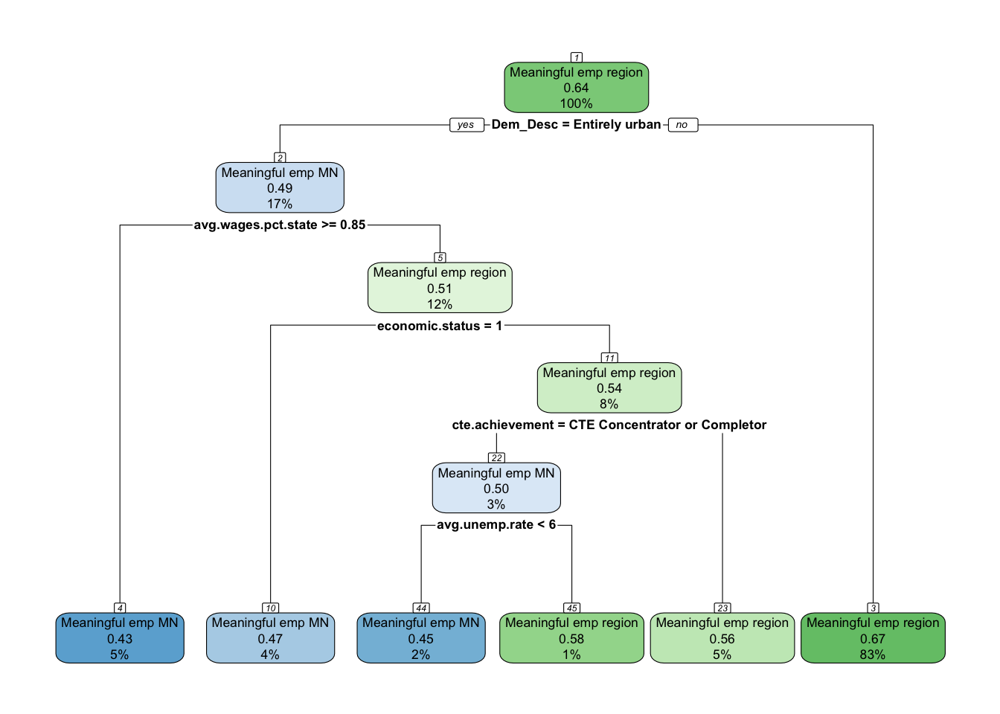
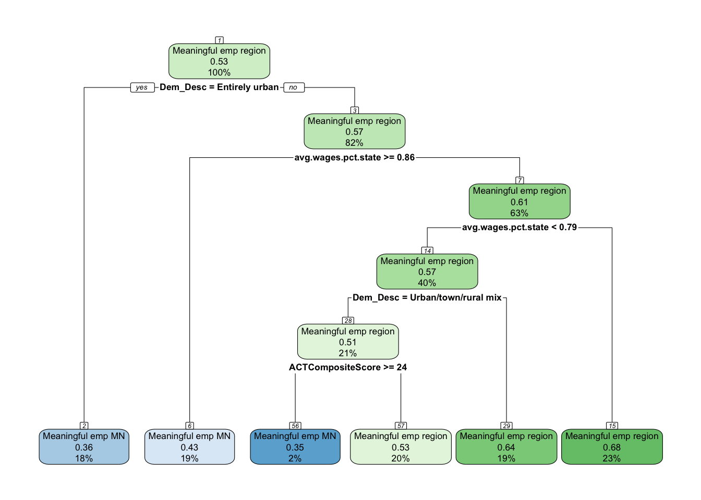
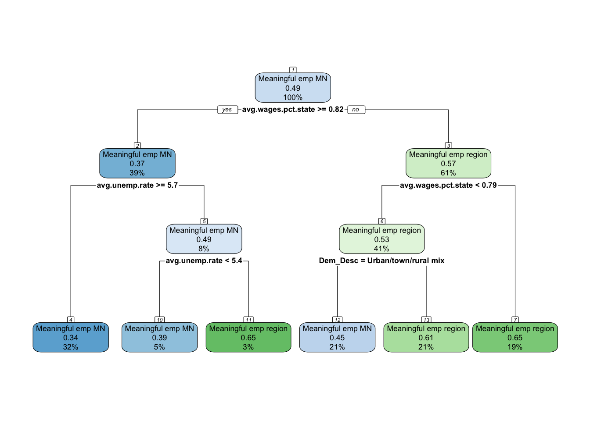
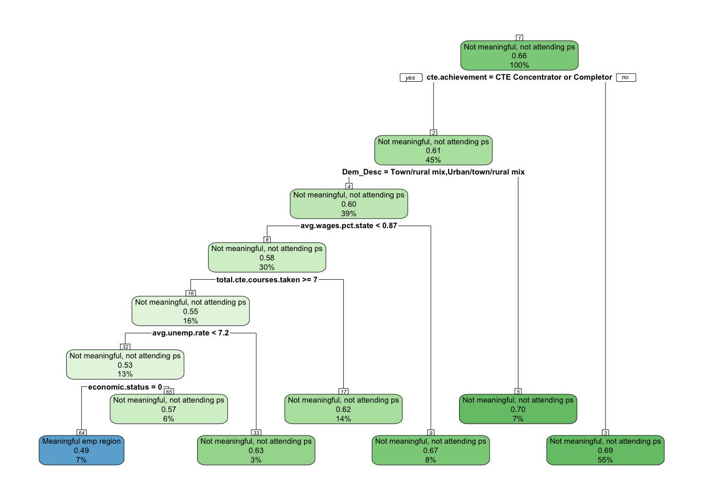
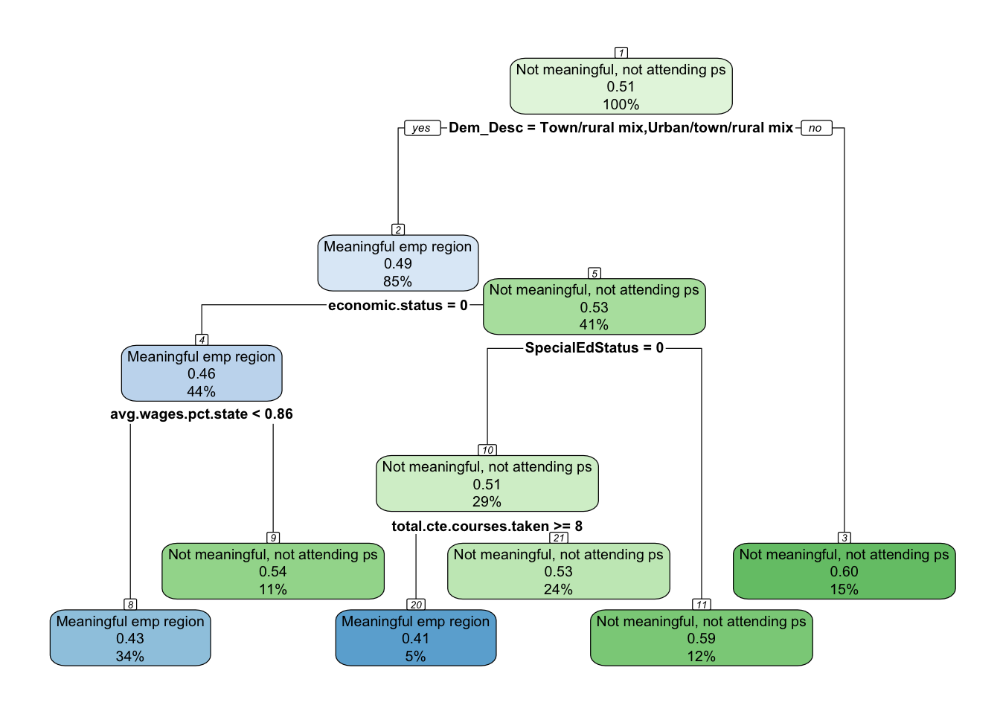
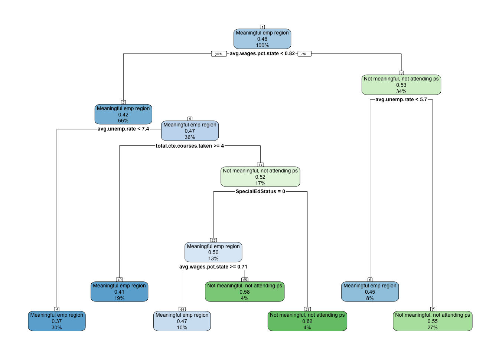
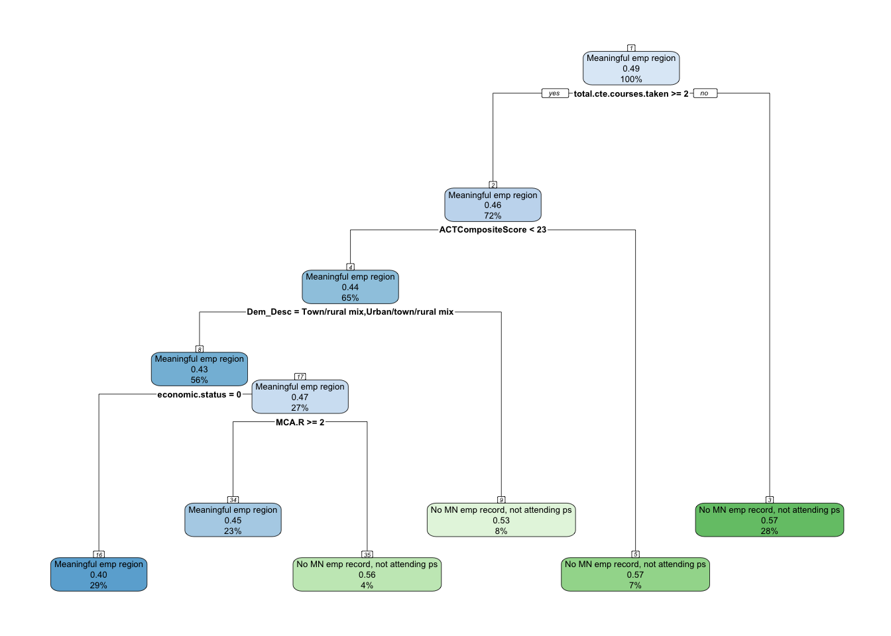
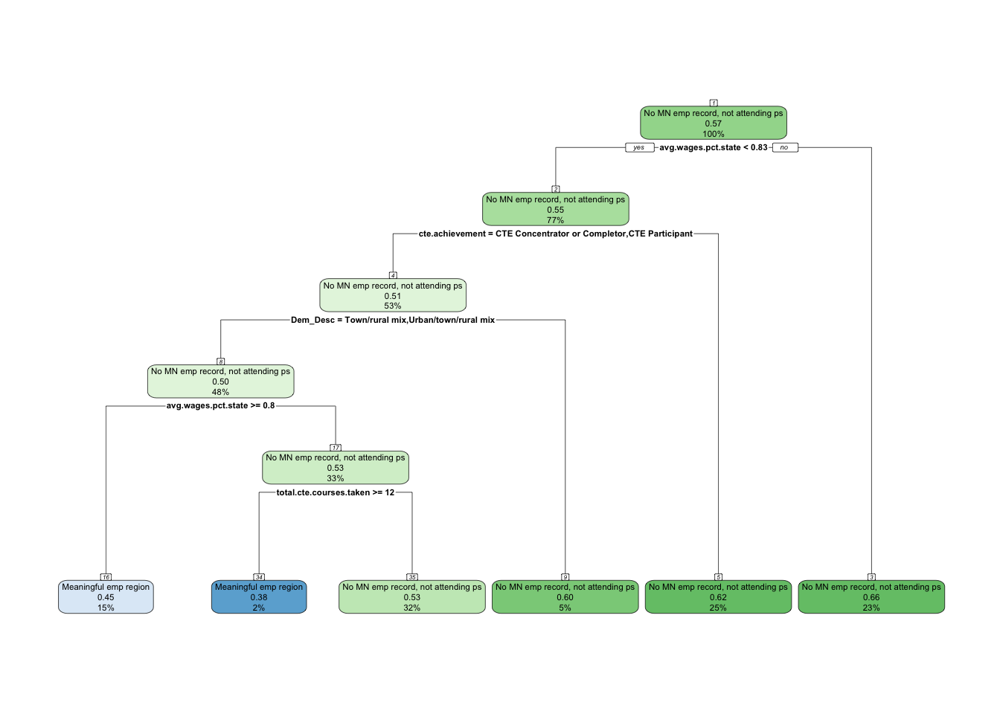

One of the aspects noticed during analysis is the percentage of individuals that never graduated college that also had meaningful employment in the region. The table below shows that 58% of the high school graduates in Central Minnesota never graduated college.
We are going to examine, more closely, this 58% of the population and see if there are patterns in which they end up in different employment outcomes 1-, 5- and 10-years after graduating high school.
Employment outcomes distribution
The following tables provide the percentage of non-college graduates that were categorized in the various employment outcomes at 1-, 5-, and 10-years after graduating high school.
Key Findings
The share of non-college graduates in meaningful regional employment increases between years one and five, but then levels off by year ten. At the same time, the proportion with no Minnesota employment record grows steadily, signaling rising long-term disconnection from the state’s workforce.
Interpretation
Year 1: 18.1% of non-college graduates were in meaningful regional employment. Most were either underemployed (34.6%) or disconnected (17.6%), with nearly one-fifth still attending postsecondary.
Year 5: The share in meaningful regional employment grew to 24.8%, nearly one in four. Combined with those employed meaningfully elsewhere in Minnesota, almost half had secured stable employment by this point. Still, another half remained split between non-meaningful work (25.5%) and no Minnesota record (23.9%).
Year 10: Regional meaningful employment held steady at 23.7%, while meaningful employment elsewhere in Minnesota reached 24.5%. However, the largest group had no Minnesota employment record (31.5%), suggesting growing detachment from the state labor force.
Conclusion
Meaningful employment in the region stabilizes at about one in four non-college graduates over time. While roughly half of this group secure stable jobs in Minnesota by year ten, an equally large share remain underemployed or disappear from the state’s workforce records. These patterns highlight both the resilience of some students in connecting to local opportunities without a degree, and the persistent risk of long-term disconnection for others.
Interpretation
One year after high school, 18.1% of non-college graduates had already secured meaningful employment in their home region. This is a significant minority given the short time frame, suggesting that a portion of students are able to connect directly into local, stable jobs. However, a larger share were in non-meaningful work (34.6%) or disconnected from the Minnesota labor market (17.6%). Another 19.4% were still attending a postsecondary institution, which reflects delayed full entry into the workforce.
Conclusion
Meaningful regional employment is possible even within the first year for non-college graduates, with nearly one in five achieving it. Yet the majority are either underemployed, disconnected, or still in school, showing that the local labor force pipeline is not yet fully capturing this population in the immediate years after high school.
Interpretation
Five years after high school, 24.8% of non-college graduates were in meaningful employment in their home region. This represents growth from the first year, showing that more students eventually connect to stable local jobs. Another 21.5% found meaningful employment elsewhere in Minnesota, while nearly half remained in less favorable situations—either not meaningful work (25.5%) or no Minnesota employment record at all (23.9%). Only 4.3% were still attending postsecondary, showing that for most in this group, the college path had closed.
Conclusion
By year five, nearly one in four non-college graduates achieved meaningful regional employment, and nearly half had meaningful employment somewhere in Minnesota. However, an equally large share remained underemployed or disconnected, underscoring a clear divide: some are able to establish themselves locally in stable jobs, while others remain at risk of long-term disconnection from the regional workforce.
Interpretation
Ten years after high school, 23.7% of non-college graduates were in meaningful employment in their home region, essentially holding steady with year five. Another 24.5% found meaningful employment elsewhere in Minnesota. However, the largest single group by year ten were those with no Minnesota employment record (31.5%), while 20.3% were working in non-meaningful jobs.
Conclusion
A decade after graduation, meaningful regional employment stabilizes at just under one-quarter of non-college graduates. While about half achieve meaningful employment in Minnesota overall, a growing share—nearly one-third—disappear from the state’s employment records. This suggests that by year ten, the divide between those who secure stable local employment and those who disconnect from the Minnesota labor market becomes even more pronounced.
This analysis is going to focus on that 58% of the graduates, and explore relationships and patterns of the portion of this population that found meaningful employment in the region vs. other employment outcomes.
Methodology
The above tables show the importance of understanding how non-college grads are navigating their post-high school pathways with a significant portion of them being disconnected from the regional workforce. To better understand these pathways, we will explore the relationships between independent variables (Demographic, High school characteristics, and High school accomplishments) along with workforce outcomes at 1-, 5- and 10-years after graduating high school.
Since we provided the descriptive statistics above, we now need to analyze which factors relate most strongly to outcomes, and then see if we can use those factors to build a predictive model.
For exploring the relationships we will do the following;
For categorical predictors (e.g., Race/Ethnicity, Gender, Economic status, CTE achievement, PSEO participation), use cross-tabs with Cramer’s V and chi-square.
For continuous predictors (e.g., ACT, MCA scores, total CTE courses, county-level variables), use ANOVA to compare means across the employment states.
Run these analyses separately for grad.year.1, grad.year.5, grad.year.10 to see how relationships shift over time.
For building the predictive model, we will do the following;
Identify important predictors
Focus on effect sizes rather than just significance (since large N will make almost everything significant).
Highlight which variables consistently show moderate-to-strong associations with employment outcomes.
These become the candidates for inclusion in CART modeling.
For each year (1, 5, 10), run CART where the dependent variable is a binary comparison with “Meaningful emp region” as the reference:
Meaningful emp region vs. Meaningful emp MN
Meaningful emp region vs. Not meaningful, not attending ps
Meaningful emp region vs. No MN emp record, not attending ps
This will:
Show which factors distinguish students who stay employed meaningfully in their region from those in other outcomes.
Provide clear decision rules (e.g., “Non-college grads with high ACT scores and PSEO experience are far more likely to achieve meaningful regional employment.”).
Feed directly into actionable insights for policymakers.
Independent variables
We are going to continue using the variables that we have used throughout this project.
High school characteristics:Dem_Desc, edr, avg.unemp.rate, avg.wages.pct.state
High school accomplishments:pseo.participant, cte.achievement, total.cte.courses.taken, ACTCompositeScore, MCA.M, MCA.R, MCA.S
Relationships
We will first explore the relationships between the independent variables and the 1-, 5- and 10-year outcomes.
Demographics
Key Findings
All demographic variables are significantly associated with employment outcomes across years one, five, and ten. Effect sizes ranged from very small for race/ethnicity to moderate for special education status, with economic status and gender in between. Ranking the strength of predictors:
Special Education Status (strongest, Cramer’s V = 0.166 → 0.075)
Economic Status (Cramer’s V = 0.106 → 0.067)
Gender (Cramer’s V = 0.086 → 0.107)
Race/Ethnicity (weakest, Cramer’s V = 0.048 → 0.052)
Interpretation
Special Education Status: The strongest and clearest predictor, with special education students much more likely to enter non-meaningful work or drop out of employment records early on. Gaps narrow by year ten, but disparities in non-meaningful jobs and disconnection remain.
Economic Status: Non–low-income students are more likely to secure meaningful employment statewide, while low-income students are overrepresented in non-meaningful jobs and disconnection. Regional meaningful employment rates are similar across groups, but job quality and broader opportunities diverge.
Gender: Males are consistently more likely to achieve meaningful employment in the region and Minnesota overall, while females are more often in non-meaningful jobs or disconnected. These differences are small in effect size but persist and grow slightly by year ten.
Race/Ethnicity: Although the weakest predictor statistically, disparities are still visible. White students are more likely to achieve meaningful regional employment, while American Indian, Black, and Hispanic students are more likely to be underemployed or disconnected. Asian/PI students stand out with higher meaningful employment outside the region but also the highest disconnection rates.
Conclusion
Demographics shape employment outcomes for non-college graduates in distinct ways. Special education status and economic disadvantage are the strongest barriers, followed by gendered differences in long-term workforce engagement. Race and ethnicity, while the weakest predictor statistically, still reveal persistent disparities, particularly for students of color. Together, these results suggest that targeted supports for special education students, low-income youth, and female graduates may be especially critical for improving long-term regional workforce participation among non-college graduates.
Gender
Key Findings
Across all years after high school, gender is significantly associated with employment outcomes, though the effect size remains small-to-moderate (Cramer’s V ranging from 0.079 to 0.107). The consistent pattern is that males are more likely to secure meaningful employment—particularly in their home region—while females are more likely to be underemployed or disconnected.
Interpretation
Year 1: Males were more likely than females to achieve meaningful regional employment (19.9% vs. 15.5%), while females were more likely to remain in postsecondary or be in non-meaningful work.
Year 5: The gap persisted, with 26.9% of males in meaningful regional employment compared to 21.9% of females. Non-meaningful employment was higher among females (28.7%) than males (23.1%).
Year 10: Differences became more pronounced. Males were more likely to achieve meaningful employment both in the region (26.0% vs. 20.8%) and in Minnesota overall (26.6% vs. 21.6%). Females were more likely to be in non-meaningful jobs (23.9% vs. 17.5%) or absent from Minnesota employment records (33.7% vs. 29.8%).
Conclusion
Gendered patterns in employment outcomes emerge early and persist over time. Males consistently achieve higher rates of meaningful regional and statewide employment, while females are more likely to remain in postsecondary, work in non-meaningful jobs, or drop out of Minnesota’s employment records. Although the statistical effect is modest, the persistence of these differences suggests that gender-specific supports may be important for improving long-term workforce participation among female non-college graduates.
Key Findings
The association between gender and employment outcomes one year after high school is statistically significant (χ²=484.8, df=4, p<0.001) with a Cramer’s V of 0.086, indicating a small effect size.
Interpretation
Meaningful employment in region: Males (19.9%) were more likely than females (15.5%) to achieve meaningful employment in the region.
Meaningful employment in MN (outside region): Rates were similar, with males (10.8%) slightly higher than females (9.6%).
Not meaningful employment: Females were more likely to be in non-meaningful work (37.9%) compared to males (32.1%).
No MN employment record: Males (18.8%) had slightly higher rates than females (15.9%).
Attending PS: Females (21.0%) were more likely than males (18.3%) to still be attending postsecondary.
Conclusion
Gender shows a small but notable association with early employment outcomes among non-college graduates. Males are more likely to achieve meaningful regional employment by year one, while females are more likely to remain in postsecondary or be employed in non-meaningful jobs. Although the effect size is modest, these differences suggest gendered patterns in how non-college graduates transition into the workforce.
Key Findings
The association between gender and employment outcomes five years after high school is statistically significant (χ²=294.7, df=4, p<0.001) with a Cramer’s V of 0.079, indicating a small effect size.
Interpretation
Meaningful employment in region: Males (26.9%) were more likely than females (21.9%) to achieve meaningful regional employment.
Meaningful employment in MN (outside region): Rates were similar, with males (22.1%) slightly higher than females (20.7%).
Not meaningful employment: Females were more likely to be in non-meaningful jobs (28.7%) compared to males (23.1%).
No MN employment record: Rates were virtually identical between females (23.9%) and males (23.9%).
Attending PS: Females (4.8%) were somewhat more likely than males (3.9%) to still be enrolled in postsecondary.
Conclusion
By year five, gender differences persist but remain modest. Males are more likely to secure meaningful regional employment, while females are more likely to be employed in non-meaningful jobs or remain enrolled in postsecondary. Overall, gender continues to shape pathways into the workforce for non-college graduates, though the effect remains small.
Key Findings
The association between gender and employment outcomes ten years after high school is statistically significant (χ²=313.5, df=3, p<0.001) with a Cramer’s V of 0.107, indicating a small-to-moderate effect size.
Interpretation
Meaningful employment in region: Males (26.0%) were more likely than females (20.8%) to secure meaningful regional employment.
Meaningful employment in MN (outside region): Males (26.6%) also outpaced females (21.6%).
Not meaningful employment: Females (23.9%) were more likely than males (17.5%) to be employed in non-meaningful jobs.
No MN employment record: Females (33.7%) were more likely than males (29.8%) to have no Minnesota employment record.
Conclusion
By year ten, gender differences in employment outcomes are more pronounced than at earlier points. Males are significantly more likely to achieve meaningful employment—both in the region and elsewhere in Minnesota—while females are more likely to be underemployed or disconnected from the Minnesota workforce. Although the effect size remains modest, these differences highlight persistent gendered patterns in long-term employment trajectories for non-college graduates.
Key Findings
Race and ethnicity are consistently associated with employment outcomes for non-college graduates across years one, five, and ten. Although effect sizes are small (Cramer’s V = 0.048–0.052), disparities persist over time, with White students more likely to achieve meaningful regional employment and students of color disproportionately represented in non-meaningful work or disconnected from Minnesota’s workforce.
Interpretation
Year 1: White students (18.0%) were more likely than American Indian (12.4%), Black (11.1%), or Hispanic (15.8%) students to achieve meaningful regional employment. American Indian and Black students had higher rates of non-meaningful employment (40.2% and 38.7%, respectively), while American Indian and Hispanic students were more likely to have no Minnesota employment record (27.3% and 25.5%).
Year 5: White students (25.7%) again led in meaningful regional employment, followed by Hispanic (20.4%), American Indian (18.4%), and Black (14.1%) students. Asian/PI students (13.8%) had the lowest rate of regional meaningful employment but the highest rate of meaningful employment outside the region (24.2%). Disconnection remained elevated for American Indian (30.4%) and Hispanic (32.9%) students.
Year 10: White students (24.5%) remained most likely to achieve meaningful regional employment, while Black (13.9%), Asian/PI (13.7%), and American Indian (16.6%) students had the lowest rates. Asian/PI (45.4%), Hispanic (42.7%), and Black (40.2%) students faced the highest levels of disconnection compared to White students (31.5%).
Conclusion
Over ten years, racial and ethnic disparities in employment outcomes for non-college graduates remain consistent. White students are most likely to secure meaningful employment in their region, while students of color—especially American Indian, Black, and Hispanic students—are more likely to experience underemployment or complete disconnection from Minnesota’s workforce. Asian/PI students stand out with higher meaningful employment outside the region but also the greatest long-term disconnection. These results suggest that structural inequities shape workforce outcomes even when all groups are limited to those who did not complete college.
Key Findings
The association between race/ethnicity and employment outcomes one year after high school is statistically significant (χ²=529.4, df=16, p<0.001) with a Cramer’s V of 0.048, indicating a very small effect size.
Interpretation
Meaningful employment in region: White students (18.0%) and Asian/PI students (11.0%) were more likely to secure meaningful regional employment than Black (11.1%), Hispanic (15.8%), or American Indian (12.4%) students.
Not meaningful employment: American Indian (40.2%) and Black (38.7%) students had notably higher rates of non-meaningful employment compared to White students (34.1%).
No MN employment record: American Indian (27.3%) and Hispanic (25.5%) students were more likely than White students (16.3%) to have no Minnesota employment record.
Attending PS: Asian/PI students (26.0%) were more likely to still be attending postsecondary compared to White students (21.7%).
Conclusion
Although the overall effect size is small, racial and ethnic disparities in early workforce outcomes are evident. White students are somewhat more likely to achieve meaningful regional employment, while American Indian, Black, and Hispanic students are disproportionately represented in non-meaningful work or disconnected from Minnesota’s workforce. These differences suggest that structural barriers continue to influence workforce entry even among students who do not complete college.
Key Findings
The association between race/ethnicity and employment outcomes five years after high school is statistically significant (χ²=455.6, df=16, p<0.001) with a Cramer’s V of 0.049, indicating a very small effect size.
Interpretation
Meaningful employment in region: White students (25.7%) were most likely to secure meaningful regional employment, while rates were lower among American Indian (18.4%), Black (14.1%), and Hispanic (20.4%) students. Asian/PI students had the lowest rate (13.8%).
Meaningful employment in MN (outside region): Black (17.9%) and Hispanic (19.3%) students lagged behind White students (21.8%). Asian/PI students had the highest share in this category (24.2%).
Not meaningful employment: Black (33.9%) and American Indian (32.9%) students were more likely to be in non-meaningful jobs compared to White students (25.1%).
No MN employment record: American Indian (30.4%) and Hispanic (32.9%) students were far more likely than White students (23.0%) to have no Minnesota employment record.
Attending PS: Rates were very low for all groups (3–6%), reflecting the end of most students’ postsecondary enrollment attempts.
Conclusion
By year five, disparities across race and ethnicity persist. White students are most likely to achieve meaningful regional employment, while American Indian, Black, and Hispanic students face higher risks of underemployment or disconnection. Asian/PI students stand out for their higher rate of meaningful employment outside the region, but their regional outcomes remain among the lowest. These patterns reinforce that racial and ethnic gaps in early workforce outcomes remain significant for non-college graduates, even as more students settle into longer-term employment paths.
Key Findings
The association between race/ethnicity and employment outcomes ten years after high school is statistically significant (χ²=221.3, df=12, p<0.001) with a Cramer’s V of 0.052, indicating a very small effect size.
Interpretation
Meaningful employment in region: White students (24.5%) were more likely to achieve meaningful regional employment than American Indian (16.6%), Black (13.9%), Hispanic (18.1%), or Asian/PI (13.7%) students.
Meaningful employment in MN (outside region): White students (24.8%) again led, while Asian/PI students (23.9%) were close behind. Rates were lower among American Indian (18.1%), Black (20.2%), and Hispanic (21.1%) students.
No MN employment record: Disconnection was most pronounced among Asian/PI (45.4%), Hispanic (42.7%), and Black (40.2%) students, compared to 31.5% of White students.
Not meaningful employment: American Indian (29.7%) and Black (25.7%) students were most likely to be in non-meaningful jobs, compared to 20.0% of White students.
Conclusion
By year ten, racial and ethnic disparities remain visible. White students are most likely to achieve meaningful regional employment, while students of color—particularly American Indian, Black, and Hispanic—are more likely to be underemployed or disconnected from the Minnesota workforce. Asian/PI students stand out for relatively higher meaningful employment outside the region but also the highest levels of disconnection. Although the overall effect size is small, the persistence of these gaps suggests long-term structural disadvantages for students of color who do not graduate from college.
Key Findings
Economic status is consistently associated with outcomes across years one, five, and ten, with small-to-moderate effect sizes that taper over time (Cramer’s V: 0.106 → 0.075 → 0.067). Differences in meaningful employment in the region are small, but gaps are clearer for non-meaningful work and disconnection, where low-income students fare worse.
Interpretation
Year 1: Regional meaningful employment rates are nearly identical (18.0% non–low-income vs. 18.2% low-income). However, low-income students are more concentrated in non-meaningful jobs (38.1% vs. 32.0%) and slightly more likely to have no MN employment record (18.6% vs. 16.8%). Non–low-income students are more often still attending PS (22.9% vs. 14.9%).
Year 5: A small edge emerges for regional meaningful employment (25.3% non–low-income vs. 24.1% low-income) and a clearer gap for meaningful MN (outside region) (23.1% vs. 19.3%). Low-income students remain more concentrated in non-meaningful jobs (28.4% vs. 23.3%); disconnection rates are similar (~24%).
Year 10: Regional meaningful employment is again close (24.1% non–low-income vs. 23.3% low-income), but non–low-income students retain an advantage in meaningful MN (outside region) (26.5% vs. 21.6%). Low-income students are more likely to be non-meaningfully employed (22.6% vs. 18.6%) and slightly more likely to have no MN record (32.5% vs. 30.8%).
Conclusion
Economic disadvantage does not substantially change the share achieving meaningful employment in the region, but it does shift outcomes toward non-meaningful work and disconnection, and away from meaningful employment elsewhere in MN. In practice: to raise regional meaningful employment among low-income non–college grads, interventions should focus on upgrading job quality and retention (e.g., paid work-based learning, credential-in-place supports, transportation/childcare, and employer partnerships) rather than expecting large differences in initial regional placement rates.
Key Findings
The association between economic status and employment outcomes one year after high school is statistically significant (χ²=731.2, df=4, p<0.001) with a Cramer’s V of 0.106, indicating a small-to-moderate effect size.
Interpretation
Meaningful employment in region: Rates were nearly identical between non-low-income (18.0%) and low-income (18.2%) students.
Meaningful employment in MN (outside region): Outcomes were also similar, with 10.4% for non-low-income and 10.2% for low-income students.
Not meaningful employment: A key difference emerged here: 38.1% of low-income students were in non-meaningful jobs, compared to 32.0% of non-low-income students.
No MN employment record: Low-income students (18.6%) were slightly more likely than non-low-income students (16.8%) to have no record.
Attending PS: Non-low-income students (22.9%) were more likely than low-income students (14.9%) to still be in postsecondary one year out.
Conclusion
Economic status shows its strongest influence in shaping early employment quality. Low-income students are more likely to enter non-meaningful work or drop out of Minnesota’s employment records, while non-low-income students are more likely to remain connected to postsecondary education. Although rates of meaningful regional employment are nearly identical across groups at year one, the overall distribution highlights the early disadvantages facing low-income students.
Key Findings
The association between economic status and employment outcomes five years after high school is statistically significant (χ²=272.2, df=4, p<0.001) with a Cramer’s V of 0.075, indicating a small effect size.
Interpretation
Meaningful employment in region: Non-low-income students (25.3%) were slightly more likely than low-income students (24.1%) to achieve meaningful regional employment.
Meaningful employment in MN (outside region): The gap was more noticeable here, with 23.1% of non-low-income students in meaningful jobs elsewhere in Minnesota compared to 19.3% of low-income students.
Not meaningful employment: Low-income students were more likely to be in non-meaningful jobs (28.4%) than non-low-income students (23.3%).
No MN employment record: Rates were very similar (23.4% non-low-income vs. 24.6% low-income).
Attending PS: Non-low-income students (4.9%) were slightly more likely than low-income students (3.5%) to still be enrolled.
Conclusion
By year five, disparities in outcomes by economic status are clearer. Non-low-income students are more likely to secure meaningful employment both in the region and across Minnesota, while low-income students are more likely to be concentrated in non-meaningful jobs. Differences in disconnection rates are minimal, but the overall trend points to greater vulnerability to underemployment among low-income students.
Key Findings
The association between economic status and employment outcomes ten years after high school is statistically significant (χ²=122.4, df=3, p<0.001) with a Cramer’s V of 0.067, indicating a small effect size.
Interpretation
Meaningful employment in region: Rates were nearly identical, with 24.1% of non-low-income and 23.3% of low-income students in meaningful regional jobs.
Meaningful employment in MN (outside region): A larger gap appeared here: 26.5% of non-low-income students achieved meaningful employment elsewhere in Minnesota, compared to 21.6% of low-income students.
Not meaningful employment: Low-income students (22.6%) were more likely than non-low-income students (18.6%) to be in non-meaningful jobs.
No MN employment record: Disconnection remained high for both groups, though slightly greater among low-income students (32.5%) compared to non-low-income students (30.8%).
Conclusion
By year ten, differences in meaningful regional employment by economic status are minimal, but gaps persist in other areas. Non-low-income students are more likely to secure meaningful employment elsewhere in Minnesota, while low-income students are more often underemployed or disconnected. These patterns show that economic disadvantage exerts a lasting influence, primarily by increasing the risk of lower-quality employment outcomes.
Key Findings
Special education status is one of the strongest demographic predictors of employment outcomes among non-college graduates, though its influence declines over time (Cramer’s V: 0.166 → 0.096 → 0.075). The biggest differences are visible in year one, where special education students are much more likely to be disconnected or in non-meaningful jobs. By year ten, disparities in regional meaningful employment largely disappear, though gaps remain in other outcomes.
Interpretation
Year 1: Non-special ed students were more likely to achieve meaningful regional employment (18.5% vs. 16.6%) and meaningful MN employment overall (10.7% vs. 8.9%). Special ed students were far more concentrated in non-meaningful jobs (40.4% vs. 32.9%) and disconnection (24.9% vs. 15.5%), and less likely to remain in postsecondary (9.2% vs. 22.3%).
Year 5: The gap narrowed, but non-special ed students still had an advantage in meaningful regional employment (25.1% vs. 23.7%) and especially meaningful employment elsewhere in MN (22.8% vs. 16.4%). Special ed students continued to show higher rates of non-meaningful work (29.9% vs. 24.3%) and disconnection (27.6% vs. 23.0%).
Year 10: Regional meaningful employment rates were nearly identical (23.8% vs. 23.6%). However, non-special ed students were more likely to achieve meaningful work outside the region (25.8% vs. 18.9%), while special ed students were more often in non-meaningful jobs (24.5% vs. 19.2%) or disconnected (33.0% vs. 31.1%).
Conclusion
Special education students face substantial disadvantages in the first years after high school, entering non-meaningful work or falling out of the workforce at higher rates than peers. Over time, they achieve parity in regional meaningful employment, but they remain less likely to access broader opportunities across Minnesota and more likely to face underemployment or disconnection. These findings suggest that targeted interventions in the early transition years after high school are especially critical for improving long-term outcomes among students with special education status.
Key Findings
The association between special education status and employment outcomes one year after high school is statistically significant (χ²=1791.5, df=4, p<0.001) with a Cramer’s V of 0.166, indicating a moderate effect size — stronger than other demographic variables at this early stage.
Interpretation
Meaningful employment in region: Students without special education status (18.5%) were somewhat more likely than those with special education status (16.6%) to achieve meaningful regional employment.
Meaningful employment in MN (outside region): A similar gap exists (10.7% non-special ed vs. 8.9% special ed).
Not meaningful employment: Students with special education status were far more likely to be in non-meaningful jobs (40.4%) compared to peers without special ed (32.9%).
No MN employment record: Special education students (24.9%) were much more likely than non-special ed students (15.5%) to have no Minnesota employment record.
Attending PS: Non-special ed students (22.3%) were more likely than special ed students (9.2%) to still be attending postsecondary one year out.
Conclusion
Special education status is one of the strongest demographic predictors of early employment outcomes among non-college graduates. Students with special education status are more likely to be disconnected or in non-meaningful jobs, and less likely to remain enrolled in postsecondary or achieve meaningful employment in the region. These differences highlight the additional barriers faced by special education students in transitioning to the workforce without a college degree.
Key Findings
The association between special education status and employment outcomes five years after high school is statistically significant (χ²=443.7, df=4, p<0.001) with a Cramer’s V of 0.096, indicating a small-to-moderate effect size. The strength of association has declined since year one but remains meaningful.
Interpretation
Meaningful employment in region: Non-special ed students (25.1%) were slightly more likely than special ed students (23.7%) to achieve meaningful regional employment.
Meaningful employment in MN (outside region): Non-special ed students (22.8%) outpaced special ed students (16.4%).
Not meaningful employment: Students with special education status had higher rates of non-meaningful jobs (29.9%) compared to non-special ed students (24.3%).
No MN employment record: Special education students were more disconnected (27.6%) than non-special ed students (23.0%).
Attending PS: Non-special ed students were about twice as likely to still be enrolled (4.8% vs. 2.3%).
Conclusion
By year five, disparities by special education status persist, though the gaps are smaller than at year one. Non-special ed students remain more likely to achieve meaningful employment both in the region and statewide, while special education students face elevated risks of non-meaningful work and disconnection. This indicates continuing structural barriers for special education students in transitioning into stable employment.
Key Findings
The association between special education status and employment outcomes ten years after high school is statistically significant (χ²=151.9, df=3, p<0.001) with a Cramer’s V of 0.075, indicating a small effect size. The strength of the relationship has diminished compared to earlier years, though differences remain.
Interpretation
Meaningful employment in region: Rates were nearly the same—23.8% for non-special ed students and 23.6% for special ed students.
Meaningful employment in MN (outside region): Non-special ed students (25.8%) were more likely than special ed students (18.9%) to achieve meaningful work elsewhere in Minnesota.
Not meaningful employment: Special ed students had higher rates of non-meaningful jobs (24.5%) than non-special ed students (19.2%).
No MN employment record: Special ed students (33.0%) were slightly more likely than non-special ed students (31.1%) to be disconnected from Minnesota’s workforce.
Conclusion
By year ten, gaps in meaningful regional employment by special education status have largely closed. However, disparities persist elsewhere: non-special ed students are more likely to secure meaningful work in Minnesota outside the region, while special ed students face higher risks of underemployment or disconnection. These results suggest that while some barriers ease over time, special education students remain disproportionately concentrated in less stable workforce outcomes.
Key Findings
High school context variables show consistent but small associations with employment outcomes across years one, five, and ten. Compared to Demographics, these effects are weaker, but they highlight how regional and local economic conditions shape whether non-college graduates secure meaningful employment in their home region, elsewhere in Minnesota, or fall into less favorable outcomes.
Ranking of influence:
Rural/Urban Context (Dem_Desc) – strongest, Cramer’s V up to 0.100
Economic Development Region (EDR) – Cramer’s V up to 0.084
County Wages – modest but consistent effects (0.3–1.1 pp)
County Unemployment – weakest, small contextual effect (0.1–0.4 pp)
Interpretation
Rural/Urban Context: Rural/town students are more likely to stay and secure meaningful regional employment, while urban students are much more likely to migrate for meaningful jobs elsewhere in Minnesota. This divide grows stronger over time.
EDR: Regional differences are small but clear. North Central students are more likely to achieve meaningful employment in their home region, while East Central students are more likely to find meaningful work outside their region. Central students fall in between.
County Unemployment: Students from lower-unemployment counties are slightly more likely to secure meaningful regional employment, while those from higher-unemployment counties face somewhat higher risks of non-meaningful jobs or disconnection. Effects are consistent but weak.
County Wages: Higher-wage counties are tied to meaningful employment outside the home region, while lower-wage counties are associated with remaining in regional jobs or landing in less favorable categories. This wage-based “push-pull” dynamic is stable across all years.
Conclusion
High school characteristics matter less than demographic factors but still shape employment pathways. Rural/urban context and EDR have the clearest effects, influencing whether students work close to home or migrate for opportunities. Economic context (wages, unemployment) provides modest additional influence: stronger local economies support attachment to meaningful jobs, while weaker local economies increase risks of disconnection. Together, these results suggest that while individual-level supports are critical, regional economic development and job quality initiatives are also necessary to improve long-term outcomes for non-college graduates.
edr
Key Findings
EDR is consistently associated with employment outcomes across years one, five, and ten, though effect sizes remain small (Cramer’s V: 0.058 → 0.075 → 0.084). The strongest contrasts are between North Central and East Central: North Central students are more likely to secure meaningful employment in their home region, while East Central students are more likely to migrate for meaningful work elsewhere in Minnesota.
Interpretation
Year 1: Regional meaningful employment was highest among North Central students (20.4%), compared to Central (18.2%) and East Central (15.5%). East Central students were more likely to find meaningful work outside their region (12.2% vs. 7.6% in North Central).
Year 5: Gaps widened. North Central students led in meaningful regional employment (28.2%), while East Central lagged (19.8%). Conversely, East Central students were far more likely to find meaningful employment elsewhere in Minnesota (25.5%), compared to Central (22.2%) and North Central (15.6%).
Year 10: The same pattern persisted. North Central students had the highest regional meaningful employment (27.3%) but the lowest meaningful employment elsewhere (17.4%). East Central students had the lowest regional meaningful employment (18.6%) but the highest meaningful employment outside the region (29.5%). Central students consistently fell between the two extremes.
Conclusion
Regional labor markets shape where non-college graduates find meaningful employment. North Central students are more likely to stay and succeed locally, while East Central students are more likely to migrate for opportunities elsewhere in Minnesota. Central students show a balance between these two patterns. Although the overall effect of EDR is small compared to demographics, these findings emphasize the importance of local economic conditions in determining whether non-college graduates can build stabl
Key Findings
The association between high school Economic Development Region (EDR) and employment outcomes one year after high school is statistically significant (χ²=436.7, df=8, p<0.001) with a Cramer’s V of 0.058, indicating a very small effect size.
Interpretation
Meaningful employment in region: Rates varied by region, from 15.5% in East Central to 20.4% in North Central, with Central falling in between (18.2%).
Meaningful employment in MN (outside region): East Central had the highest share (12.2%), compared to 7.6% in North Central and 10.6% in Central.
Not meaningful employment: Fairly similar across regions, ranging from 34.1% to 35.7%.
No MN employment record: Slightly higher in North Central (20.2%) compared to East Central (18.2%) and Central (16.2%).
Attending PS: Central students were most likely to still be in postsecondary (20.7%), compared to North Central (17.7%) and East Central (18.4%).
Conclusion
Regional differences in outcomes exist but are relatively small in magnitude. North Central students are somewhat more likely to achieve meaningful employment in their home region, while East Central students are more likely to find meaningful work elsewhere in Minnesota. Overall, EDR plays a modest role compared to demographic factors, though local labor markets do shape the balance between regional employment and disconnection.
Key Findings
The association between high school Economic Development Region (EDR) and employment outcomes five years after high school is statistically significant (χ²=539.0, df=8, p<0.001) with a Cramer’s V of 0.075, indicating a small effect size.
Interpretation
Meaningful employment in region: North Central students had the highest rate (28.2%), followed by Central (25.7%) and East Central (19.8%).
Meaningful employment in MN (outside region): East Central students were most likely to find meaningful work outside their home region (25.5%), compared to Central (22.2%) and North Central (15.6%).
Not meaningful employment: Fairly similar across regions, ranging from 24.7% in Central to 27.1% in East Central.
No MN employment record: Highest in North Central (26.8%), compared to 23.4% in East Central and 22.9% in Central.
Attending PS: Small differences remain (3.8%–4.6%), reflecting the tail end of postsecondary enrollment.
Conclusion
By year five, regional patterns become clearer. North Central students are more likely to achieve meaningful employment in their home region, while East Central students are more likely to find meaningful work elsewhere in Minnesota. Central students fall between the two. Although effect sizes remain small, these differences suggest that local labor market conditions and opportunities shape whether non-college graduates work close to home or migrate for meaningful employment.
Key Findings
The association between high school Economic Development Region (EDR) and employment outcomes ten years after high school is statistically significant (χ²=380.3, df=6, p<0.001) with a Cramer’s V of 0.084, indicating a small effect size.
Interpretation
Meaningful employment in region: North Central students were most likely to achieve meaningful regional employment (27.3%), followed by Central (24.7%) and East Central (18.6%).
Meaningful employment in MN (outside region): East Central students were most likely to find meaningful work elsewhere in Minnesota (29.5%), compared to Central (25.3%) and North Central (17.4%).
Not meaningful employment: Similar across regions, ranging from 19.1% in Central to 22.2% in East Central.
No MN employment record: Highest in North Central (34.6%), compared to Central (30.9%) and East Central (29.8%).
Conclusion
By year ten, regional differences in workforce outcomes remain consistent with earlier years. North Central students are more likely to stay and find meaningful work in their home region, while East Central students are more likely to leave the region for meaningful work elsewhere in Minnesota. Central students fall in between. Although effect sizes remain small, these patterns highlight the influence of regional labor markets in shaping whether non-college graduates build careers locally or migrate within the state.
Key Findings
Rural/urban context is consistently associated with employment outcomes across years one, five, and ten, with small effect sizes that grow slightly over time (Cramer’s V: 0.070 → 0.093 → 0.100). The strongest contrast is between town/rural mix and entirely urban schools: rural/town students are more likely to stay and work meaningfully in their home region, while urban students are far more likely to migrate for meaningful employment elsewhere in Minnesota.
Interpretation
Year 1: Town/rural mix students were most likely to achieve meaningful regional employment (20.4%), while urban students lagged (13.2%). Urban students were more likely to secure meaningful work outside their region (14.3% vs. 7.6% for town/rural mix).
Year 5: The divide widened. Town/rural mix students led in regional meaningful employment (28.2%), while urban students lagged again (17.0%). Conversely, urban students were much more likely to secure meaningful employment outside their region (29.8% vs. 15.6%).
Year 10: The same pattern persisted. Town/rural mix students had the highest meaningful regional employment (27.3%), while urban students had the lowest (15.5%). Urban students were far more likely to migrate for meaningful jobs elsewhere in Minnesota (34.1%), compared to 17.4% for town/rural mix. Urban/town/rural mix schools consistently fell in between.
Conclusion
The rural–urban divide in employment outcomes for non-college graduates is clear and persistent. Rural/town students are more likely to stay and secure meaningful work in their home region, while urban students are more likely to migrate for meaningful jobs elsewhere in Minnesota. Although the effect size is small, these patterns highlight how geography and local labor markets influence whether students without college degrees build stable careers close to home or rely on mobility to find meaningful employment.
Key Findings
The association between school rural/urban context and employment outcomes one year after high school is statistically significant (χ²=641.5, df=8, p<0.001) with a Cramer’s V of 0.070, indicating a small effect size.
Interpretation
Meaningful employment in region: Students from town/rural mix schools were most likely to secure meaningful regional employment (20.4%), compared to 18.6% from urban/town/rural mix schools and 13.2% from entirely urban schools.
Meaningful employment in MN (outside region): Entirely urban students were most likely to find meaningful employment outside the region (14.3%), compared to 10.2% for urban/town/rural mix and 7.6% for town/rural mix.
Not meaningful employment: Rates were similar across all contexts (34–35%).
No MN employment record: Town/rural mix students had the highest disconnection (20.2%), compared to 16.2% for urban and 17.0% for urban/town/rural mix.
Attending PS: Urban students were most likely to still be in postsecondary (22.3%), compared to 19.3% of urban/town/rural mix and 17.7% of town/rural mix students.
Conclusion
High school rural/urban context shapes early employment trajectories in meaningful ways. Rural/town students are more likely to find meaningful employment in their home region, while urban students are more likely to pursue postsecondary or find meaningful work outside their region. Effect sizes remain small, but the differences highlight how local opportunities interact with geography to influence whether non-college graduates work locally, migrate, or remain in school.
Key Findings
The association between school rural/urban context and employment outcomes five years after high school is statistically significant (χ²=818.9, df=8, p<0.001) with a Cramer’s V of 0.093, indicating a small effect size, somewhat stronger than at year one.
Interpretation
Meaningful employment in region: Students from town/rural mix schools were most likely to achieve meaningful regional employment (28.2%), compared to 25.8% from urban/town/rural mix schools and just 17.0% from entirely urban schools.
Meaningful employment in MN (outside region): Urban students were far more likely to work meaningfully outside their home region (29.8%), compared to 21.3% from urban/town/rural mix and 15.6% from town/rural mix.
Not meaningful employment: Very similar across all contexts (~25–26%).
No MN employment record: Higher among town/rural mix students (26.8%) than urban/town/rural mix (23.2%) and entirely urban (22.5%).
Attending PS: Still low across groups, with slightly higher shares for urban students (5.5%) compared to town/rural mix (3.8%).
Conclusion
By year five, differences in outcomes by school context are clearer. Rural/town students are more likely to stay and find meaningful employment locally, while urban students are more likely to secure meaningful jobs outside their region. Urban/town/rural mix schools fall in between. While the effect size is still small, the rural–urban divide in workforce attachment versus geographic mobility is more pronounced by this stage.
Key Findings
The association between school rural/urban context and employment outcomes ten years after high school is statistically significant (χ²=543.1, df=6, p<0.001) with a Cramer’s V of 0.100, indicating a small effect size, slightly stronger than at earlier years.
Interpretation
Meaningful employment in region: Students from town/rural mix schools were most likely to achieve meaningful regional employment (27.3%), compared to 24.9% from urban/town/rural mix schools and 15.5% from entirely urban schools.
Meaningful employment in MN (outside region): Urban students were far more likely to find meaningful work outside their region (34.1%) compared to 24.3% from urban/town/rural mix and 17.4% from town/rural mix.
No MN employment record: Disconnection was highest for town/rural mix students (34.6%), compared to 30.9% for urban/town/rural mix and 29.4% for urban students.
Not meaningful employment: Similar across contexts (20–21%).
Conclusion
By year ten, the rural–urban divide is clear. Rural/town students are most likely to remain and work meaningfully in their home region, while urban students are far more likely to migrate for meaningful employment elsewhere in Minnesota. Urban/town/rural mix schools show more balanced outcomes. Although the effect size remains small, these patterns highlight geographic mobility as a key differentiator in long-term workforce outcomes for non-college graduates.
Key Findings
County unemployment rate is significantly associated with outcomes at all three checkpoints, with the relationship weakening over time (ANOVA: Year 1 F=125.9; Year 5 F=34.4; Year 10 F=10.8; all p<0.001). Lower local unemployment is linked to a higher likelihood of meaningful employment in the region (and statewide), while higher unemployment tilts outcomes toward less favorable states. Differences between meaningful in region vs meaningful elsewhere in MN are consistently small and often not significant.
Interpretation
Year 1: Students in meaningful jobs (regional or MN-wide) come from counties with markedly lower unemployment than those still attending PS. The gap between the two meaningful categories is small (~0.14 percentage points) though statistically detectable.
Year 5: The pattern holds: both meaningful categories are associated with lower unemployment than the PS group. The difference between meaningful in region vs meaningful in MN is not significant, indicating place-based labor strength supports meaningful work generally, not just locally.
Year 10: Effects attenuate but persist. Non-meaningful and no MN record outcomes are tied to counties with higher unemployment than meaningful categories (~0.09–0.14 pp higher), while regional vs MN meaningful again shows no meaningful difference.
Conclusion
Stronger local labor markets modestly raise the odds of meaningful regional employment for non-college graduates, but the effect is small and fades over time as individual trajectories solidify. Policy efforts to improve job access and quality in higher-unemployment counties (employer partnerships, placement supports, transportation/childcare) can help, but the largest gains will likely come when place-based strategies are paired with individual-level supports identified in stronger predictors (e.g., special education status, economic disadvantage, academic preparation).
Key Findings
The ANOVA results show a strong and statistically significant association between county unemployment rate and employment outcomes (F(4, 64,904) = 125.9, p < 0.001).
Interpretation
Students in meaningful regional employment came from counties with unemployment rates significantly lower than those in less favorable categories.
Compared to those still attending PS, unemployment rates were lower by about 0.40 percentage points for meaningful regional employment and 0.54 points for meaningful MN employment.
Students in non-meaningful jobs were associated with unemployment rates 0.24 points higher than those in meaningful regional employment.
Students with no MN employment record were also linked to counties with higher unemployment rates (0.16 points higher).
The difference between meaningful regional and meaningful MN employment was modest but statistically significant (0.14 points).
Conclusion
At one year after high school, non-college graduates from counties with lower unemployment rates are more likely to secure meaningful employment—either in their home region or elsewhere in Minnesota. Those from higher-unemployment counties are disproportionately represented in non-meaningful jobs or disconnected from the state’s workforce. While differences are less dramatic than those tied to individual-level factors, these results underscore how local economic health influences early workforce attachment.
data <- master.original %>%filter(grad.year.1!="After 2023") %>%filter(ps.grad =="No")summary <-aov(avg.unemp.rate ~ grad.year.1, data = data)summary
Call:
aov(formula = avg.unemp.rate ~ grad.year.1, data = data)
Terms:
grad.year.1 Residuals
Sum of Squares 1704.31 219608.25
Deg. of Freedom 4 64904
Residual standard error: 1.839453
Estimated effects may be unbalanced
anova_df <- broom::tidy(summary)TukeyHSD(summary)
Tukey multiple comparisons of means
95% family-wise confidence level
Fit: aov(formula = avg.unemp.rate ~ grad.year.1, data = data)
$grad.year.1
diff
Meaningful emp MN-Attending ps -0.54051946
Meaningful emp region-Attending ps -0.39868933
No MN emp record, not attending ps-Attending ps -0.15760949
Not meaningful, not attending ps-Attending ps -0.23772830
Meaningful emp region-Meaningful emp MN 0.14183013
No MN emp record, not attending ps-Meaningful emp MN 0.38290997
Not meaningful, not attending ps-Meaningful emp MN 0.30279116
No MN emp record, not attending ps-Meaningful emp region 0.24107984
Not meaningful, not attending ps-Meaningful emp region 0.16096103
Not meaningful, not attending ps-No MN emp record, not attending ps -0.08011882
lwr
Meaningful emp MN-Attending ps -0.61637566
Meaningful emp region-Attending ps -0.46304949
No MN emp record, not attending ps-Attending ps -0.22241521
Not meaningful, not attending ps-Attending ps -0.29355212
Meaningful emp region-Meaningful emp MN 0.06497452
No MN emp record, not attending ps-Meaningful emp MN 0.30568086
Not meaningful, not attending ps-Meaningful emp MN 0.23292805
No MN emp record, not attending ps-Meaningful emp region 0.17510710
Not meaningful, not attending ps-Meaningful emp region 0.10378655
Not meaningful, not attending ps-No MN emp record, not attending ps -0.13779439
upr
Meaningful emp MN-Attending ps -0.46466326
Meaningful emp region-Attending ps -0.33432917
No MN emp record, not attending ps-Attending ps -0.09280377
Not meaningful, not attending ps-Attending ps -0.18190448
Meaningful emp region-Meaningful emp MN 0.21868574
No MN emp record, not attending ps-Meaningful emp MN 0.46013909
Not meaningful, not attending ps-Meaningful emp MN 0.37265426
No MN emp record, not attending ps-Meaningful emp region 0.30705259
Not meaningful, not attending ps-Meaningful emp region 0.21813550
Not meaningful, not attending ps-No MN emp record, not attending ps -0.02244325
p adj
Meaningful emp MN-Attending ps 0.0000000
Meaningful emp region-Attending ps 0.0000000
No MN emp record, not attending ps-Attending ps 0.0000000
Not meaningful, not attending ps-Attending ps 0.0000000
Meaningful emp region-Meaningful emp MN 0.0000048
No MN emp record, not attending ps-Meaningful emp MN 0.0000000
Not meaningful, not attending ps-Meaningful emp MN 0.0000000
No MN emp record, not attending ps-Meaningful emp region 0.0000000
Not meaningful, not attending ps-Meaningful emp region 0.0000000
Not meaningful, not attending ps-No MN emp record, not attending ps 0.0014220
Key Findings
The ANOVA results show a strong and statistically significant association between county unemployment rate and employment outcomes (F(4, 47,788) = 34.4, p < 0.001).
Interpretation
Students in meaningful regional employment came from counties with unemployment rates significantly lower than those still in postsecondary or in less favorable employment states.
Compared to those attending PS, unemployment rates were about 0.44 points lower for meaningful regional employment and 0.49 points lower for meaningful employment elsewhere in Minnesota.
Students with no MN employment record were associated with unemployment rates about 0.41 points higher than those still in PS.
Students in non-meaningful jobs came from counties with unemployment rates 0.34 points higher.
The difference between meaningful regional and meaningful MN employment was small (0.05 points) and not statistically significant.
Conclusion
Five years after high school, non-college graduates from counties with lower unemployment rates are more likely to be in meaningful employment (regional or statewide), while those from higher-unemployment counties are more often disconnected or in non-meaningful jobs. The effect remains modest but consistent, reinforcing the role of local economic health in shaping workforce outcomes over time.
data <- master.original %>%filter(grad.year.5!="After 2023") %>%filter(ps.grad =="No")summary <-aov(avg.unemp.rate ~ grad.year.5, data = data)summary
Call:
aov(formula = avg.unemp.rate ~ grad.year.5, data = data)
Terms:
grad.year.5 Residuals
Sum of Squares 475.61 165310.16
Deg. of Freedom 4 47788
Residual standard error: 1.859903
Estimated effects may be unbalanced
anova_df <- broom::tidy(summary)TukeyHSD(summary)
Tukey multiple comparisons of means
95% family-wise confidence level
Fit: aov(formula = avg.unemp.rate ~ grad.year.5, data = data)
$grad.year.5
diff
Meaningful emp MN-Attending ps -0.48966699
Meaningful emp region-Attending ps -0.43542140
No MN emp record, not attending ps-Attending ps -0.41015662
Not meaningful, not attending ps-Attending ps -0.33654534
Meaningful emp region-Meaningful emp MN 0.05424559
No MN emp record, not attending ps-Meaningful emp MN 0.07951037
Not meaningful, not attending ps-Meaningful emp MN 0.15312165
No MN emp record, not attending ps-Meaningful emp region 0.02526477
Not meaningful, not attending ps-Meaningful emp region 0.09887606
Not meaningful, not attending ps-No MN emp record, not attending ps 0.07361128
lwr
Meaningful emp MN-Attending ps -0.612343658
Meaningful emp region-Attending ps -0.556735482
No MN emp record, not attending ps-Attending ps -0.531783483
Not meaningful, not attending ps-Attending ps -0.457606274
Meaningful emp region-Meaningful emp MN -0.014161907
No MN emp record, not attending ps-Meaningful emp MN 0.010549713
Not meaningful, not attending ps-Meaningful emp MN 0.085164101
No MN emp record, not attending ps-Meaningful emp region -0.041241726
Not meaningful, not attending ps-Meaningful emp region 0.033410254
Not meaningful, not attending ps-No MN emp record, not attending ps 0.007567687
upr
Meaningful emp MN-Attending ps -0.36699032
Meaningful emp region-Attending ps -0.31410731
No MN emp record, not attending ps-Attending ps -0.28852976
Not meaningful, not attending ps-Attending ps -0.21548441
Meaningful emp region-Meaningful emp MN 0.12265310
No MN emp record, not attending ps-Meaningful emp MN 0.14847102
Not meaningful, not attending ps-Meaningful emp MN 0.22107920
No MN emp record, not attending ps-Meaningful emp region 0.09177127
Not meaningful, not attending ps-Meaningful emp region 0.16434186
Not meaningful, not attending ps-No MN emp record, not attending ps 0.13965488
p adj
Meaningful emp MN-Attending ps 0.0000000
Meaningful emp region-Attending ps 0.0000000
No MN emp record, not attending ps-Attending ps 0.0000000
Not meaningful, not attending ps-Attending ps 0.0000000
Meaningful emp region-Meaningful emp MN 0.1938503
No MN emp record, not attending ps-Meaningful emp MN 0.0143487
Not meaningful, not attending ps-Meaningful emp MN 0.0000000
No MN emp record, not attending ps-Meaningful emp region 0.8385774
Not meaningful, not attending ps-Meaningful emp region 0.0003653
Not meaningful, not attending ps-No MN emp record, not attending ps 0.0200042
Key Findings
The ANOVA results show a statistically significant association between county unemployment rate and employment outcomes (F(3, 27,144) = 10.8, p < 0.001). The effect is weaker than at years one and five but remains meaningful.
Interpretation
Students in meaningful regional employment came from counties with unemployment rates modestly lower than those in less favorable outcomes.
Compared to those in non-meaningful jobs, meaningful regional employment was linked to unemployment rates about 0.11 points lower.
Compared to students with no MN employment record, the gap was about 0.09 points lower.
Differences between meaningful regional employment and meaningful employment elsewhere in MN were very small (-0.03 points) and not statistically significant.
Conclusion
By year ten, the influence of county unemployment on outcomes is weaker than in earlier years but still present. Students from counties with lower unemployment are somewhat more likely to achieve meaningful regional employment, while those from higher-unemployment counties face higher risks of underemployment or disconnection. This suggests that while local labor market conditions matter, their role diminishes over time as individual pathways become more established.
data <- master.original %>%filter(grad.year.10!="After 2023") %>%filter(ps.grad =="No")summary <-aov(avg.unemp.rate ~ grad.year.10, data = data)summary
Call:
aov(formula = avg.unemp.rate ~ grad.year.10, data = data)
Terms:
grad.year.10 Residuals
Sum of Squares 72.60 60682.87
Deg. of Freedom 3 27144
Residual standard error: 1.495189
Estimated effects may be unbalanced
anova_df <- broom::tidy(summary)TukeyHSD(summary)
Tukey multiple comparisons of means
95% family-wise confidence level
Fit: aov(formula = avg.unemp.rate ~ grad.year.10, data = data)
$grad.year.10
diff
Meaningful emp region-Meaningful emp MN -0.02849573
No MN emp record, not attending ps-Meaningful emp MN 0.05872072
Not meaningful, not attending ps-Meaningful emp MN 0.11317100
No MN emp record, not attending ps-Meaningful emp region 0.08721645
Not meaningful, not attending ps-Meaningful emp region 0.14166672
Not meaningful, not attending ps-No MN emp record, not attending ps 0.05445028
lwr
Meaningful emp region-Meaningful emp MN -0.095662580
No MN emp record, not attending ps-Meaningful emp MN -0.004109681
Not meaningful, not attending ps-Meaningful emp MN 0.043163411
No MN emp record, not attending ps-Meaningful emp region 0.023864166
Not meaningful, not attending ps-Meaningful emp region 0.071190386
Not meaningful, not attending ps-No MN emp record, not attending ps -0.011906237
upr
Meaningful emp region-Meaningful emp MN 0.03867113
No MN emp record, not attending ps-Meaningful emp MN 0.12155112
Not meaningful, not attending ps-Meaningful emp MN 0.18317858
No MN emp record, not attending ps-Meaningful emp region 0.15056872
Not meaningful, not attending ps-Meaningful emp region 0.21214306
Not meaningful, not attending ps-No MN emp record, not attending ps 0.12080679
p adj
Meaningful emp region-Meaningful emp MN 0.6957223
No MN emp record, not attending ps-Meaningful emp MN 0.0768644
Not meaningful, not attending ps-Meaningful emp MN 0.0001922
No MN emp record, not attending ps-Meaningful emp region 0.0022901
Not meaningful, not attending ps-Meaningful emp region 0.0000014
Not meaningful, not attending ps-No MN emp record, not attending ps 0.1504550
Key Findings
County wage levels are consistently and significantly associated with outcomes at years 1, 5, and 10. The effect is modest in size but stable: higher-wage counties are linked to meaningful employment elsewhere in Minnesota, while meaningful employment in the region is associated with lower relative wage levels. The gap between meaningful MN vs. meaningful regional is remarkably consistent:
Year 1: meaningful regional ≈ –1.13 pp vs. meaningful MN
Year 5: meaningful regional ≈ –1.09 pp vs. meaningful MN
Year 10: meaningful regional ≈ –1.04 pp vs. meaningful MN
Interpretation
Year 1: Relative to students still attending PS, county wages are higher for meaningful MN (+0.62 pp) and lower for meaningful regional (–0.51 pp), non-meaningful (–0.23 pp), and no-record (–0.48 pp). This indicates higher-wage places are pulling non-college grads into meaningful jobs outside their home region, while lower-wage places are associated with staying local (or landing in less favorable states).
Year 5: Pattern holds. Meaningful MN remains tied to higher wage counties (+0.40 pp vs. PS, marginal), while meaningful regional is lower (–0.68 pp vs. PS). Non-meaningful and no-record are also lower than PS (≈ –0.51 to –0.55 pp). The meaningful MN – meaningful regional spread stays near 1.1 pp.
Year 10: Differences narrow but persist. Meaningful regional remains about –1.04 pp below meaningful MN. No-record and non-meaningful are slightly higher than meaningful regional (≈ +0.36 pp and +0.29 pp, the latter borderline), but both remain below meaningful MN.
Conclusion
Higher county wages are associated with meaningful employment outside the home region; lower relative wages are associated with staying local (meaningful regional) or landing in less favorable states (non-meaningful or no record). Effects are small in magnitude (~0.3–1.1 percentage points) but consistent over time. For policy: if the goal is to retain non-college graduates in meaningful regional jobs, improving job quality and wage ladders locally may reduce the economic pull toward higher-wage areas elsewhere in Minnesota; conversely, in lower-wage counties, pairing local placement with advancement pathways can mitigate the risk of stagnation in non-meaningful roles.
Key Findings
The ANOVA results show a statistically significant association between county average wages (relative to the state average) and employment outcomes (F(4, 64,904) = 46.0, p < 0.001). While significant, the effect size is relatively small.
Interpretation
Students in meaningful employment in MN (outside region) came from counties with wage levels about 0.62 percentage points higher than those still attending PS.
Students in meaningful regional employment were associated with wage levels about 0.51 points lower than those attending PS.
Students with no MN employment record also came from counties with slightly lower wage levels (0.48 points lower) than PS attendees.
Those in non-meaningful jobs were from counties with wages 0.23 points lower than PS attendees.
Comparing meaningful regional to meaningful MN employment, the gap was about 1.13 points, with higher wage counties tied more strongly to meaningful MN employment.
Conclusion
At one year out, county wage levels show modest associations with outcomes. Students from higher-wage counties are more likely to secure meaningful employment outside their home region, while students from lower-wage counties are more likely to stay in meaningful regional jobs or fall into non-meaningful work. This suggests that local wage conditions influence geographic patterns of employment, with stronger wage regions pulling non-college graduates into meaningful jobs beyond their immediate area.
data <- master.original %>%filter(grad.year.1!="After 2023") %>%filter(ps.grad =="No")summary <-aov(avg.wages.pct.state ~ grad.year.1, data = data)summary
Call:
aov(formula = avg.wages.pct.state ~ grad.year.1, data = data)
Terms:
grad.year.1 Residuals
Sum of Squares 0.70627 249.12780
Deg. of Freedom 4 64904
Residual standard error: 0.06195486
Estimated effects may be unbalanced
anova_df <- broom::tidy(summary)TukeyHSD(summary)
Tukey multiple comparisons of means
95% family-wise confidence level
Fit: aov(formula = avg.wages.pct.state ~ grad.year.1, data = data)
$grad.year.1
diff
Meaningful emp MN-Attending ps 0.0062266409
Meaningful emp region-Attending ps -0.0050685518
No MN emp record, not attending ps-Attending ps -0.0048036639
Not meaningful, not attending ps-Attending ps -0.0023480913
Meaningful emp region-Meaningful emp MN -0.0112951928
No MN emp record, not attending ps-Meaningful emp MN -0.0110303049
Not meaningful, not attending ps-Meaningful emp MN -0.0085747322
No MN emp record, not attending ps-Meaningful emp region 0.0002648879
Not meaningful, not attending ps-Meaningful emp region 0.0027204605
Not meaningful, not attending ps-No MN emp record, not attending ps 0.0024555727
lwr
Meaningful emp MN-Attending ps 0.0036717177
Meaningful emp region-Attending ps -0.0072362755
No MN emp record, not attending ps-Attending ps -0.0069863944
Not meaningful, not attending ps-Attending ps -0.0042283011
Meaningful emp region-Meaningful emp MN -0.0138837773
No MN emp record, not attending ps-Meaningful emp MN -0.0136314694
Not meaningful, not attending ps-Meaningful emp MN -0.0109278011
No MN emp record, not attending ps-Meaningful emp region -0.0019571494
Not meaningful, not attending ps-Meaningful emp region 0.0007947591
Not meaningful, not attending ps-No MN emp record, not attending ps 0.0005129938
upr
Meaningful emp MN-Attending ps 0.0087815642
Meaningful emp region-Attending ps -0.0029008282
No MN emp record, not attending ps-Attending ps -0.0026209335
Not meaningful, not attending ps-Attending ps -0.0004678815
Meaningful emp region-Meaningful emp MN -0.0087066082
No MN emp record, not attending ps-Meaningful emp MN -0.0084291404
Not meaningful, not attending ps-Meaningful emp MN -0.0062216633
No MN emp record, not attending ps-Meaningful emp region 0.0024869251
Not meaningful, not attending ps-Meaningful emp region 0.0046461620
Not meaningful, not attending ps-No MN emp record, not attending ps 0.0043981515
p adj
Meaningful emp MN-Attending ps 0.0000000
Meaningful emp region-Attending ps 0.0000000
No MN emp record, not attending ps-Attending ps 0.0000000
Not meaningful, not attending ps-Attending ps 0.0059304
Meaningful emp region-Meaningful emp MN 0.0000000
No MN emp record, not attending ps-Meaningful emp MN 0.0000000
Not meaningful, not attending ps-Meaningful emp MN 0.0000000
No MN emp record, not attending ps-Meaningful emp region 0.9975883
Not meaningful, not attending ps-Meaningful emp region 0.0011014
Not meaningful, not attending ps-No MN emp record, not attending ps 0.0051176
Key Findings
The ANOVA results show a statistically significant association between county wage levels (relative to the state average) and employment outcomes (F(4, 47,788) = 54.3, p < 0.001). The effect is modest but consistent with year one.
Interpretation
Students in meaningful MN employment (outside region) came from counties with wage levels slightly higher than those still attending PS (+0.40 percentage points, marginally significant at p ≈ 0.05).
Students in meaningful regional employment were from counties with wage levels 0.68 points lower than those attending PS.
Students with no MN employment record also came from counties with lower wage levels (-0.55 points).
Students in non-meaningful jobs were associated with wage levels about 0.51 points lower.
The contrast between meaningful regional and meaningful MN employment was clear: counties with higher relative wages were tied to meaningful employment outside the region (+1.09 points).
Conclusion
By year five, wage conditions continue to shape geographic employment outcomes. Students from higher-wage counties are more likely to leave their home region for meaningful jobs elsewhere in Minnesota, while those from lower-wage counties are more likely to remain in regional jobs, non-meaningful work, or disconnected. Local wage environments appear to act as both a pull factor for mobility and a constraint for students in lower-wage regions.
data <- master.original %>%filter(grad.year.5!="After 2023") %>%filter(ps.grad =="No")summary <-aov(avg.wages.pct.state ~ grad.year.5, data = data)summary
Call:
aov(formula = avg.wages.pct.state ~ grad.year.5, data = data)
Terms:
grad.year.5 Residuals
Sum of Squares 0.81903 180.06171
Deg. of Freedom 4 47788
Residual standard error: 0.06138345
Estimated effects may be unbalanced
anova_df <- broom::tidy(summary)TukeyHSD(summary)
Tukey multiple comparisons of means
95% family-wise confidence level
Fit: aov(formula = avg.wages.pct.state ~ grad.year.5, data = data)
$grad.year.5
diff
Meaningful emp MN-Attending ps 0.0040485711
Meaningful emp region-Attending ps -0.0068215232
No MN emp record, not attending ps-Attending ps -0.0054862149
Not meaningful, not attending ps-Attending ps -0.0051454738
Meaningful emp region-Meaningful emp MN -0.0108700942
No MN emp record, not attending ps-Meaningful emp MN -0.0095347860
Not meaningful, not attending ps-Meaningful emp MN -0.0091940449
No MN emp record, not attending ps-Meaningful emp region 0.0013353082
Not meaningful, not attending ps-Meaningful emp region 0.0016760494
Not meaningful, not attending ps-No MN emp record, not attending ps 0.0003407411
lwr
Meaningful emp MN-Attending ps -1.968992e-07
Meaningful emp region-Attending ps -1.082532e-02
No MN emp record, not attending ps-Attending ps -9.500335e-03
Not meaningful, not attending ps-Attending ps -9.140917e-03
Meaningful emp region-Meaningful emp MN -1.312779e-02
No MN emp record, not attending ps-Meaningful emp MN -1.181073e-02
Not meaningful, not attending ps-Meaningful emp MN -1.143689e-02
No MN emp record, not attending ps-Meaningful emp region -8.596436e-04
Not meaningful, not attending ps-Meaningful emp region -4.845558e-04
Not meaningful, not attending ps-No MN emp record, not attending ps -1.838933e-03
upr
Meaningful emp MN-Attending ps 0.008097339
Meaningful emp region-Attending ps -0.002817725
No MN emp record, not attending ps-Attending ps -0.001472094
Not meaningful, not attending ps-Attending ps -0.001150031
Meaningful emp region-Meaningful emp MN -0.008612402
No MN emp record, not attending ps-Meaningful emp MN -0.007258838
Not meaningful, not attending ps-Meaningful emp MN -0.006951203
No MN emp record, not attending ps-Meaningful emp region 0.003530260
Not meaningful, not attending ps-Meaningful emp region 0.003836654
Not meaningful, not attending ps-No MN emp record, not attending ps 0.002520416
p adj
Meaningful emp MN-Attending ps 0.0500182
Meaningful emp region-Attending ps 0.0000331
No MN emp record, not attending ps-Attending ps 0.0018051
Not meaningful, not attending ps-Attending ps 0.0040514
Meaningful emp region-Meaningful emp MN 0.0000000
No MN emp record, not attending ps-Meaningful emp MN 0.0000000
Not meaningful, not attending ps-Meaningful emp MN 0.0000000
No MN emp record, not attending ps-Meaningful emp region 0.4593078
Not meaningful, not attending ps-Meaningful emp region 0.2131082
Not meaningful, not attending ps-No MN emp record, not attending ps 0.9931144
Key Findings
The ANOVA results show a statistically significant association between county wage levels and employment outcomes (F(3, 27,144) = 33.2, p < 0.001). The effect is smaller than at years one and five but remains meaningful.
Interpretation
Students in meaningful regional employment came from counties with wage levels slightly lower than those in meaningful MN employment (-0.01 points, p < 0.001).
Students with no MN employment record were linked to counties with wage levels about 0.007 points lower than those in meaningful regional employment.
Students in non-meaningful jobs were also associated with counties where wage levels were slightly lower (-0.008 points) compared to meaningful regional employment.
Differences between no MN record and non-meaningful jobs relative to regional employment were small, with effect sizes under one-tenth of a percentage point.
Conclusion
By year ten, the association between county wages and employment outcomes narrows. Students from higher-wage counties remain slightly more likely to secure meaningful employment outside their home region, while those from lower-wage counties are more likely to stay in regional jobs, be disconnected, or remain in non-meaningful work. The effect is modest, suggesting that while wage conditions matter most in the early years, long-term outcomes for non-college graduates are shaped more by individual and structural factors than by county wage levels alone.
data <- master.original %>%filter(grad.year.10!="After 2023") %>%filter(ps.grad =="No")summary <-aov(avg.wages.pct.state ~ grad.year.10, data = data)summary
Call:
aov(formula = avg.wages.pct.state ~ grad.year.10, data = data)
Terms:
grad.year.10 Residuals
Sum of Squares 0.38337 104.36706
Deg. of Freedom 3 27144
Residual standard error: 0.06200758
Estimated effects may be unbalanced
anova_df <- broom::tidy(summary)TukeyHSD(summary)
Tukey multiple comparisons of means
95% family-wise confidence level
Fit: aov(formula = avg.wages.pct.state ~ grad.year.10, data = data)
$grad.year.10
diff
Meaningful emp region-Meaningful emp MN -0.0104272835
No MN emp record, not attending ps-Meaningful emp MN -0.0068168682
Not meaningful, not attending ps-Meaningful emp MN -0.0075339966
No MN emp record, not attending ps-Meaningful emp region 0.0036104153
Not meaningful, not attending ps-Meaningful emp region 0.0028932868
Not meaningful, not attending ps-No MN emp record, not attending ps -0.0007171285
lwr
Meaningful emp region-Meaningful emp MN -1.321279e-02
No MN emp record, not attending ps-Meaningful emp MN -9.422533e-03
Not meaningful, not attending ps-Meaningful emp MN -1.043731e-02
No MN emp record, not attending ps-Meaningful emp region 9.831077e-04
Not meaningful, not attending ps-Meaningful emp region -2.946542e-05
Not meaningful, not attending ps-No MN emp record, not attending ps -3.469026e-03
upr
Meaningful emp region-Meaningful emp MN -0.007641780
No MN emp record, not attending ps-Meaningful emp MN -0.004211204
Not meaningful, not attending ps-Meaningful emp MN -0.004630684
No MN emp record, not attending ps-Meaningful emp region 0.006237723
Not meaningful, not attending ps-Meaningful emp region 0.005816039
Not meaningful, not attending ps-No MN emp record, not attending ps 0.002034769
p adj
Meaningful emp region-Meaningful emp MN 0.0000000
No MN emp record, not attending ps-Meaningful emp MN 0.0000000
Not meaningful, not attending ps-Meaningful emp MN 0.0000000
No MN emp record, not attending ps-Meaningful emp region 0.0023452
Not meaningful, not attending ps-Meaningful emp region 0.0535383
Not meaningful, not attending ps-No MN emp record, not attending ps 0.9086240
Key Findings
PSEO participation shows a moderate effect on outcomes at year one (Cramer’s V = 0.162), a small effect by year five (0.061), and a very small effect by year ten (0.031). Its influence diminishes over time, shifting from strong early differences in educational persistence and disconnection to minor long-term advantages in job quality and statewide opportunities.
Interpretation
Year 1: PSEO participants were far more likely to still be attending postsecondary (28.2% vs. 14.2%) and less likely to be disconnected (13.4% vs. 18.5%) or in non-meaningful jobs (32.4% vs. 36.1%). However, non-participants were more likely to enter the workforce directly, with higher rates of meaningful regional (19.6% vs. 16.5%) and statewide employment (11.5% vs. 9.5%).
Year 5: Differences narrowed. Regional meaningful employment was nearly the same (25.4% vs. 24.0%), but participants had a slight edge in meaningful employment elsewhere in MN (23.8% vs. 21.7%) and lower rates of non-meaningful jobs (23.0% vs. 25.9%). Disconnection rates were identical across groups.
Year 10: Outcomes converged further. Regional meaningful employment was nearly identical (23.2% vs. 22.8%), while participants retained a small advantage in meaningful MN employment (26.3% vs. 24.3%) and a lower share in non-meaningful jobs (17.6% vs. 20.2%). Disconnection rates were nearly the same (33.3% vs. 32.3%).
Conclusion
PSEO participation primarily affects the early transition years, keeping students engaged in education and reducing the risk of immediate disconnection or low-quality work. Over time, however, these effects diminish. By year ten, PSEO participants and non-participants have nearly identical rates of meaningful regional employment, with participants showing only a slight edge in statewide opportunities and job quality. This suggests PSEO is valuable for smoothing the high school-to-postsecondary transition, but its influence on long-term workforce outcomes for non-college graduates is limited.
Key Findings
The association between PSEO participation and employment outcomes one year after high school is statistically significant (χ²=1335.9, df=4, p<0.001) with a Cramer’s V of 0.162, indicating a moderate effect size. This makes PSEO one of the stronger high school accomplishment predictors at this early stage.
Interpretation
Attending PS: PSEO participants were much more likely to still be enrolled (28.2%) compared to non-participants (14.2%).
Meaningful employment in region: Non-participants were more likely than participants to secure regional meaningful employment (19.6% vs. 16.5%).
Meaningful employment in MN (outside region): Non-participants also had slightly higher rates (11.5% vs. 9.5%).
Not meaningful employment: PSEO participants were somewhat less likely to be in non-meaningful jobs (32.4% vs. 36.1%).
No MN employment record: PSEO participants were less likely to have no Minnesota employment record (13.4% vs. 18.5%).
Conclusion
At one year after high school, PSEO participation is linked to stronger educational persistence and a lower risk of disconnection or underemployment among non-college graduates. While participants are less likely to secure meaningful employment immediately—since more remain in postsecondary—they are also less likely to be disconnected or in non-meaningful work. This suggests PSEO participation delays workforce entry but helps students avoid early labor market detachment.
Key Findings
The association between PSEO participation and employment outcomes five years after high school is statistically significant (χ²=126.0, df=4, p<0.001) with a Cramer’s V of 0.061, indicating a small effect size. The influence of PSEO participation is weaker at year five than at year one.
Interpretation
Meaningful employment in region: Rates were very similar between non-participants (25.4%) and participants (24.0%).
Meaningful employment in MN (outside region): PSEO participants had slightly higher rates (23.8% vs. 21.7%).
Not meaningful employment: Participants were less likely than non-participants to be in non-meaningful jobs (23.0% vs. 25.9%).
No MN employment record: Rates were identical between groups (23.9%).
Attending PS: A small share of both groups were still enrolled, with slightly higher rates among participants (5.3% vs. 3.1%).
Conclusion
By year five, differences between PSEO participants and non-participants narrow considerably. PSEO participants are marginally more likely to achieve meaningful employment in Minnesota outside their home region and less likely to be in non-meaningful jobs, but regional meaningful employment is nearly identical. This suggests that the early educational persistence advantage of PSEO participants transitions into modest labor market advantages, particularly in terms of job quality and statewide opportunities.
Key Findings
The association between PSEO participation and employment outcomes ten years after high school is statistically significant (χ²=12.8, df=3, p=0.005) with a Cramer’s V of 0.031, indicating a very small effect size. By this point, the influence of PSEO participation has largely faded.
Interpretation
Meaningful employment in region: Nearly identical rates between non-participants (23.2%) and participants (22.8%).
Meaningful employment in MN (outside region): Slightly higher for participants (26.3%) compared to non-participants (24.3%).
Not meaningful employment: Participants were less likely to be in non-meaningful jobs (17.6% vs. 20.2%).
No MN employment record: Rates were nearly the same (33.3% vs. 32.3%).
Conclusion
By year ten, differences in employment outcomes between PSEO participants and non-participants are minimal. Participants retain a small edge in securing meaningful employment elsewhere in Minnesota and in avoiding non-meaningful jobs, but regional meaningful employment is essentially the same. Overall, PSEO participation appears to provide short-term advantages in educational persistence and reduced early disconnection, with modest and diminishing long-term effects on workforce outcomes for non-college graduates.
Key Findings
CTE achievement shows a consistent and statistically significant relationship with employment outcomes across years one, five, and ten. Effect sizes are small but persistent (Cramer’s V: 0.074 → 0.058 → 0.056). Students who complete a concentration or program (Concentrators/Completors) consistently fare better than CTE Participants, while those with no CTE are at the greatest disadvantage.
Interpretation
Year 1: Concentrators/Completors led in meaningful regional employment (20.9%) and statewide employment (11.8%), compared to Participants (17.6% and 9.9%) and no CTE (14.1% and 8.6%). Disconnection was lowest among Concentrators/Completors (16.8%) and highest for no CTE students (20.3%).
Year 5: The pattern persisted. Concentrators/Completors had the highest meaningful regional employment (26.7%), while no CTE students lagged at 21.5%. Non-meaningful employment was nearly identical across groups, but disconnection remained highest for no CTE students (28.0%) compared to 21.7% for Concentrators/Completors.
Year 10: Concentrators/Completors again led in meaningful regional employment (25.9%) and statewide employment (25.5%), while no CTE students were lowest (20.5% and 22.9%). Disconnection was highest for no CTE students (36.3%), compared to 28.7% for Concentrators/Completors.
Conclusion
Across the first decade after high school, CTE Concentrators/Completors consistently demonstrate better employment outcomes—higher rates of meaningful work (regional and statewide) and lower risks of disconnection—than both CTE Participants and non-CTE peers. Although effect sizes are modest, the persistence of these advantages highlights the long-term value of CTE achievement as a stabilizing factor for non-college graduates in the workforce.
Key Findings
The association between CTE achievement and employment outcomes one year after high school is statistically significant (χ²=707.6, df=8, p<0.001) with a Cramer’s V of 0.074, indicating a small effect size.
Interpretation
Meaningful employment in region: CTE Concentrators/Completors were most likely to achieve meaningful regional employment (20.9%), compared to 17.6% for CTE Participants and just 14.1% for students with no CTE experience.
Meaningful employment in MN (outside region): Higher for Concentrators/Completors (11.8%) than Participants (9.9%) and lowest for those with no CTE (8.6%).
Not meaningful employment: Very similar across groups (33.8%–35.3%).
No MN employment record: Students with no CTE were most likely to be disconnected (20.3%), compared to 16.8% for Concentrators/Completors and 16.1% for Participants.
Attending PS: Participation in CTE did not appear to hinder postsecondary enrollment, as rates were comparable across groups (16.7%–21.8%).
Conclusion
One year after high school, CTE achievement is linked to stronger workforce outcomes among non-college graduates. CTE Concentrators/Completors stand out with the highest likelihood of meaningful employment—both in their region and statewide—and the lowest risk of disconnection. Students with no CTE are most vulnerable to being disconnected or in less favorable employment states. These results suggest that career and technical education provides early labor market advantages, especially for those who complete a concentration or program.
Key Findings
The association between CTE achievement and employment outcomes five years after high school is statistically significant (χ²=319.3, df=8, p<0.001) with a Cramer’s V of 0.058, indicating a small effect size that is weaker than at year one.
Interpretation
Meaningful employment in region: CTE Concentrators/Completors were most likely to achieve meaningful regional employment (26.7%), compared to 25.8% for CTE Participants and 21.5% for students with no CTE.
Meaningful employment in MN (outside region): Rates were fairly similar—22.9% for Concentrators/Completors, 21.2% for Participants, and 20.0% for those with no CTE.
Not meaningful employment: Nearly identical across groups (25.0%–25.9%).
No MN employment record: Students with no CTE were far more likely to be disconnected (28.0%) than Concentrators/Completors (21.7%) or Participants (22.5%).
Attending PS: Small shares of all groups remained in postsecondary, with little variation (3.7%–4.8%).
Conclusion
By year five, CTE achievement continues to provide advantages, particularly for regional meaningful employment and in reducing disconnection. Concentrators/Completors and Participants are more likely than non-CTE peers to hold meaningful jobs and less likely to be disconnected. However, the overall effect size has weakened, suggesting that while CTE provides an early career boost, other factors begin to shape long-term employment outcomes as time goes on.
Key Findings
The association between CTE achievement and employment outcomes ten years after high school is statistically significant (χ²=167.5, df=6, p<0.001) with a Cramer’s V of 0.056, indicating a small effect size, similar to year five and weaker than year one.
Interpretation
Meaningful employment in region: CTE Concentrators/Completors were most likely to secure meaningful regional employment (25.9%), followed by Participants (24.2%) and those with no CTE (20.5%).
Meaningful employment in MN (outside region): Again, Concentrators/Completors had the highest rate (25.5%), followed by Participants (24.6%) and no CTE (22.9%).
No MN employment record: Students with no CTE had the highest rate of disconnection (36.3%), compared to 30.4% for Participants and 28.7% for Concentrators/Completors.
Not meaningful employment: Similar across groups (≈20%).
Conclusion
A decade after high school, CTE achievement remains associated with better outcomes for non-college graduates. Concentrators/Completors consistently lead in meaningful employment (regional and statewide) and have the lowest rates of disconnection. Students with no CTE experience are most at risk of being disconnected from Minnesota’s workforce. While the effect size is modest, the persistence of these differences over ten years highlights the value of CTE as a pathway to stable employment for those not completing college.
Key Findings
The number of CTE courses taken is consistently and significantly related to employment outcomes, with the association weakening over time (ANOVA F-statistics: Year 1 = 206.4; Year 5 = 87.1; Year 10 = 33.7; all p<0.001). More CTE coursework is linked to higher odds of meaningful employment (both in the region and elsewhere in MN), while fewer CTE courses are associated with non-meaningful work or disconnection. Differences between meaningful regional and meaningful MN employment are negligible in all years.
Interpretation
Year 1: Relative to those still attending PS, students in
Meaningful MN had taken ~+1.10 more CTE courses,
Meaningful regional~+1.12 more,
Non-meaningful~+0.42 more,
No MN record ≈ no difference from PS.
Early CTE exposure is strongly associated with entering the workforce, especially into meaningful jobs (regional and statewide).
Year 5: Relative to attending PS, students in
Meaningful MN had ~+0.85 more courses,
Meaningful regional~+0.86 more,
Non-meaningful~+0.43 more,
No MN record ≈ no difference from PS.
The pattern persists but is smaller: more CTE still aligns with meaningful employment; fewer courses align with continued PS orientation or weaker labor-force attachment.
Year 10: Using meaningful regional as the reference, students in
No MN record had ~–0.46 fewer courses,
Non-meaningful~–0.24 fewer courses,
Meaningful MN differed by ~+0.07 courses (not significant).
⇒ Even a decade out, fewer CTE courses are associated with disconnection or non-meaningful work, while meaningful outcomes (regional vs. statewide) look similar in CTE intensity.
Conclusion
CTE course-taking provides a durable—though diminishing—advantage for non-college graduates. Students with more CTE coursework are more likely to land meaningful jobs both locally and statewide, and less likely to be underemployed or disconnected. For regions aiming to boost meaningful employment in the region, strategies that expand CTE access/intensity (e.g., coherent pathways, work-based learning, industry-recognized credentials) are likely to help early transitions and support longer-run attachment, while complementary supports (transportation, childcare, advancement ladders) can sustain gains through year ten.
Key Findings
The ANOVA results show a strong and statistically significant association between the number of CTE courses taken and employment outcomes (F(4, 64,904) = 206.4, p < 0.001). This indicates that CTE course-taking is meaningfully related to early workforce and education outcomes.
Interpretation
Students in meaningful employment in MN had taken on average about 1.10 more CTE courses than those still attending PS.
Students in meaningful regional employment also took about 1.12 more CTE courses compared to PS attendees.
Students in non-meaningful employment had taken about 0.42 more courses than PS attendees.
Students with no MN employment record showed no significant difference in course-taking compared to those attending PS.
Differences between meaningful regional and meaningful MN employment were negligible.
Conclusion
At one year after high school, greater CTE course-taking is linked to a higher likelihood of entering the workforce—especially in meaningful employment both regionally and statewide. Students who remain in postsecondary tend to have taken fewer CTE courses, reflecting a stronger orientation toward academic rather than vocational pathways. This suggests that higher levels of CTE exposure support earlier transitions into meaningful employment for non-college graduates.
data <- master.original %>%filter(grad.year.1!="After 2023") %>%filter(ps.grad =="No")summary <-aov(total.cte.courses.taken ~ grad.year.1, data = data)summary
Call:
aov(formula = total.cte.courses.taken ~ grad.year.1, data = data)
Terms:
grad.year.1 Residuals
Sum of Squares 12237.2 962224.0
Deg. of Freedom 4 64904
Residual standard error: 3.850369
Estimated effects may be unbalanced
anova_df <- broom::tidy(summary)TukeyHSD(summary)
Tukey multiple comparisons of means
95% family-wise confidence level
Fit: aov(formula = total.cte.courses.taken ~ grad.year.1, data = data)
$grad.year.1
diff
Meaningful emp MN-Attending ps 1.10180064
Meaningful emp region-Attending ps 1.11951475
No MN emp record, not attending ps-Attending ps 0.07707731
Not meaningful, not attending ps-Attending ps 0.41506816
Meaningful emp region-Meaningful emp MN 0.01771410
No MN emp record, not attending ps-Meaningful emp MN -1.02472333
Not meaningful, not attending ps-Meaningful emp MN -0.68673248
No MN emp record, not attending ps-Meaningful emp region -1.04243744
Not meaningful, not attending ps-Meaningful emp region -0.70444658
Not meaningful, not attending ps-No MN emp record, not attending ps 0.33799086
lwr
Meaningful emp MN-Attending ps 0.94301733
Meaningful emp region-Attending ps 0.98479511
No MN emp record, not attending ps-Attending ps -0.05857497
Not meaningful, not attending ps-Attending ps 0.29821693
Meaningful emp region-Meaningful emp MN -0.14316119
No MN emp record, not attending ps-Meaningful emp MN -1.18638044
Not meaningful, not attending ps-Meaningful emp MN -0.83297095
No MN emp record, not attending ps-Meaningful emp region -1.18053255
Not meaningful, not attending ps-Meaningful emp region -0.82412503
Not meaningful, not attending ps-No MN emp record, not attending ps 0.21726351
upr
Meaningful emp MN-Attending ps 1.2605839
Meaningful emp region-Attending ps 1.2542344
No MN emp record, not attending ps-Attending ps 0.2127296
Not meaningful, not attending ps-Attending ps 0.5319194
Meaningful emp region-Meaningful emp MN 0.1785894
No MN emp record, not attending ps-Meaningful emp MN -0.8630662
Not meaningful, not attending ps-Meaningful emp MN -0.5404940
No MN emp record, not attending ps-Meaningful emp region -0.9043423
Not meaningful, not attending ps-Meaningful emp region -0.5847681
Not meaningful, not attending ps-No MN emp record, not attending ps 0.4587182
p adj
Meaningful emp MN-Attending ps 0.0000000
Meaningful emp region-Attending ps 0.0000000
No MN emp record, not attending ps-Attending ps 0.5298281
Not meaningful, not attending ps-Attending ps 0.0000000
Meaningful emp region-Meaningful emp MN 0.9982319
No MN emp record, not attending ps-Meaningful emp MN 0.0000000
Not meaningful, not attending ps-Meaningful emp MN 0.0000000
No MN emp record, not attending ps-Meaningful emp region 0.0000000
Not meaningful, not attending ps-Meaningful emp region 0.0000000
Not meaningful, not attending ps-No MN emp record, not attending ps 0.0000000
Key Findings
The ANOVA results show a strong and statistically significant association between the number of CTE courses taken and employment outcomes (F(4, 47,788) = 87.1, p < 0.001). The effect remains meaningful, though slightly weaker than at year one.
Interpretation
Students in meaningful employment in MN had taken on average about 0.85 more CTE courses than those still attending PS.
Students in meaningful regional employment also took about 0.86 more courses compared to PS attendees.
Students in non-meaningful employment had taken about 0.43 more courses than PS attendees.
Students with no MN employment record did not significantly differ from PS attendees in course-taking.
Differences between meaningful regional and meaningful MN employment were negligible (0.01 courses).
Conclusion
By year five, greater CTE course-taking continues to be associated with higher rates of meaningful employment both regionally and statewide. Non-college graduates who had more CTE exposure are more likely to be in the workforce, while those with fewer CTE courses are more likely to remain in or oriented toward postsecondary. The effect persists but is somewhat smaller than at year one, suggesting that while CTE course-taking aids in the transition to the workforce, other factors increasingly shape long-term employment trajectories.
data <- master.original %>%filter(grad.year.5!="After 2023") %>%filter(ps.grad =="No")summary <-aov(total.cte.courses.taken ~ grad.year.5, data = data)summary
Call:
aov(formula = total.cte.courses.taken ~ grad.year.5, data = data)
Terms:
grad.year.5 Residuals
Sum of Squares 4864.8 667650.9
Deg. of Freedom 4 47788
Residual standard error: 3.737793
Estimated effects may be unbalanced
anova_df <- broom::tidy(summary)TukeyHSD(summary)
Tukey multiple comparisons of means
95% family-wise confidence level
Fit: aov(formula = total.cte.courses.taken ~ grad.year.5, data = data)
$grad.year.5
diff
Meaningful emp MN-Attending ps 0.849250895
Meaningful emp region-Attending ps 0.857776678
No MN emp record, not attending ps-Attending ps 0.127936371
Not meaningful, not attending ps-Attending ps 0.430339964
Meaningful emp region-Meaningful emp MN 0.008525783
No MN emp record, not attending ps-Meaningful emp MN -0.721314525
Not meaningful, not attending ps-Meaningful emp MN -0.418910931
No MN emp record, not attending ps-Meaningful emp region -0.729840308
Not meaningful, not attending ps-Meaningful emp region -0.427436714
Not meaningful, not attending ps-No MN emp record, not attending ps 0.302403594
lwr
Meaningful emp MN-Attending ps 0.6027112
Meaningful emp region-Attending ps 0.6139753
No MN emp record, not attending ps-Attending ps -0.1164936
Not meaningful, not attending ps-Attending ps 0.1870473
Meaningful emp region-Meaningful emp MN -0.1289508
No MN emp record, not attending ps-Meaningful emp MN -0.8599027
Not meaningful, not attending ps-Meaningful emp MN -0.5554832
No MN emp record, not attending ps-Meaningful emp region -0.8634965
Not meaningful, not attending ps-Meaningful emp region -0.5590014
Not meaningful, not attending ps-No MN emp record, not attending ps 0.1696777
upr
Meaningful emp MN-Attending ps 1.0957906
Meaningful emp region-Attending ps 1.1015781
No MN emp record, not attending ps-Attending ps 0.3723663
Not meaningful, not attending ps-Attending ps 0.6736326
Meaningful emp region-Meaningful emp MN 0.1460023
No MN emp record, not attending ps-Meaningful emp MN -0.5827263
Not meaningful, not attending ps-Meaningful emp MN -0.2823386
No MN emp record, not attending ps-Meaningful emp region -0.5961841
Not meaningful, not attending ps-Meaningful emp region -0.2958720
Not meaningful, not attending ps-No MN emp record, not attending ps 0.4351295
p adj
Meaningful emp MN-Attending ps 0.0000000
Meaningful emp region-Attending ps 0.0000000
No MN emp record, not attending ps-Attending ps 0.6096615
Not meaningful, not attending ps-Attending ps 0.0000138
Meaningful emp region-Meaningful emp MN 0.9998169
No MN emp record, not attending ps-Meaningful emp MN 0.0000000
Not meaningful, not attending ps-Meaningful emp MN 0.0000000
No MN emp record, not attending ps-Meaningful emp region 0.0000000
Not meaningful, not attending ps-Meaningful emp region 0.0000000
Not meaningful, not attending ps-No MN emp record, not attending ps 0.0000000
Key Findings
The ANOVA results show a statistically significant association between the number of CTE courses taken and employment outcomes (F(3, 27,144) = 33.7, p < 0.001). The effect is smaller than at years one and five but remains present.
Interpretation
Students in meaningful employment (regional or MN) had taken more CTE courses on average than those in less favorable categories.
Compared to meaningful regional employment, students with no MN employment record had taken about 0.46 fewer courses, and those in non-meaningful jobs had taken about 0.24 fewer courses.
Differences between meaningful regional and meaningful MN employment were negligible (0.07 courses, not significant).
Students in less favorable outcomes consistently had fewer CTE courses, reinforcing the association between CTE exposure and workforce attachment.
Conclusion
By year ten, the association between CTE course-taking and employment outcomes is weaker but still meaningful. Non-college graduates with more CTE coursework are more likely to be in meaningful employment, while those with fewer courses are more likely to be disconnected or underemployed. The persistence of these differences suggests that CTE course-taking provides a durable, though modest, long-term advantage in securing meaningful employment.
data <- master.original %>%filter(grad.year.10!="After 2023") %>%filter(ps.grad =="No")summary <-aov(total.cte.courses.taken ~ grad.year.10, data = data)summary
Call:
aov(formula = total.cte.courses.taken ~ grad.year.10, data = data)
Terms:
grad.year.10 Residuals
Sum of Squares 1335.0 358529.4
Deg. of Freedom 3 27144
Residual standard error: 3.634339
Estimated effects may be unbalanced
anova_df <- broom::tidy(summary)TukeyHSD(summary)
Tukey multiple comparisons of means
95% family-wise confidence level
Fit: aov(formula = total.cte.courses.taken ~ grad.year.10, data = data)
$grad.year.10
diff
Meaningful emp region-Meaningful emp MN 0.0743904
No MN emp record, not attending ps-Meaningful emp MN -0.4630073
Not meaningful, not attending ps-Meaningful emp MN -0.2370983
No MN emp record, not attending ps-Meaningful emp region -0.5373977
Not meaningful, not attending ps-Meaningful emp region -0.3114887
Not meaningful, not attending ps-No MN emp record, not attending ps 0.2259090
lwr
Meaningful emp region-Meaningful emp MN -0.08887130
No MN emp record, not attending ps-Meaningful emp MN -0.61572846
Not meaningful, not attending ps-Meaningful emp MN -0.40726495
No MN emp record, not attending ps-Meaningful emp region -0.69138738
Not meaningful, not attending ps-Meaningful emp region -0.48279474
Not meaningful, not attending ps-No MN emp record, not attending ps 0.06461698
upr
Meaningful emp region-Meaningful emp MN 0.23765210
No MN emp record, not attending ps-Meaningful emp MN -0.31028618
Not meaningful, not attending ps-Meaningful emp MN -0.06693167
No MN emp record, not attending ps-Meaningful emp region -0.38340806
Not meaningful, not attending ps-Meaningful emp region -0.14018268
Not meaningful, not attending ps-No MN emp record, not attending ps 0.38720104
p adj
Meaningful emp region-Meaningful emp MN 0.6454743
No MN emp record, not attending ps-Meaningful emp MN 0.0000000
Not meaningful, not attending ps-Meaningful emp MN 0.0019529
No MN emp record, not attending ps-Meaningful emp region 0.0000000
Not meaningful, not attending ps-Meaningful emp region 0.0000178
Not meaningful, not attending ps-No MN emp record, not attending ps 0.0018202
Key Findings
ACT scores are strongly related to outcomes early on and the association weakens over time (ANOVA F-statistics: Year 1 = 288.0, Year 5 = 115.5, Year 10 = 51.0; all p<0.001). The pattern is consistent: higher ACT → more educational persistence and greater geographic mobility; lower ACT → earlier entry into the workforce, especially into meaningful employment in the region.
Interpretation
Year 1: Students who were still attending PS had the highest ACT scores. Those in meaningful jobs—both regional (–2.40 pts) and elsewhere in MN (–2.35 pts)—scored notably lower than PS attendees, and there was no significant ACT gap between the two meaningful categories. Students in non-meaningful (–1.29) and no MN record (–0.82) also scored below PS.
Year 5: The same hierarchy persists, but a regional vs. MN meaningful split emerges. Relative to PS, ACT scores are lower for meaningful MN (–1.22), lower still for meaningful regional (–2.48), and also lower for non-meaningful (–1.67) and no record (–1.03). Importantly, those in meaningful MN score about 1.26 points higher than those in meaningful regional, suggesting higher scorers are more mobile and take jobs outside their home region.
Year 10: Differences narrow but remain: meaningful MN workers have higher ACT scores than meaningful regional by ~1.30 points. Non-meaningful workers score ~0.81 points below meaningful MN. No MN record is not different from meaningful MN, but is ~1.28 points higher than meaningful regional, indicating that those disconnected from MN records are not the lowest ACT group and may reflect relocation rather than low academic preparation.
Conclusion
ACT primarily predicts educational persistence and the breadth of job search rather than the presence of meaningful regional employment per se. Lower-scoring students enter the workforce sooner and are more likely to take meaningful regional jobs; higher-scoring students either persist in PS longer and/or are more likely—by years 5 and 10—to hold meaningful employment elsewhere in Minnesota. For regional retention without a college degree, ACT isn’t a strong separator of who achieves meaningful local work, but it does correlate with mobility: to keep higher-ACT non-college grads local, regions may need higher-skill, higher-complexity roles and advancement ladders that compete with opportunities outside the region.
Key Findings
The ANOVA results show a strong and statistically significant association between ACT composite scores and employment outcomes (F(4, 28,982) = 288.0, p < 0.001).
Interpretation
Students in meaningful employment (regional or statewide) had significantly lower ACT scores than those still attending PS:
Meaningful MN: –2.35 points lower
Meaningful regional: –2.40 points lower
Students in non-meaningful employment also had lower ACT scores (–1.29 points) compared to PS attendees.
Students with no MN employment record had somewhat smaller score differences (–0.82 points) relative to PS.
There was no significant difference in ACT scores between meaningful regional and meaningful MN employment.
Conclusion
At one year after high school, non-college graduates with lower ACT scores are more likely to enter the workforce directly—whether in meaningful jobs or in less favorable employment—while those with higher ACT scores are more likely to remain enrolled in postsecondary. This suggests that ACT performance is more indicative of educational persistence than of immediate workforce success, with lower scorers transitioning more quickly into the labor market.
data <- master.original %>%filter(grad.year.1!="After 2023") %>%filter(ps.grad =="No")summary <-aov(ACTCompositeScore ~ grad.year.1, data = data)summary
Call:
aov(formula = ACTCompositeScore ~ grad.year.1, data = data)
Terms:
grad.year.1 Residuals
Sum of Squares 23878.8 600701.6
Deg. of Freedom 4 28982
Residual standard error: 4.55266
Estimated effects may be unbalanced
35922 observations deleted due to missingness
anova_df <- broom::tidy(summary)TukeyHSD(summary)
Tukey multiple comparisons of means
95% family-wise confidence level
Fit: aov(formula = ACTCompositeScore ~ grad.year.1, data = data)
$grad.year.1
diff
Meaningful emp MN-Attending ps -2.35164673
Meaningful emp region-Attending ps -2.39644271
No MN emp record, not attending ps-Attending ps -0.81979040
Not meaningful, not attending ps-Attending ps -1.28889937
Meaningful emp region-Meaningful emp MN -0.04479598
No MN emp record, not attending ps-Meaningful emp MN 1.53185633
Not meaningful, not attending ps-Meaningful emp MN 1.06274736
No MN emp record, not attending ps-Meaningful emp region 1.57665231
Not meaningful, not attending ps-Meaningful emp region 1.10754334
Not meaningful, not attending ps-No MN emp record, not attending ps -0.46910897
lwr
Meaningful emp MN-Attending ps -2.6168099
Meaningful emp region-Attending ps -2.6198603
No MN emp record, not attending ps-Attending ps -1.0715599
Not meaningful, not attending ps-Attending ps -1.4739325
Meaningful emp region-Meaningful emp MN -0.3376177
No MN emp record, not attending ps-Meaningful emp MN 1.2168690
Not meaningful, not attending ps-Meaningful emp MN 0.7980468
No MN emp record, not attending ps-Meaningful emp region 1.2959016
Not meaningful, not attending ps-Meaningful emp region 0.8846750
Not meaningful, not attending ps-No MN emp record, not attending ps -0.7203913
upr
Meaningful emp MN-Attending ps -2.0864836
Meaningful emp region-Attending ps -2.1730252
No MN emp record, not attending ps-Attending ps -0.5680209
Not meaningful, not attending ps-Attending ps -1.1038663
Meaningful emp region-Meaningful emp MN 0.2480257
No MN emp record, not attending ps-Meaningful emp MN 1.8468437
Not meaningful, not attending ps-Meaningful emp MN 1.3274479
No MN emp record, not attending ps-Meaningful emp region 1.8574030
Not meaningful, not attending ps-Meaningful emp region 1.3304117
Not meaningful, not attending ps-No MN emp record, not attending ps -0.2178267
p adj
Meaningful emp MN-Attending ps 0.0000000
Meaningful emp region-Attending ps 0.0000000
No MN emp record, not attending ps-Attending ps 0.0000000
Not meaningful, not attending ps-Attending ps 0.0000000
Meaningful emp region-Meaningful emp MN 0.9936628
No MN emp record, not attending ps-Meaningful emp MN 0.0000000
Not meaningful, not attending ps-Meaningful emp MN 0.0000000
No MN emp record, not attending ps-Meaningful emp region 0.0000000
Not meaningful, not attending ps-Meaningful emp region 0.0000000
Not meaningful, not attending ps-No MN emp record, not attending ps 0.0000035
Key Findings
The ANOVA results show a strong and statistically significant association between ACT composite scores and employment outcomes (F(4, 21,038) = 115.5, p < 0.001).
Interpretation
Students in meaningful employment had lower ACT scores than those still attending PS:
Meaningful MN: –1.22 points
Meaningful regional: –2.48 points
Students in non-meaningful jobs also scored lower (–1.67 points) relative to PS attendees.
Students with no MN employment record scored –1.03 points lower.
Among workforce outcomes, students in meaningful regional employment had significantly lower ACT scores than those in meaningful MN employment (–1.26 points).
Conclusion
By year five, ACT scores remain associated with educational persistence and employment outcomes. Students with higher ACT scores are more likely to have continued in postsecondary, while those with lower scores are more likely to have transitioned into the workforce, particularly into regional employment. The stronger contrast between meaningful regional and meaningful MN employment suggests that students with higher ACT scores are somewhat more mobile, finding opportunities outside their immediate region, while lower scorers are more anchored locally.
data <- master.original %>%filter(grad.year.5!="After 2023") %>%filter(ps.grad =="No")summary <-aov(ACTCompositeScore ~ grad.year.5, data = data)summary
Call:
aov(formula = ACTCompositeScore ~ grad.year.5, data = data)
Terms:
grad.year.5 Residuals
Sum of Squares 9217.4 419864.6
Deg. of Freedom 4 21038
Residual standard error: 4.467375
Estimated effects may be unbalanced
26750 observations deleted due to missingness
anova_df <- broom::tidy(summary)TukeyHSD(summary)
Tukey multiple comparisons of means
95% family-wise confidence level
Fit: aov(formula = ACTCompositeScore ~ grad.year.5, data = data)
$grad.year.5
diff
Meaningful emp MN-Attending ps -1.2186047
Meaningful emp region-Attending ps -2.4790585
No MN emp record, not attending ps-Attending ps -1.0303533
Not meaningful, not attending ps-Attending ps -1.6651079
Meaningful emp region-Meaningful emp MN -1.2604538
No MN emp record, not attending ps-Meaningful emp MN 0.1882514
Not meaningful, not attending ps-Meaningful emp MN -0.4465032
No MN emp record, not attending ps-Meaningful emp region 1.4487052
Not meaningful, not attending ps-Meaningful emp region 0.8139506
Not meaningful, not attending ps-No MN emp record, not attending ps -0.6347546
lwr
Meaningful emp MN-Attending ps -1.60303775
Meaningful emp region-Attending ps -2.86414344
No MN emp record, not attending ps-Attending ps -1.42034787
Not meaningful, not attending ps-Attending ps -2.05065990
Meaningful emp region-Meaningful emp MN -1.50101355
No MN emp record, not attending ps-Meaningful emp MN -0.06009181
Not meaningful, not attending ps-Meaningful emp MN -0.68780992
No MN emp record, not attending ps-Meaningful emp region 1.19935406
Not meaningful, not attending ps-Meaningful emp region 0.57160669
Not meaningful, not attending ps-No MN emp record, not attending ps -0.88482650
upr
Meaningful emp MN-Attending ps -0.8341716
Meaningful emp region-Attending ps -2.0939735
No MN emp record, not attending ps-Attending ps -0.6403586
Not meaningful, not attending ps-Attending ps -1.2795558
Meaningful emp region-Meaningful emp MN -1.0198941
No MN emp record, not attending ps-Meaningful emp MN 0.4365947
Not meaningful, not attending ps-Meaningful emp MN -0.2051964
No MN emp record, not attending ps-Meaningful emp region 1.6980564
Not meaningful, not attending ps-Meaningful emp region 1.0562946
Not meaningful, not attending ps-No MN emp record, not attending ps -0.3846827
p adj
Meaningful emp MN-Attending ps 0.0000000
Meaningful emp region-Attending ps 0.0000000
No MN emp record, not attending ps-Attending ps 0.0000000
Not meaningful, not attending ps-Attending ps 0.0000000
Meaningful emp region-Meaningful emp MN 0.0000000
No MN emp record, not attending ps-Meaningful emp MN 0.2341253
Not meaningful, not attending ps-Meaningful emp MN 0.0000044
No MN emp record, not attending ps-Meaningful emp region 0.0000000
Not meaningful, not attending ps-Meaningful emp region 0.0000000
Not meaningful, not attending ps-No MN emp record, not attending ps 0.0000000
Key Findings
The ANOVA results show a statistically significant association between ACT composite scores and employment outcomes (F(3, 9,148) = 51.0, p < 0.001). The effect is smaller than at years one and five but still notable.
Interpretation
Students in meaningful regional employment had ACT scores about 1.30 points lower than those in meaningful MN employment.
Students in non-meaningful jobs also had significantly lower ACT scores (–0.81 points) compared to meaningful MN employment.
Students with no MN employment record did not significantly differ from either meaningful group, showing very small score differences.
The clearest contrast is between meaningful MN employment and both regional meaningful employment and non-meaningful work, with meaningful MN workers showing higher ACT scores.
Conclusion
By year ten, the role of ACT scores in shaping employment outcomes has diminished but not disappeared. Higher scorers are more likely to hold meaningful employment outside their home region, while lower scorers are more likely to remain in meaningful regional jobs or non-meaningful work. This suggests that ACT scores may proxy for academic orientation and mobility, influencing whether students expand their job search beyond their immediate region, even a decade after high school.
data <- master.original %>%filter(grad.year.10!="After 2023") %>%filter(ps.grad =="No")summary <-aov(ACTCompositeScore ~ grad.year.10, data = data)summary
Call:
aov(formula = ACTCompositeScore ~ grad.year.10, data = data)
Terms:
grad.year.10 Residuals
Sum of Squares 2716.51 162541.40
Deg. of Freedom 3 9148
Residual standard error: 4.215207
Estimated effects may be unbalanced
17996 observations deleted due to missingness
anova_df <- broom::tidy(summary)TukeyHSD(summary)
Tukey multiple comparisons of means
95% family-wise confidence level
Fit: aov(formula = ACTCompositeScore ~ grad.year.10, data = data)
$grad.year.10
diff
Meaningful emp region-Meaningful emp MN -1.30431316
No MN emp record, not attending ps-Meaningful emp MN -0.02349898
Not meaningful, not attending ps-Meaningful emp MN -0.81300733
No MN emp record, not attending ps-Meaningful emp region 1.28081418
Not meaningful, not attending ps-Meaningful emp region 0.49130583
Not meaningful, not attending ps-No MN emp record, not attending ps -0.78950835
lwr
Meaningful emp region-Meaningful emp MN -1.6248840
No MN emp record, not attending ps-Meaningful emp MN -0.3161976
Not meaningful, not attending ps-Meaningful emp MN -1.1482903
No MN emp record, not attending ps-Meaningful emp region 0.9619064
Not meaningful, not attending ps-Meaningful emp region 0.1329145
Not meaningful, not attending ps-No MN emp record, not attending ps -1.1232017
upr
Meaningful emp region-Meaningful emp MN -0.9837424
No MN emp record, not attending ps-Meaningful emp MN 0.2691996
Not meaningful, not attending ps-Meaningful emp MN -0.4777243
No MN emp record, not attending ps-Meaningful emp region 1.5997219
Not meaningful, not attending ps-Meaningful emp region 0.8496972
Not meaningful, not attending ps-No MN emp record, not attending ps -0.4558150
p adj
Meaningful emp region-Meaningful emp MN 0.0000000
No MN emp record, not attending ps-Meaningful emp MN 0.9968965
Not meaningful, not attending ps-Meaningful emp MN 0.0000000
No MN emp record, not attending ps-Meaningful emp region 0.0000000
Not meaningful, not attending ps-Meaningful emp region 0.0024257
Not meaningful, not attending ps-No MN emp record, not attending ps 0.0000000
Key Findings
MCA Math scores are strongly associated with outcomes early on and the association weakens but persists over time (ANOVA F-statistics: Year 1 = 148.7, Year 5 = 69.9, Year 10 = 65.5; all p<0.001). The pattern is consistent with other academics: higher math scores → more educational persistence and greater geographic mobility; lower math scores → earlier entry into the workforce, especially into meaningful employment in the region. Differences are modest in size.
Interpretation
Year 1: Relative to students still attending PS, math scores are lower among all workforce groups:
Meaningful MN: ~–0.13 points vs. PS
Meaningful regional: ~–0.17
Non-meaningful: ~–0.25
No MN record: ~–0.30
Higher math achievement is linked to remaining in postsecondary; lower scores align with immediate workforce entry. Among workers, regional vs. MN meaningful scores are very similar.
Year 5: The PS contrast narrows, and a regional vs. MN meaningful split appears:
Meaningful MN: ~0.00 vs. PS (indistinguishable)
Meaningful regional: ~–0.14 vs. PS
Non-meaningful: ~–0.23 vs. PS
No MN record: ~–0.11 vs. PS
Regional vs. MN meaningful: ~–0.14 (regional lower)
Students with higher math scores are more likely to be in meaningful MN (outside region) or still in PS; lower scores tilt toward regional jobs, underemployment, or disconnection.
Year 10: Differences are small but clear, using meaningful MN as the reference:
Meaningful regional: ~–0.20
Non-meaningful: ~–0.24
No MN record: ~–0.07
No MN record vs. regional: ~+0.12 (disconnected slightly higher than regional)
⇒ Meaningful MN skews to slightly higher math achievement than other outcomes; regional meaningful remains modestly lower. Disconnection doesn’t correspond to the lowest math scores, suggesting mobility or non-academic barriers.
Conclusion
MCA Math primarily signals academic persistence and mobility rather than the ability to achieve meaningful regional employment. Lower-scoring students are more likely to enter local work sooner and can still reach meaningful regional jobs; higher scorers either stay in PS longer and/or are more likely—by years 5 and 10—to hold meaningful employment elsewhere in Minnesota. For regions aiming to retain higher-MCA non-college grads, developing higher-skill local roles, clear advancement ladders, and skill-use-intensive pathways may reduce the pull of opportunities outside the region.
Key Findings
The ANOVA results show a strong and statistically significant association between MCA Math scores and employment outcomes (F(4, 61,333) = 148.7, p < 0.001).
Interpretation
Students in meaningful employment in MN had scores about 0.13 points lower than those still attending PS.
Students in meaningful regional employment scored about 0.17 points lower than PS attendees.
Students with no MN employment record had the largest gap, with scores about 0.30 points lower.
Students in non-meaningful jobs also scored significantly lower (–0.25 points) compared to PS attendees.
Differences between meaningful regional and meaningful MN employment were small (–0.04 points) and not statistically significant.
Conclusion
At one year out, MCA Math scores are closely tied to whether students remain in postsecondary or enter the workforce. Higher scores are linked to continued education, while lower scores are associated with entering the labor market, regardless of whether the job is meaningful or not. Among workforce entrants, MCA Math scores do not strongly differentiate between meaningful regional and meaningful MN employment, but they do distinguish between students who remain engaged and those who become disconnected.
data <- master.original %>%filter(grad.year.1!="After 2023") %>%filter(ps.grad =="No")summary <-aov(MCA.M ~ grad.year.1, data = data)summary
Call:
aov(formula = MCA.M ~ grad.year.1, data = data)
Terms:
grad.year.1 Residuals
Sum of Squares 663.68 68420.12
Deg. of Freedom 4 61333
Residual standard error: 1.056197
Estimated effects may be unbalanced
3571 observations deleted due to missingness
anova_df <- broom::tidy(summary)TukeyHSD(summary)
Tukey multiple comparisons of means
95% family-wise confidence level
Fit: aov(formula = MCA.M ~ grad.year.1, data = data)
$grad.year.1
diff
Meaningful emp MN-Attending ps -0.12526718
Meaningful emp region-Attending ps -0.16574358
No MN emp record, not attending ps-Attending ps -0.30274945
Not meaningful, not attending ps-Attending ps -0.24825677
Meaningful emp region-Meaningful emp MN -0.04047639
No MN emp record, not attending ps-Meaningful emp MN -0.17748227
Not meaningful, not attending ps-Meaningful emp MN -0.12298959
No MN emp record, not attending ps-Meaningful emp region -0.13700588
Not meaningful, not attending ps-Meaningful emp region -0.08251320
Not meaningful, not attending ps-No MN emp record, not attending ps 0.05449268
lwr
Meaningful emp MN-Attending ps -0.16926761
Meaningful emp region-Attending ps -0.20308486
No MN emp record, not attending ps-Attending ps -0.34231773
Not meaningful, not attending ps-Attending ps -0.28070727
Meaningful emp region-Meaningful emp MN -0.08509176
No MN emp record, not attending ps-Meaningful emp MN -0.22397752
Not meaningful, not attending ps-Meaningful emp MN -0.16359987
No MN emp record, not attending ps-Meaningful emp region -0.17725686
Not meaningful, not attending ps-Meaningful emp region -0.11579274
Not meaningful, not attending ps-No MN emp record, not attending ps 0.01873228
upr
Meaningful emp MN-Attending ps -0.081266755
Meaningful emp region-Attending ps -0.128402299
No MN emp record, not attending ps-Attending ps -0.263181172
Not meaningful, not attending ps-Attending ps -0.215806271
Meaningful emp region-Meaningful emp MN 0.004138973
No MN emp record, not attending ps-Meaningful emp MN -0.130987015
Not meaningful, not attending ps-Meaningful emp MN -0.082379309
No MN emp record, not attending ps-Meaningful emp region -0.096754887
Not meaningful, not attending ps-Meaningful emp region -0.049233648
Not meaningful, not attending ps-No MN emp record, not attending ps 0.090253077
p adj
Meaningful emp MN-Attending ps 0.0000000
Meaningful emp region-Attending ps 0.0000000
No MN emp record, not attending ps-Attending ps 0.0000000
Not meaningful, not attending ps-Attending ps 0.0000000
Meaningful emp region-Meaningful emp MN 0.0963749
No MN emp record, not attending ps-Meaningful emp MN 0.0000000
Not meaningful, not attending ps-Meaningful emp MN 0.0000000
No MN emp record, not attending ps-Meaningful emp region 0.0000000
Not meaningful, not attending ps-Meaningful emp region 0.0000000
Not meaningful, not attending ps-No MN emp record, not attending ps 0.0003118
Key Findings
The ANOVA results show a statistically significant association between MCA Math scores and employment outcomes (F(4, 45,079) = 69.9, p < 0.001). The effect size is weaker than at year one but remains meaningful.
Interpretation
Students in meaningful employment in MN had MCA Math scores statistically indistinguishable from those still attending PS (difference ≈ 0.00).
Students in meaningful regional employment scored –0.14 points lower than PS attendees.
Students with no MN employment record also scored lower (–0.11 points) than PS attendees.
Students in non-meaningful jobs had the lowest scores, about –0.23 points below PS attendees.
Comparing within workforce outcomes, students in meaningful regional employment scored about –0.14 points lower than those in meaningful MN employment.
Conclusion
By year five, MCA Math scores continue to distinguish between favorable and less favorable outcomes. Students with higher scores are more likely to hold meaningful MN employment or persist in education, while those with lower scores are more likely to remain anchored in regional jobs, underemployment, or disconnection. This highlights MCA Math as a modest but consistent predictor of mobility and job quality beyond the early transition years.
data <- master.original %>%filter(grad.year.5!="After 2023") %>%filter(ps.grad =="No")summary <-aov(MCA.M ~ grad.year.5, data = data)summary
Call:
aov(formula = MCA.M ~ grad.year.5, data = data)
Terms:
grad.year.5 Residuals
Sum of Squares 321.43 51849.64
Deg. of Freedom 4 45079
Residual standard error: 1.072471
Estimated effects may be unbalanced
2709 observations deleted due to missingness
anova_df <- broom::tidy(summary)TukeyHSD(summary)
Tukey multiple comparisons of means
95% family-wise confidence level
Fit: aov(formula = MCA.M ~ grad.year.5, data = data)
$grad.year.5
diff
Meaningful emp MN-Attending ps 0.002546503
Meaningful emp region-Attending ps -0.137411001
No MN emp record, not attending ps-Attending ps -0.113291524
Not meaningful, not attending ps-Attending ps -0.228545738
Meaningful emp region-Meaningful emp MN -0.139957505
No MN emp record, not attending ps-Meaningful emp MN -0.115838028
Not meaningful, not attending ps-Meaningful emp MN -0.231092241
No MN emp record, not attending ps-Meaningful emp region 0.024119477
Not meaningful, not attending ps-Meaningful emp region -0.091134737
Not meaningful, not attending ps-No MN emp record, not attending ps -0.115254214
lwr
Meaningful emp MN-Attending ps -0.06917626
Meaningful emp region-Attending ps -0.20835234
No MN emp record, not attending ps-Attending ps -0.18520914
Not meaningful, not attending ps-Attending ps -0.29944431
Meaningful emp region-Meaningful emp MN -0.17981291
No MN emp record, not attending ps-Meaningful emp MN -0.15740632
Not meaningful, not attending ps-Meaningful emp MN -0.27087146
No MN emp record, not attending ps-Meaningful emp region -0.01608553
Not meaningful, not attending ps-Meaningful emp region -0.12948712
Not meaningful, not attending ps-No MN emp record, not attending ps -0.15538369
upr
Meaningful emp MN-Attending ps 0.07426927
Meaningful emp region-Attending ps -0.06646966
No MN emp record, not attending ps-Attending ps -0.04137391
Not meaningful, not attending ps-Attending ps -0.15764717
Meaningful emp region-Meaningful emp MN -0.10010210
No MN emp record, not attending ps-Meaningful emp MN -0.07426973
Not meaningful, not attending ps-Meaningful emp MN -0.19131303
No MN emp record, not attending ps-Meaningful emp region 0.06432448
Not meaningful, not attending ps-Meaningful emp region -0.05278235
Not meaningful, not attending ps-No MN emp record, not attending ps -0.07512473
p adj
Meaningful emp MN-Attending ps 0.9999802
Meaningful emp region-Attending ps 0.0000013
No MN emp record, not attending ps-Attending ps 0.0001683
Not meaningful, not attending ps-Attending ps 0.0000000
Meaningful emp region-Meaningful emp MN 0.0000000
No MN emp record, not attending ps-Meaningful emp MN 0.0000000
Not meaningful, not attending ps-Meaningful emp MN 0.0000000
No MN emp record, not attending ps-Meaningful emp region 0.4739420
Not meaningful, not attending ps-Meaningful emp region 0.0000000
Not meaningful, not attending ps-No MN emp record, not attending ps 0.0000000
Key Findings
The ANOVA results show a statistically significant association between MCA Math scores and employment outcomes (F(3, 25,261) = 65.5, p < 0.001). The effect is smaller than at years one and five but remains clear.
Interpretation
Students in meaningful regional employment scored –0.20 points lower than those in meaningful MN employment.
Students with no MN employment record scored –0.07 points lower than those in meaningful MN employment.
Students in non-meaningful jobs scored –0.24 points lower than those in meaningful MN employment.
Comparing no MN record to meaningful regional employment, the disconnected group actually scored +0.12 points higher, suggesting their disconnection may reflect mobility or other non-academic barriers rather than weaker math skills.
Differences between non-meaningful jobs and meaningful regional employment were small (–0.04) and not statistically significant.
Conclusion
By year ten, MCA Math scores remain associated with employment outcomes but primarily distinguish meaningful MN employment from all other categories. Students with higher math scores are more likely to secure meaningful work outside their home region, while those with lower scores are more likely to remain in regional jobs or non-meaningful employment. Students with no MN record do not appear to have systematically lower scores, suggesting that disconnection at this stage reflects factors beyond academic preparation.
data <- master.original %>%filter(grad.year.10!="After 2023") %>%filter(ps.grad =="No")summary <-aov(MCA.M ~ grad.year.10, data = data)summary
Call:
aov(formula = MCA.M ~ grad.year.10, data = data)
Terms:
grad.year.10 Residuals
Sum of Squares 218.217 28062.068
Deg. of Freedom 3 25261
Residual standard error: 1.053985
Estimated effects may be unbalanced
1883 observations deleted due to missingness
anova_df <- broom::tidy(summary)TukeyHSD(summary)
Tukey multiple comparisons of means
95% family-wise confidence level
Fit: aov(formula = MCA.M ~ grad.year.10, data = data)
$grad.year.10
diff
Meaningful emp region-Meaningful emp MN -0.19865783
No MN emp record, not attending ps-Meaningful emp MN -0.07405793
Not meaningful, not attending ps-Meaningful emp MN -0.23692418
No MN emp record, not attending ps-Meaningful emp region 0.12459989
Not meaningful, not attending ps-Meaningful emp region -0.03826636
Not meaningful, not attending ps-No MN emp record, not attending ps -0.16286625
lwr
Meaningful emp region-Meaningful emp MN -0.24672052
No MN emp record, not attending ps-Meaningful emp MN -0.12027457
Not meaningful, not attending ps-Meaningful emp MN -0.28737653
No MN emp record, not attending ps-Meaningful emp region 0.07803815
Not meaningful, not attending ps-Meaningful emp region -0.08903502
Not meaningful, not attending ps-No MN emp record, not attending ps -0.21189086
upr
Meaningful emp region-Meaningful emp MN -0.15059513
No MN emp record, not attending ps-Meaningful emp MN -0.02784129
Not meaningful, not attending ps-Meaningful emp MN -0.18647183
No MN emp record, not attending ps-Meaningful emp region 0.17116163
Not meaningful, not attending ps-Meaningful emp region 0.01250231
Not meaningful, not attending ps-No MN emp record, not attending ps -0.11384164
p adj
Meaningful emp region-Meaningful emp MN 0.0000000
No MN emp record, not attending ps-Meaningful emp MN 0.0002249
Not meaningful, not attending ps-Meaningful emp MN 0.0000000
No MN emp record, not attending ps-Meaningful emp region 0.0000000
Not meaningful, not attending ps-Meaningful emp region 0.2127934
Not meaningful, not attending ps-No MN emp record, not attending ps 0.0000000
Key Findings
MCA Reading scores are strongly associated with outcomes early on and the association weakens but persists over time (ANOVA F-statistics: Year 1 = 305.3, Year 5 = 80.0, Year 10 = 53.2; all p<0.001). The pattern mirrors other academic indicators: higher reading scores → greater educational persistence and geographic mobility; lower scores → earlier entry into the workforce, especially into meaningful employment in the region. Differences are modest in size.
Interpretation
Year 1: Relative to students still attending PS, reading scores were lower among all workforce groups:
Meaningful MN: ~–0.28 points vs. PS
Meaningful regional: ~–0.32
Non-meaningful: ~–0.33
No MN record: ~–0.40
Higher reading achievement aligns with remaining in postsecondary; among workers, regional vs. MN meaningful scores are very similar (≈ –0.04, n.s.).
Year 5: Gaps narrow overall, with a clearer regional vs. MN meaningful split:
Meaningful MN: ~–0.15 vs. PS
Meaningful regional: ~–0.31 vs. PS
Non-meaningful: ~–0.32 vs. PS
No MN record: ~–0.25 vs. PS
Regional vs. MN meaningful: ~–0.16 (regional lower)
Students with higher reading scores are more likely to be in meaningful MN (outside region) or still in PS; lower scores tilt toward regional jobs, underemployment, or disconnection.
Year 10: Using meaningful MN as the reference:
Meaningful regional: ~–0.17
Non-meaningful: ~–0.18
No MN record: ~–0.03 (n.s.)
No MN record vs. regional: ~+0.14 (disconnected slightly higher than regional)
Meaningful MN skews to slightly higher reading achievement than other outcomes; regional meaningful remains modestly lower. Disconnection is not associated with the lowest reading scores, suggesting mobility or non-academic barriers.
Conclusion
MCA Reading primarily signals academic persistence and mobility rather than the capacity to achieve meaningful regional employment. Lower scorers tend to enter local work sooner (often in meaningful regional roles), while higher scorers either stay in PS longer and/or are more likely—by years 5 and 10—to hold meaningful employment elsewhere in Minnesota. To retain higher-reading non-college grads locally, regions may need higher-skill local roles, clear advancement ladders, and reading/communication–intensive pathways that rival opportunities outside the region.
Key Findings
The ANOVA results show a strong and statistically significant association between MCA Reading scores and employment outcomes (F(4, 60,569) = 305.3, p < 0.001).
Interpretation
Students in meaningful employment in MN had scores about 0.28 points lower than those still attending PS.
Students in meaningful regional employment scored about 0.32 points lower than PS attendees.
Students with no MN employment record had the largest gap, about 0.40 points lower than PS attendees.
Students in non-meaningful jobs also scored lower (–0.33 points) compared to PS attendees.
The difference between meaningful regional and meaningful MN employment was small (–0.04 points) and not statistically significant.
Conclusion
At one year after high school, MCA Reading scores—like MCA Math—are closely tied to whether students remain in postsecondary or enter the workforce. Higher scores are linked to continued education, while lower scores are associated with workforce entry, regardless of job quality. Among workforce entrants, MCA Reading does not strongly distinguish between regional and statewide meaningful employment, but it does separate those in meaningful jobs from those disconnected or underemployed.
data <- master.original %>%filter(grad.year.1!="After 2023") %>%filter(ps.grad =="No")summary <-aov(MCA.R ~ grad.year.1, data = data)summary
Call:
aov(formula = MCA.R ~ grad.year.1, data = data)
Terms:
grad.year.1 Residuals
Sum of Squares 1154.33 57256.08
Deg. of Freedom 4 60569
Residual standard error: 0.9722671
Estimated effects may be unbalanced
4335 observations deleted due to missingness
anova_df <- broom::tidy(summary)TukeyHSD(summary)
Tukey multiple comparisons of means
95% family-wise confidence level
Fit: aov(formula = MCA.R ~ grad.year.1, data = data)
$grad.year.1
diff
Meaningful emp MN-Attending ps -0.281359335
Meaningful emp region-Attending ps -0.320919560
No MN emp record, not attending ps-Attending ps -0.400004712
Not meaningful, not attending ps-Attending ps -0.329761139
Meaningful emp region-Meaningful emp MN -0.039560225
No MN emp record, not attending ps-Meaningful emp MN -0.118645377
Not meaningful, not attending ps-Meaningful emp MN -0.048401804
No MN emp record, not attending ps-Meaningful emp region -0.079085153
Not meaningful, not attending ps-Meaningful emp region -0.008841579
Not meaningful, not attending ps-No MN emp record, not attending ps 0.070243574
lwr
Meaningful emp MN-Attending ps -0.32204456
Meaningful emp region-Attending ps -0.35542205
No MN emp record, not attending ps-Attending ps -0.43675839
Not meaningful, not attending ps-Attending ps -0.35978803
Meaningful emp region-Meaningful emp MN -0.08079981
No MN emp record, not attending ps-Meaningful emp MN -0.16178602
Not meaningful, not attending ps-Meaningful emp MN -0.08597701
No MN emp record, not attending ps-Meaningful emp region -0.11645157
Not meaningful, not attending ps-Meaningful emp region -0.03961543
Not meaningful, not attending ps-No MN emp record, not attending ps 0.03696533
upr
Meaningful emp MN-Attending ps -0.24067411
Meaningful emp region-Attending ps -0.28641707
No MN emp record, not attending ps-Attending ps -0.36325103
Not meaningful, not attending ps-Attending ps -0.29973425
Meaningful emp region-Meaningful emp MN 0.00167936
No MN emp record, not attending ps-Meaningful emp MN -0.07550474
Not meaningful, not attending ps-Meaningful emp MN -0.01082660
No MN emp record, not attending ps-Meaningful emp region -0.04171874
Not meaningful, not attending ps-Meaningful emp region 0.02193228
Not meaningful, not attending ps-No MN emp record, not attending ps 0.10352182
p adj
Meaningful emp MN-Attending ps 0.0000000
Meaningful emp region-Attending ps 0.0000000
No MN emp record, not attending ps-Attending ps 0.0000000
Not meaningful, not attending ps-Attending ps 0.0000000
Meaningful emp region-Meaningful emp MN 0.0673345
No MN emp record, not attending ps-Meaningful emp MN 0.0000000
Not meaningful, not attending ps-Meaningful emp MN 0.0040395
No MN emp record, not attending ps-Meaningful emp region 0.0000001
Not meaningful, not attending ps-Meaningful emp region 0.9354148
Not meaningful, not attending ps-No MN emp record, not attending ps 0.0000001
Key Findings
The ANOVA results show a statistically significant association between MCA Reading scores and employment outcomes (F(4, 44,382) = 80.0, p < 0.001). The effect size is weaker than at year one but remains meaningful.
Interpretation
Students in meaningful employment in MN scored –0.15 points lower than those still attending PS.
Students in meaningful regional employment had a larger gap (–0.31 points vs. PS).
Students with no MN employment record also scored lower (–0.25 points) than PS attendees.
Students in non-meaningful jobs had the lowest scores (–0.32 points vs. PS).
Comparing within workforce outcomes, students in meaningful regional employment scored about –0.16 points lower than those in meaningful MN employment.
Conclusion
By year five, MCA Reading scores continue to separate students by educational persistence and job quality. Higher scorers are more likely to either remain in postsecondary or achieve meaningful employment outside their region, while lower scorers are more likely to be in regional employment, non-meaningful jobs, or disconnected. The regional vs. MN meaningful gap suggests that stronger reading achievement is associated with greater geographic mobility in employment outcomes.
data <- master.original %>%filter(grad.year.5!="After 2023") %>%filter(ps.grad =="No")summary <-aov(MCA.R ~ grad.year.5, data = data)summary
Call:
aov(formula = MCA.R ~ grad.year.5, data = data)
Terms:
grad.year.5 Residuals
Sum of Squares 307.77 42700.54
Deg. of Freedom 4 44382
Residual standard error: 0.9808741
Estimated effects may be unbalanced
3406 observations deleted due to missingness
anova_df <- broom::tidy(summary)TukeyHSD(summary)
Tukey multiple comparisons of means
95% family-wise confidence level
Fit: aov(formula = MCA.R ~ grad.year.5, data = data)
$grad.year.5
diff
Meaningful emp MN-Attending ps -0.153625441
Meaningful emp region-Attending ps -0.309246841
No MN emp record, not attending ps-Attending ps -0.251924551
Not meaningful, not attending ps-Attending ps -0.317485424
Meaningful emp region-Meaningful emp MN -0.155621401
No MN emp record, not attending ps-Meaningful emp MN -0.098299110
Not meaningful, not attending ps-Meaningful emp MN -0.163859983
No MN emp record, not attending ps-Meaningful emp region 0.057322290
Not meaningful, not attending ps-Meaningful emp region -0.008238583
Not meaningful, not attending ps-No MN emp record, not attending ps -0.065560873
lwr
Meaningful emp MN-Attending ps -0.21968285
Meaningful emp region-Attending ps -0.37459076
No MN emp record, not attending ps-Attending ps -0.31822683
Not meaningful, not attending ps-Attending ps -0.38282476
Meaningful emp region-Meaningful emp MN -0.19227293
No MN emp record, not attending ps-Meaningful emp MN -0.13663315
Not meaningful, not attending ps-Meaningful emp MN -0.20050334
No MN emp record, not attending ps-Meaningful emp region 0.02023125
Not meaningful, not attending ps-Meaningful emp region -0.04357953
Not meaningful, not attending ps-No MN emp record, not attending ps -0.10264384
upr
Meaningful emp MN-Attending ps -0.08756804
Meaningful emp region-Attending ps -0.24390292
No MN emp record, not attending ps-Attending ps -0.18562228
Not meaningful, not attending ps-Attending ps -0.25214609
Meaningful emp region-Meaningful emp MN -0.11896987
No MN emp record, not attending ps-Meaningful emp MN -0.05996507
Not meaningful, not attending ps-Meaningful emp MN -0.12721663
No MN emp record, not attending ps-Meaningful emp region 0.09441334
Not meaningful, not attending ps-Meaningful emp region 0.02710236
Not meaningful, not attending ps-No MN emp record, not attending ps -0.02847791
p adj
Meaningful emp MN-Attending ps 0.0000000
Meaningful emp region-Attending ps 0.0000000
No MN emp record, not attending ps-Attending ps 0.0000000
Not meaningful, not attending ps-Attending ps 0.0000000
Meaningful emp region-Meaningful emp MN 0.0000000
No MN emp record, not attending ps-Meaningful emp MN 0.0000000
Not meaningful, not attending ps-Meaningful emp MN 0.0000000
No MN emp record, not attending ps-Meaningful emp region 0.0002412
Not meaningful, not attending ps-Meaningful emp region 0.9692404
Not meaningful, not attending ps-No MN emp record, not attending ps 0.0000140
Key Findings
The ANOVA results show a statistically significant association between MCA Reading scores and employment outcomes (F(3, 24,732) = 53.2, p < 0.001). The effect is smaller than at years one and five but remains present.
Interpretation
Students in meaningful regional employment scored about –0.17 points lower than those in meaningful MN employment.
Students in non-meaningful jobs also had significantly lower scores (–0.18 points) compared to meaningful MN employment.
Students with no MN employment record did not significantly differ from meaningful MN employment (–0.03 points, not significant).
Comparing no MN record to meaningful regional employment, the disconnected group scored +0.14 points higher, suggesting that disconnection is not simply tied to weaker reading achievement and may reflect relocation or other factors.
Differences between non-meaningful jobs and regional employment were negligible (–0.01, not significant).
Conclusion
By year ten, MCA Reading scores primarily distinguish meaningful MN employment from both meaningful regional and non-meaningful employment, with higher scores linked to greater mobility and stronger job quality. However, students with no MN record do not systematically score lower, reinforcing the idea that long-term disconnection may stem from migration or barriers beyond academics rather than weaker reading skills alone.
data <- master.original %>%filter(grad.year.10!="After 2023") %>%filter(ps.grad =="No")summary <-aov(MCA.R ~ grad.year.10, data = data)summary
Call:
aov(formula = MCA.R ~ grad.year.10, data = data)
Terms:
grad.year.10 Residuals
Sum of Squares 156.404 24256.152
Deg. of Freedom 3 24732
Residual standard error: 0.9903332
Estimated effects may be unbalanced
2412 observations deleted due to missingness
anova_df <- broom::tidy(summary)TukeyHSD(summary)
Tukey multiple comparisons of means
95% family-wise confidence level
Fit: aov(formula = MCA.R ~ grad.year.10, data = data)
$grad.year.10
diff
Meaningful emp region-Meaningful emp MN -0.169991816
No MN emp record, not attending ps-Meaningful emp MN -0.030508026
Not meaningful, not attending ps-Meaningful emp MN -0.179204274
No MN emp record, not attending ps-Meaningful emp region 0.139483790
Not meaningful, not attending ps-Meaningful emp region -0.009212458
Not meaningful, not attending ps-No MN emp record, not attending ps -0.148696248
lwr
Meaningful emp region-Meaningful emp MN -0.21557924
No MN emp record, not attending ps-Meaningful emp MN -0.07437335
Not meaningful, not attending ps-Meaningful emp MN -0.22705969
No MN emp record, not attending ps-Meaningful emp region 0.09521361
Not meaningful, not attending ps-Meaningful emp region -0.05743924
Not meaningful, not attending ps-No MN emp record, not attending ps -0.19529857
upr
Meaningful emp region-Meaningful emp MN -0.12440440
No MN emp record, not attending ps-Meaningful emp MN 0.01335730
Not meaningful, not attending ps-Meaningful emp MN -0.13134886
No MN emp record, not attending ps-Meaningful emp region 0.18375397
Not meaningful, not attending ps-Meaningful emp region 0.03901433
Not meaningful, not attending ps-No MN emp record, not attending ps -0.10209392
p adj
Meaningful emp region-Meaningful emp MN 0.0000000
No MN emp record, not attending ps-Meaningful emp MN 0.2796292
Not meaningful, not attending ps-Meaningful emp MN 0.0000000
No MN emp record, not attending ps-Meaningful emp region 0.0000000
Not meaningful, not attending ps-Meaningful emp region 0.9611739
Not meaningful, not attending ps-No MN emp record, not attending ps 0.0000000
Key Findings
MCA Science scores are strongly associated with outcomes early on and the association weakens but persists (ANOVA F-statistics: Year 1 = 189.4, Year 5 = 74.3, Year 10 = 49.3; all p<0.001). Patterns mirror other academics: higher science scores → greater educational persistence and mobility; lower scores → earlier entry into work, especially meaningful regional jobs.
Interpretation
Year 1: Relative to students still attending PS, science scores were lower among all workforce groups:
Meaningful MN: ~–0.23 points vs. PS
Meaningful regional: ~–0.26
Non-meaningful: ~–0.30
No MN record: ~–0.23
Among workers, regional vs. MN meaningful was negligible (~–0.03, n.s.).
Year 5: Gaps narrow overall; a regional vs. MN meaningful split appears:
Meaningful MN: ~–0.15 vs. PS
Meaningful regional: ~–0.27 vs. PS
Non-meaningful: ~–0.31 vs. PS
No MN record: ~–0.16 vs. PS
Regional vs. MN meaningful: ~–0.12 (regional lower)
Higher scorers are more likely to be in meaningful MN or still in PS; lower scorers tilt toward regional jobs or underemployment.
Year 10: Using meaningful MN as reference:
Meaningful regional: ~–0.15
Non-meaningful: ~–0.21
No MN record: ~–0.05 (narrow)
No MN record vs. regional: ~+0.11 (disconnected higher than regional)
Meaningful MN skews to higher science achievement; regional meaningful is modestly lower. Long-term disconnection is not tied to the lowest science scores, hinting at migration or non-academic barriers.
Conclusion
MCA Science primarily signals academic persistence and mobility, not the capacity to achieve meaningful regional employment. Lower-scoring students enter local work sooner (often in meaningful regional roles); higher scorers either stay in PS longer and/or are more likely—by years 5 and 10—to hold meaningful employment elsewhere in Minnesota. To retain higher-science non-college grads locally, regions may need higher-skill roles, clear advancement ladders, and science/tech-intensive pathways that compete with opportunities outside the region.
Key Findings
The ANOVA results show a strong and statistically significant association between MCA Science scores and employment outcomes (F(4, 51,559) = 189.4, p < 0.001).
Interpretation
Students in meaningful employment in MN scored about –0.23 points lower than those still attending PS.
Students in meaningful regional employment had slightly larger gaps (–0.26 points vs. PS).
Students with no MN employment record also scored lower (–0.23 points) relative to PS.
Students in non-meaningful jobs had the lowest scores (–0.30 points below PS).
The difference between meaningful regional and meaningful MN employment was very small (–0.03 points) and not statistically significant.
Conclusion
At one year after high school, MCA Science scores—like Math and Reading—primarily separate students who remain in postsecondary (higher scores) from those who enter the workforce (lower scores). Among workforce entrants, scores do not meaningfully distinguish between regional and statewide meaningful employment, but students in non-meaningful jobs show the lowest achievement. This suggests MCA Science is an indicator of educational persistence and a modest marker of job quality in the early transition years.
data <- master.original %>%filter(grad.year.1!="After 2023") %>%filter(ps.grad =="No")summary <-aov(MCA.S ~ grad.year.1, data = data)summary
Call:
aov(formula = MCA.S ~ grad.year.1, data = data)
Terms:
grad.year.1 Residuals
Sum of Squares 609.90 41502.37
Deg. of Freedom 4 51559
Residual standard error: 0.8971896
Estimated effects may be unbalanced
13345 observations deleted due to missingness
anova_df <- broom::tidy(summary)TukeyHSD(summary)
Tukey multiple comparisons of means
95% family-wise confidence level
Fit: aov(formula = MCA.S ~ grad.year.1, data = data)
$grad.year.1
diff
Meaningful emp MN-Attending ps -0.228894829
Meaningful emp region-Attending ps -0.256261338
No MN emp record, not attending ps-Attending ps -0.230530280
Not meaningful, not attending ps-Attending ps -0.299463138
Meaningful emp region-Meaningful emp MN -0.027366510
No MN emp record, not attending ps-Meaningful emp MN -0.001635452
Not meaningful, not attending ps-Meaningful emp MN -0.070568309
No MN emp record, not attending ps-Meaningful emp region 0.025731058
Not meaningful, not attending ps-Meaningful emp region -0.043201799
Not meaningful, not attending ps-No MN emp record, not attending ps -0.068932858
lwr
Meaningful emp MN-Attending ps -0.26938885
Meaningful emp region-Attending ps -0.29099100
No MN emp record, not attending ps-Attending ps -0.26799042
Not meaningful, not attending ps-Attending ps -0.32993792
Meaningful emp region-Meaningful emp MN -0.06784479
No MN emp record, not attending ps-Meaningful emp MN -0.04447940
Not meaningful, not attending ps-Meaningful emp MN -0.10746078
No MN emp record, not attending ps-Meaningful emp region -0.01171206
Not meaningful, not attending ps-Meaningful emp region -0.07365565
Not meaningful, not attending ps-No MN emp record, not attending ps -0.10246717
upr
Meaningful emp MN-Attending ps -0.18840080
Meaningful emp region-Attending ps -0.22153168
No MN emp record, not attending ps-Attending ps -0.19307014
Not meaningful, not attending ps-Attending ps -0.26898836
Meaningful emp region-Meaningful emp MN 0.01311177
No MN emp record, not attending ps-Meaningful emp MN 0.04120850
Not meaningful, not attending ps-Meaningful emp MN -0.03367584
No MN emp record, not attending ps-Meaningful emp region 0.06317417
Not meaningful, not attending ps-Meaningful emp region -0.01274795
Not meaningful, not attending ps-No MN emp record, not attending ps -0.03539855
p adj
Meaningful emp MN-Attending ps 0.0000000
Meaningful emp region-Attending ps 0.0000000
No MN emp record, not attending ps-Attending ps 0.0000000
Not meaningful, not attending ps-Attending ps 0.0000000
Meaningful emp region-Meaningful emp MN 0.3480560
No MN emp record, not attending ps-Meaningful emp MN 0.9999735
Not meaningful, not attending ps-Meaningful emp MN 0.0000018
No MN emp record, not attending ps-Meaningful emp region 0.3311064
Not meaningful, not attending ps-Meaningful emp region 0.0010327
Not meaningful, not attending ps-No MN emp record, not attending ps 0.0000002
Key Findings
The ANOVA results show a statistically significant association between MCA Science scores and employment outcomes (F(4, 35,505) = 74.3, p < 0.001). The effect is weaker than at year one but remains meaningful.
Interpretation
Students in meaningful employment in MN scored about –0.15 points lower than those still attending PS.
Students in meaningful regional employment had a larger gap (–0.27 points vs. PS).
Students with no MN employment record also scored lower (–0.16 points) compared to PS.
Students in non-meaningful jobs had the lowest scores (–0.31 points below PS).
Within workforce outcomes, students in meaningful regional employment scored about –0.12 points lower than those in meaningful MN employment.
Conclusion
By year five, MCA Science scores continue to differentiate students by educational persistence and job quality. Higher scorers are more likely to remain in PS or to hold meaningful employment outside their home region, while lower scorers are more concentrated in regional jobs or non-meaningful work. The persistent gap between regional and statewide meaningful employment suggests that stronger science achievement may be tied to greater geographic and occupational mobility.
data <- master.original %>%filter(grad.year.5!="After 2023") %>%filter(ps.grad =="No")summary <-aov(MCA.S ~ grad.year.5, data = data)summary
Call:
aov(formula = MCA.S ~ grad.year.5, data = data)
Terms:
grad.year.5 Residuals
Sum of Squares 233.989 27935.298
Deg. of Freedom 4 35505
Residual standard error: 0.8870169
Estimated effects may be unbalanced
12283 observations deleted due to missingness
anova_df <- broom::tidy(summary)TukeyHSD(summary)
Tukey multiple comparisons of means
95% family-wise confidence level
Fit: aov(formula = MCA.S ~ grad.year.5, data = data)
$grad.year.5
diff
Meaningful emp MN-Attending ps -0.14814867
Meaningful emp region-Attending ps -0.26833704
No MN emp record, not attending ps-Attending ps -0.16251215
Not meaningful, not attending ps-Attending ps -0.31162915
Meaningful emp region-Meaningful emp MN -0.12018837
No MN emp record, not attending ps-Meaningful emp MN -0.01436347
Not meaningful, not attending ps-Meaningful emp MN -0.16348048
No MN emp record, not attending ps-Meaningful emp region 0.10582489
Not meaningful, not attending ps-Meaningful emp region -0.04329211
Not meaningful, not attending ps-No MN emp record, not attending ps -0.14911700
lwr
Meaningful emp MN-Attending ps -0.21760390
Meaningful emp region-Attending ps -0.33716850
No MN emp record, not attending ps-Attending ps -0.23241958
Not meaningful, not attending ps-Attending ps -0.38056872
Meaningful emp region-Meaningful emp MN -0.15686437
No MN emp record, not attending ps-Meaningful emp MN -0.05302106
Not meaningful, not attending ps-Meaningful emp MN -0.20035897
No MN emp record, not attending ps-Meaningful emp region 0.06829957
Not meaningful, not attending ps-Meaningful emp region -0.07898195
Not meaningful, not attending ps-No MN emp record, not attending ps -0.18684026
upr
Meaningful emp MN-Attending ps -0.078693445
Meaningful emp region-Attending ps -0.199505580
No MN emp record, not attending ps-Attending ps -0.092604712
Not meaningful, not attending ps-Attending ps -0.242689582
Meaningful emp region-Meaningful emp MN -0.083512364
No MN emp record, not attending ps-Meaningful emp MN 0.024294108
Not meaningful, not attending ps-Meaningful emp MN -0.126601983
No MN emp record, not attending ps-Meaningful emp region 0.143350217
Not meaningful, not attending ps-Meaningful emp region -0.007602271
Not meaningful, not attending ps-No MN emp record, not attending ps -0.111393747
p adj
Meaningful emp MN-Attending ps 0.0000001
Meaningful emp region-Attending ps 0.0000000
No MN emp record, not attending ps-Attending ps 0.0000000
Not meaningful, not attending ps-Attending ps 0.0000000
Meaningful emp region-Meaningful emp MN 0.0000000
No MN emp record, not attending ps-Meaningful emp MN 0.8492807
Not meaningful, not attending ps-Meaningful emp MN 0.0000000
No MN emp record, not attending ps-Meaningful emp region 0.0000000
Not meaningful, not attending ps-Meaningful emp region 0.0083254
Not meaningful, not attending ps-No MN emp record, not attending ps 0.0000000
Key Findings
The ANOVA results show a statistically significant association between MCA Science scores and employment outcomes (F(3, 16,037) = 49.3, p < 0.001). The effect is smaller than at years one and five but remains present.
Interpretation
Students in meaningful regional employment scored about –0.15 points lower than those in meaningful MN employment.
Students with no MN employment record also scored slightly lower (–0.05 points) compared to meaningful MN employment.
Students in non-meaningful jobs had the lowest scores, about –0.21 points below meaningful MN employment.
Comparing within workforce outcomes:
No MN record scored +0.11 points higher than meaningful regional employment.
Not meaningful scored –0.06 points lower than meaningful regional employment.
Conclusion
By year ten, MCA Science scores primarily distinguish meaningful MN employment from other outcomes. Students with higher scores are more likely to secure meaningful employment outside their home region, while lower scores are associated with remaining in regional jobs or non-meaningful work. Those with no MN record score slightly higher than regional employees, suggesting that long-term disconnection may reflect mobility or barriers beyond academic preparation, rather than lower science achievement alone.
data <- master.original %>%filter(grad.year.10!="After 2023") %>%filter(ps.grad =="No")summary <-aov(MCA.S ~ grad.year.10, data = data)summary
Call:
aov(formula = MCA.S ~ grad.year.10, data = data)
Terms:
grad.year.10 Residuals
Sum of Squares 105.86 11482.89
Deg. of Freedom 3 16037
Residual standard error: 0.8461825
Estimated effects may be unbalanced
11107 observations deleted due to missingness
anova_df <- broom::tidy(summary)TukeyHSD(summary)
Tukey multiple comparisons of means
95% family-wise confidence level
Fit: aov(formula = MCA.S ~ grad.year.10, data = data)
$grad.year.10
diff
Meaningful emp region-Meaningful emp MN -0.15436537
No MN emp record, not attending ps-Meaningful emp MN -0.04745998
Not meaningful, not attending ps-Meaningful emp MN -0.21151765
No MN emp record, not attending ps-Meaningful emp region 0.10690539
Not meaningful, not attending ps-Meaningful emp region -0.05715228
Not meaningful, not attending ps-No MN emp record, not attending ps -0.16405767
lwr
Meaningful emp region-Meaningful emp MN -0.20268098
No MN emp record, not attending ps-Meaningful emp MN -0.09379374
Not meaningful, not attending ps-Meaningful emp MN -0.26254270
No MN emp record, not attending ps-Meaningful emp region 0.06003074
Not meaningful, not attending ps-Meaningful emp region -0.10866900
Not meaningful, not attending ps-No MN emp record, not attending ps -0.21372044
upr
Meaningful emp region-Meaningful emp MN -0.106049761
No MN emp record, not attending ps-Meaningful emp MN -0.001126225
Not meaningful, not attending ps-Meaningful emp MN -0.160492597
No MN emp record, not attending ps-Meaningful emp region 0.153780039
Not meaningful, not attending ps-Meaningful emp region -0.005635565
Not meaningful, not attending ps-No MN emp record, not attending ps -0.114394897
p adj
Meaningful emp region-Meaningful emp MN 0.0000000
No MN emp record, not attending ps-Meaningful emp MN 0.0422706
Not meaningful, not attending ps-Meaningful emp MN 0.0000000
No MN emp record, not attending ps-Meaningful emp region 0.0000001
Not meaningful, not attending ps-Meaningful emp region 0.0226897
Not meaningful, not attending ps-No MN emp record, not attending ps 0.0000000
For non-college graduates, the central question is whether they secure meaningful employment in their home region. The evidence shows that regional employment is influenced most strongly by students’ accomplishments during high school, with demographics and local economic conditions playing secondary roles.
High school accomplishments stand out as the clearest drivers of regional employment. Career and Technical Education (CTE) is especially powerful: concentrators and students who take more CTE courses are consistently more likely to find meaningful regional work, and this advantage endures 10 years after graduation. Academic performance, measured by ACT and MCA scores, also matters. Lower scorers are more likely to transition earlier into the workforce, often finding employment in their home region. Higher scorers, by contrast, tend to pursue postsecondary education and eventually secure meaningful work elsewhere in Minnesota. PSEO participation provides an early push toward persistence and statewide opportunities, but it reduces the likelihood of staying in regional employment over time.
Demographics create important differences in access to regional work. Students in special education are far less likely to achieve meaningful regional employment and are instead overrepresented in non-meaningful work or disconnection. Economic status also plays a role: students from higher-income backgrounds are more likely to move into statewide opportunities, while lower-income peers are somewhat more concentrated in regional jobs, but also at higher risk of disconnection. Gender differences are small but consistent, with men more likely to be in meaningful regional jobs and women more often outside the regional workforce. Race and ethnicity show very modest overall effects; white graduates are slightly more likely to secure regional jobs compared to peers of color.
High school characteristics and local context shape the structure of opportunities available. Rural graduates are more likely to remain in meaningful regional employment, while urban graduates are more likely to move into Minnesota-wide jobs. County-level conditions matter: stronger local economies with lower unemployment and higher wages increase the chances that graduates find meaningful regional employment, while weaker counties increase the likelihood of disconnection. Regional (EDR) differences exist but are comparatively modest.
Taken together, the story is clear: for non-college graduates, CTE engagement is the most reliable path into meaningful employment in the region. Lower academic scorers and rural graduates are also more likely to remain rooted in local work, while higher academic achievers and those with early postsecondary exposure often leave the region for broader Minnesota opportunities. Demographics highlight groups at risk of missing out on regional work, and county conditions reveal where local economies either anchor graduates in meaningful jobs or push them toward disconnection.
Ranked Importance for Regional Employment (Most → Least)
CTE Engagement (Accomplishments: achievement + total courses) – strongest, most consistent predictor of meaningful regional work.
ACT & MCA Scores (Accomplishments) – lower scorers more likely to enter and remain in regional jobs; higher scorers more likely to leave the region.
Special Education Status (Demographic) – persistent disadvantage, much less likely to secure regional work.
Economic Status (Demographic) – lower-income grads somewhat more region-bound but also more disconnected; higher-income grads more mobile across MN.
PSEO Participation (Accomplishment) – reduces likelihood of regional employment over time as participants pursue statewide opportunities.
Rural/Urban (HS Characteristic) – rural grads more likely to stay in regional jobs; urban grads more likely to find work elsewhere in Minnesota.
County Conditions (Unemployment, Wages) – stronger local economies increase chances of regional employment.
Gender (Demographic) – men more likely in regional work; women more often outside.
Region (EDR) (HS Characteristic) – modest variation across Minnesota.
Race/Ethnicity (Demographic) – very small effects on regional employment.
👉 The headline story becomes: Among non-college graduates, the most dependable route into meaningful employment in the region is deep engagement with CTE. Regional jobs are also more common for lower scorers, rural students, and men, while higher scorers, PSEO participants, and higher-income students are more likely to move into statewide opportunities instead. Local economic conditions either anchor graduates in meaningful regional work or push them toward disconnection.
Predictive - CART analysis
Candidates for inclusion
Now let’s think carefully about CART model variable selection. The goal is to strike the balance between:
Including enough variables so the tree can meaningfully split and reveal pathways.
Avoiding redundancy and noise so the tree doesn’t overfit or produce unstable splits.
Keep – Strong, Consistent Predictors
These should absolutely go into the CART models:
Demographics
Special Education Status → very powerful demographic predictor of disconnection and non-meaningful work.
Economic Status → important for mobility vs. regional attachment.
High school characteristics
Rural/Urban (Dem_Desc) → clear differentiator of regional vs. statewide jobs.
County Unemployment Rate & County Wages → structure the opportunity context; likely to interact with CTE and demographics.
High school accomplishments
CTE Engagement (achievement + total CTE courses) → strongest, most consistent predictor of meaningful regional employment.
ACT Composite Score (continuous) → strong early signal, weaker over time, but helps explain who stays regionally vs. leaves.
MCA Reading (continuous) → collectively valuable; lower scores often linked to regional jobs.
Maybe Keep – Secondary Value
Include if we want nuance, but be aware they may add noise or unstable splits:
PSEO Participation → strong predictor at Year 1, weaker later. Could add clarity to early-career CART but not critical for Year 10.
Gender → small effect size, but may show interaction patterns (men regionally, women statewide).
Race/Ethnicity → very small effect overall. Could be dropped unless equity is a key part of our analysis narrative.
EDR (Region) → differences are modest, but CART may pick it up if certain regions have distinctive patterns.
Drop – Low Value / Redundant
These add little predictive power beyond other included variables:
Highly correlated MCA subjects → CART can handle correlated variables, but including all three (M, R, S) might not add much. You could test runs with only MCA Reading (captures general literacy) or MCA Math (captures quant skills), instead of all three.
At one year out, the majority of non-college graduates (63.6%) are in meaningful employment in their region. The CART shows that rural graduates are far more likely to remain local, while urban graduates are more mobile. Within urban settings, competitive local wages keep some students in regional work, but higher-income students are more likely to leave. CTE concentrators are especially anchored in regional jobs, while non-CTE students in low-unemployment areas more often seek work outside the region.
By year five, regional employment has declined to 53.6% as more graduates move into statewide jobs. Still, rural graduates continue to be the most likely to stay rooted locally. Among non-rural graduates, competitive county wages remain a strong anchor, while lower ACT scorers are more likely to remain in regional jobs compared to higher scorers who leave for statewide opportunities.
By year ten, regional and statewide employment are nearly evenly split. At this stage, local economic conditions are the primary determinants of staying in regional work. Graduates in counties with weaker wages or with lower unemployment are much more likely to remain regionally employed. Rural settings continue to anchor graduates in regional jobs, while mixed urban/town areas show more mobility into statewide work.
Regional Employment Anchors: Lower county wages, lower unemployment, rural settings.
Overall Story
Across the three time horizons, the anchors of meaningful regional employment shift:
Year 1: Staying local is driven by student-level factors (CTE achievement, income) alongside rural/urban context and wages.
Year 5: Student-level factors begin to fade; staying local is tied more to structural context, with rural roots, wages, and academic performance shaping outcomes.
Year 10: Structural economic conditions fully dominate — local wages, unemployment, and rural settings determine who continues to work in their home region.
This progression shows that regional employment is initially supported by student preparation and family context, but over time becomes a function of the strength of local economies.
Predictor
Year 1 (1 yr) — Who Stays Local?
Year 5 (5 yrs) — Who Stays Local?
Year 10 (10 yrs) — Who Stays Local?
Rural/Urban (Dem_Desc)
Rural grads strongly anchored in region
Rural grads remain most likely to stay local
Rural grads remain rooted; mixed urban/town more mobile
County Wages (avg.wages.pct.state)
Higher wages in urban areas anchor grads locally
Strong wages keep non-rural grads in region
Lower-wage counties more likely to retain grads locally
County Unemployment (avg.unemp.rate)
Minor anchor (higher unemployment nudges local)
Not used
Low unemployment strengthens regional attachment
CTE Achievement
Concentrators more likely to remain in region
Not used
Not used
Economic Status
Lower-income students somewhat more region-bound
Not used
Not used
ACT Composite Score
Not used
Lower scorers more likely to remain local
Not used
MCA Reading
Not used
Not used
Not used
Special Ed Status
Not used
Not used
Not used
Summary
Year 1: Regional employment anchored by rural context, CTE achievement, lower-income status, and competitive wages in urban counties.
Year 5: Anchors shift to rural settings, county wages, and lower ACT scores.
Year 10: Anchors are almost entirely structural — lower wages, lower unemployment, and rural settings.
Over time, the drivers of staying in meaningful regional employment shift away from student-level factors toward the strength of local economies.
1-year after graduation
Distribution
Let’s check to see what the distribution is of non-college graduates and their meaningful employment one year after graduating high school. We do have a bit of an imbalance since 64% of non-college grads has meaningful emp in the region compared to 36% with meaningful emp in MN.
Next, we need to prune. We can either pre-prune or post-prune. We will start with pre-pruning and use each method - max depth, min depth, and min bucket. It’s recommended that I start with the following parameters;
High school characteristics: 3/3 - wages, rural-ness
High school accomplishments: 1/4 - cte.achievement
Lowest cross-validation error:
Step: 4
xerror: 0.97916
cp: 0.00265844
Splits: 3
Total splits: 5
So, the accuracy of these are;
Base: 62.2%
Pre-pruned: 65.0%
Post-pruned: 64.9%
The post-pruned model provides a much simpler model - 5 splits instead of pre-pruned’s 16 splits - while also giving better accuracy. I will use the pre-pruned model.
#Plot treerpart.plot(meaningful.emp.mn.grad.year.1.model.postprune, nn =TRUE)

Main takeaway
Model Performance
Accuracy: 64.9% (baseline was 63.6% regional, so the tree is just above baseline, but it gives interpretable structure).
Root error: 36.5% (matches the proportion in meaningful MN, since “regional” is majority).
Pruning: Post-pruned to balance accuracy and simplicity (cp = 0.0027).
Variable Importance
The tree uses five predictors:
Dem_Desc (Rural/Urban classification)
avg.wages.pct.state (county wages vs. state average)
economic.status (low vs. higher income)
cte.achievement (CTE concentrator/participant vs. not)
avg.unemp.rate (county unemployment rate)
Other variables (SpecialEd, ACT, MCA.R, total CTE courses) did not survive pruning at Year 1.
Interpretation of Splits
Rural vs. Urban Context (Top Split)
The strongest initial divide is whether students come from entirely urban areas.
Urban students are more likely to land in meaningful employment outside their home region (MN statewide).
Non-urban (rural/small town) students are much more likely to remain in meaningful regional employment.
This reinforces that regional employment is rooted in rural economies, while urban students are more mobile.
Local Wages (Second Split)
Among urban students, those in counties with wages above 85% of the state average are more likely to stay regional.
Those in lower-wage counties are more likely to find employment elsewhere in Minnesota.
In other words, when urban regions offer competitive wages, grads are more likely to stay.
Economic Status (Third Split)
Within these urban, higher-wage counties, economic status matters:
Lower-income students are more likely to remain in regional jobs.
Higher-income students are more mobile and more likely to land statewide employment.
CTE Achievement and Local Unemployment (Deeper Splits)
Among higher-income urban students in higher-wage counties, CTE concentrators/completors tilt back toward regional employment.
For the small group of urban, higher-wage, higher-income, non-CTE students, the county unemployment rate shapes outcomes:
Lower unemployment (<6%) nudges them toward statewide jobs.
Higher unemployment (≥6%) pushes them back into regional jobs.
Overall Narrative
At 1 year after graduation, whether non-college grads find meaningful work in their home region or elsewhere in Minnesota depends most strongly on their rural/urban context. Rural grads overwhelmingly stay in their region, while urban grads are more mobile. Among urban students, local economic conditions structure the choice: higher wages anchor some in regional jobs, but mobility remains higher among those from more advantaged backgrounds. CTE participation and county unemployment rates provide further nuance — concentrators are more likely to remain regional, while non-CTE students in low-unemployment areas are more likely to leave.
This paints a clear picture: regional employment is sustained by rural context, competitive local wages, and CTE engagement, while urban and higher-income students are the most likely to pursue statewide opportunities.
5-years after graduation
Distribution
Let’s check to see what the distribution is of non-college graduates and their meaningful employment five years after graduating high school. We are getting a bit more balance now - 54% have meaningful employment in the region while 46% have meaningful employment in MN.
Next, we need to prune. We can either pre-prune or post-prune. We will start with pre-pruning and use each method - max depth, min depth, and min bucket. It’s recommended that I start with the following parameters;
High school characteristics: 2/3 - wages, rural-ness
High school accomplishments: 0/4 - cte.achievement
Lowest cross-validation error:
Step: 4
xerror: 0.82637
cp: 0.0035827
Splits: 5
Total splits: 5
So, the accuracy of these are;
Base: 57.8%
Pre-pruned: 61.7%
Post-pruned: 61.7%
The post-pruned model provides a much simpler model - 5 splits instead of pre-pruned’s 10 splits - while also giving the same accuracy. I will use the post-pruned model.
#Plot treerpart.plot(meaningful.emp.mn.grad.year.5.model.postprune, nn =TRUE)

Main takeaway
Model Performance
Accuracy: 61.7% (baseline was 53.6% regional, so the tree improves on baseline by ~8 percentage points).
Root error: 46.9% (matches the proportion in meaningful MN, since “regional” is the majority).
Pruning: Post-pruned for simplicity and stability.
avg.wages.pct.state (county wages vs. state average)
Dem_Desc (Rural/Urban classification)
Notably, other Year 1 predictors (economic status, CTE, unemployment) did not survive pruning at Year 5, suggesting their influence weakens over time compared to academics and structural context.
Interpretation of Splits
Rural vs. Urban Context (Top Split)
The first split again separates entirely urban students from everyone else.
As in Year 1, urban students are more likely to work outside their home region (MN statewide), while non-urban students lean toward staying regional.
However, the divide is narrower than at Year 1, reflecting that mobility into statewide work increases across all groups.
Local Wages (Second Split)
Among non-urban students, the next factor is county wages:
In counties with wages above 86% of the state average, graduates are more likely to remain in regional jobs.
In counties with weaker wages, the pattern is more mixed, showing greater mobility.
This confirms that competitive local wages continue to anchor students regionally.
ACT Composite Score (Deeper Split)
Within lower-wage, non-urban counties, ACT performance becomes important:
Higher ACT scorers (≥24) are more likely to leave the region for statewide opportunities.
Lower ACT scorers are more likely to remain in meaningful regional employment.
This suggests that, over time, academic ability influences mobility, with stronger scorers pursuing broader job markets.
Overall Narrative
At 5 years after graduation, the balance between regional and statewide employment is closer (53.6% regional vs. 46.4% statewide). The CART shows that rural/urban context remains the strongest determinant: rural and small-town graduates are more rooted in their regions, while urban graduates are more mobile. Among non-urban students, county wages are crucial — competitive wages increase the likelihood of staying, while weaker wages open the door to statewide moves. Academic ability, reflected in ACT scores, also matters more at this stage: higher scorers are more likely to leave the region, while lower scorers remain in regional work.
This reveals a shift from Year 1: structural context (wages, urban/rural) continues to shape opportunities, but academic performance emerges as a new driver of long-term mobility.
10-years after graduation
Distribution
Let’s check to see what the distribution is of non-college graduates and their meaningful employment ten years after graduating high school. We are balanced now - 49% have meaningful employment in the region while 51% have meaningful employment in MN.
Next, we need to prune. We can either pre-prune or post-prune. We will start with pre-pruning and use each method - max depth, min depth, and min bucket. It’s recommended that I start with the following parameters;
High school characteristics: 3/3 - wages, rural-ness, unemployment
High school accomplishments: 0/4
Lowest cross-validation error:
Step: 4
xerror: 0.76730
cp: 0.0031056
Splits: 5
Total splits: 5
So, the accuracy of these are;
Base: 58.0%
Pre-pruned: 61.0%
Post-pruned: 61.2%
The post-pruned model provides a much simpler model - 5 splits instead of pre-pruned’s 14 splits - while also giving the same accuracy. I will use the post-pruned model.
#Plot treerpart.plot(meaningful.emp.mn.grad.year.10.model.postprune, nn =TRUE)

Main takeaway
Model Performance
Accuracy: 61.2% (baseline was ~50.8% regional, so the tree improves on baseline by ~10 percentage points).
Root error: 49.2% (matches the proportion in meaningful MN, since the split is close to even).
Pruning: Post-pruned for simplicity and stability.
Variable Importance
The tree uses three predictors:
avg.wages.pct.state (county wages vs. state average)
avg.unemp.rate (county unemployment rate)
Dem_Desc (Rural/Urban classification)
This indicates that by Year 10, structural economic conditions and rural/urban context dominate outcomes, while individual student-level factors (ACT, CTE, economic status, SpecialEd) no longer appear in the model.
Interpretation of Splits
County Wages (Top Split)
The first split is on county wages relative to the state average.
Graduates in counties with wages ≥ 82% of the state average are more likely to work in Minnesota outside their region.
Those in counties with weaker wages (< 82%) are more likely to stay in meaningful regional employment.
This highlights that stronger local wages give graduates the resources and incentive to be mobile, while weaker wages keep them rooted regionally.
Within low-wage counties, urban/town/rural mix classification matters:
Urban/town/rural mix areas show more mobility into statewide work.
Other rural areas show a much stronger likelihood of remaining in regional employment.
This reinforces that rurality continues to anchor graduates locally even under weaker wage conditions.
Overall Narrative
At 10 years after graduation, the split between regional and statewide employment is nearly even. The CART shows that structural economic conditions fully dominate outcomes at this stage. County wages and unemployment rates are the primary drivers: stronger wages and higher unemployment both push graduates toward statewide work, while lower wages and lower unemployment rates keep them in regional employment. Rural/urban context still adds nuance — rural counties continue to anchor graduates regionally, while urban/town areas increase statewide mobility.
The disappearance of individual-level predictors (CTE, ACT, economic status) by Year 10 suggests that early educational experiences and personal characteristics fade over time, while structural economic opportunities in the labor market ultimately determine where non-college graduates end up working.
Not meaningful and not attending post-secondary
Key takeaway
Year 1 (One Year After Graduation)
At one year out, only about one-third of non-college graduates achieve meaningful regional employment, while two-thirds are in non-meaningful work or disconnected. The CART shows that CTE achievement is the strongest differentiator: concentrators and those with heavier CTE course loads are far more likely to find regional jobs. Local context reinforces these differences: competitive wages and lower unemployment rates improve the chances of regional employment, while weaker economies push students into non-meaningful work. Economic status also matters, with lower-income students more vulnerable to falling into the non-meaningful group.
Regional Employment Anchors: CTE concentrator/completor status, high CTE course loads, competitive local wages, lower unemployment.
Year 5 (Five Years After Graduation)
By year five, outcomes balance almost evenly between regional and non-meaningful work. The CART highlights a more complex picture:
Rural context becomes an anchor for regional jobs, while urban/town settings show higher risks of disconnection.
Economic status continues to matter: higher-income students fare better in sustaining regional work.
Special education status emerges as a critical barrier, with special ed students disproportionately falling into non-meaningful work.
Heavy CTE course loads (≥8) still help tip outcomes toward regional employment, even in less favorable contexts.
Regional Employment Anchors: Rural settings, higher income, strong local wages, general education status, heavy CTE course loads.
Year 10 (Ten Years After Graduation)
At ten years out, regional employment becomes the majority outcome (54%). By this stage, structural economic conditions dominate:
Weaker-wage, low-unemployment counties strongly anchor graduates in regional work.
Higher-wage or high-unemployment counties increase the risk of non-meaningful outcomes.
Within these structural contexts, CTE exposure continues to protect against disconnection, while special education status remains a long-term barrier to sustaining regional employment.
Regional Employment Anchors: Low-wage but low-unemployment counties, moderate-to-high CTE course loads, absence of special education needs.
Overall Story
Across the three time horizons, the drivers of meaningful regional employment evolve in clear stages:
Year 1: Regional employment is primarily a function of student-level preparation (CTE, income), shaped by local economic context.
Year 5: The picture becomes more complex — structural context (rural/urban, wages) combines with educational background (special ed, CTE, income) to explain who sustains regional jobs.
Year 10:Structural economic conditions dominate outcomes, with CTE still offering protection and special education needs continuing to pose challenges.
This progression shows that CTE plays a consistent protective role from the start, but long-term success in regional employment depends increasingly on the strength of local economies.
Lower-income more vulnerable to non-meaningful outcomes
Higher-income students more likely to sustain regional work
Not included in final model
Special Ed Status
Not included
Emerges as major barrier — special ed → not meaningful
Continues as long-term barrier to regional work
Rural/Urban (Dem_Desc)
Rural students somewhat more likely to remain
Rural settings anchor regional jobs
Not included in final model
County Wages
Competitive wages improve chances of regional work
Strong wages keep grads local
Low-wage counties most likely to anchor regional jobs
County Unemployment
Lower unemployment supports regional employment
Minor role
Low unemployment strengthens attachment to regional work
Summary
Year 1: Regional employment is anchored by CTE achievement/course loads and supported by local wages and unemployment; low-income students face higher risk.
Year 5: Anchors expand to include rural settings, higher income, absence of special education needs, and heavy CTE loads.
Year 10:Structural economic conditions dominate — low wages and low unemployment anchor graduates locally, with CTE still protective and special education status still a barrier.
Over time, the story is clear: CTE consistently protects against disconnection, but local economic strength increasingly determines who remains in meaningful regional employment.
1-year after graduation
Distribution
Let’s check to see what the distribution is of non-college graduates and their meaningful employment one year after graduating high school. We do have a bit of an imbalance since 64% of non-college grads has meaningful emp in the region compared to 36% with meaningful emp in MN.
Next, we need to prune. We can either pre-prune or post-prune. We will start with pre-pruning and use each method - max depth, min depth, and min bucket. It’s recommended that I start with the following parameters;
maxdepth: 5
minsplit: round(2% of nrow(train)) which is 478.
minbucket: round(minsplit / 3) which is 159.
cp = 0
Unfortunately, this gave us a decision tree with 0 splits. So we will rework the parameters.
The pre-pruned model provides a simpler model - 6 splits while also giving better accuracy. I will use the pre-pruned model.
#Plot treerpart.plot(not.meaningful.grad.year.1.model.preprun, nn =TRUE)

Main takeaway
Model Performance
Accuracy: 65.7% (same as the baseline share of the majority class, meaning the tree doesn’t improve accuracy but provides interpretive value).
Root node error: 34.2% (matches the proportion of meaningful regional employment in the sample).
Pruning: Pre-pruned tree with 6 splits selected for interpretability.
Variable Importance
The tree uses six predictors:
cte.achievement (CTE concentrator/participant vs. not)
total.cte.courses.taken (continuous measure of CTE exposure)
economic.status (low vs. higher income)
Dem_Desc (Rural/Urban classification)
avg.wages.pct.state (county wages vs. state average)
avg.unemp.rate (county unemployment rate)
This combination shows that both high school accomplishments (CTE) and local economic conditions are central in distinguishing who secures meaningful regional employment versus falling into non-meaningful outcomes.
Interpretation of Splits
CTE Achievement (Top Split)
The strongest initial divide is whether a student was a CTE concentrator or completer.
Non-concentrators are overwhelmingly in the “not meaningful” group.
Concentrators/completors remain the group with a viable pathway to meaningful regional work.
Rural/Urban Context (Second Split)
Among CTE concentrators, the next factor is whether they come from a town/rural mix or urban/town setting.
Those in these contexts are less anchored in regional jobs compared to other rural students.
Local Wages (Third Split)
For these students, county wages below 87% of the state average are linked to higher risk of being in non-meaningful work.
Competitive wages help buffer against disconnection.
CTE Course Load (Fourth Split)
Within weaker wage counties, students who took 7 or more CTE courses are more likely to stay in meaningful regional jobs.
Fewer CTE courses increases the chance of being in non-meaningful outcomes.
Unemployment and Economic Status (Deeper Splits)
In lower-wage counties, local unemployment rates and economic status further shape outcomes.
Lower unemployment strengthens regional employment prospects, while higher unemployment pushes students toward non-meaningful work.
Among these, lower-income students are especially vulnerable to ending up in the non-meaningful group.
Overall Narrative
At 1 year after graduation, only about one-third of non-college graduates secure meaningful regional employment, while two-thirds are in non-meaningful work or disconnected from education. The CART shows that CTE engagement is the most decisive factor for getting into regional jobs. Students who concentrate in CTE, especially those who take many courses, have a much stronger chance of regional success. However, the benefits of CTE are conditioned by local economic context: students in counties with competitive wages and lower unemployment are more likely to hold meaningful regional jobs, while those in weaker economies are more likely to fall into non-meaningful outcomes. Economic status further compounds disadvantage, with lower-income stu
5-years after graduation
Distribution
Let’s check to see what the distribution is of non-college graduates and their meaningful employment five years after graduating high school. We are getting a bit more balance now - 54% have meaningful employment in the region while 46% have meaningful employment in MN.
Next, we need to prune. We can either pre-prune or post-prune. We will start with pre-pruning and use each method - max depth, min depth, and min bucket. It’s recommended that I start with the following parameters;
Demographics: 2/2 - economic status and special ed
High school characteristics: 2/3 - wages, rural-ness
High school accomplishments: 1/4 - cte
Lowest cross-validation error:
Step: 4
xerror: 0.88402
cp: 0.0023559
Splits: 5
Total splits: 5
So, the accuracy of these are;
Base: 53.5%
Pre-pruned: 56.1%
Post-pruned: 55.8%
The post-pruned model provides a much simpler model - 5 splits instead of pre-pruned’s 7 splits - while also giving nearly the same accuracy. I will use the post-pruned model.
#Plot treerpart.plot(not.meaningful.grad.year.5.model.postprune, nn =TRUE)

Key takeaway
Model Performance
Accuracy: 55.8% (baseline was 50.7% in the majority “not meaningful” group, so the model provides a modest improvement).
Root node error: 49.2% (matches the proportion of meaningful regional employment in the sample).
Pruning: Post-pruned tree with 5 splits selected for balance between stability and interpretability.
Variable Importance
The tree uses five predictors:
Dem_Desc (Rural/Urban classification)
avg.wages.pct.state (county wages vs. state average)
economic.status (low vs. higher income)
SpecialEdStatus (special education status)
total.cte.courses.taken (continuous measure of CTE exposure)
Compared to Year 1, this tree shifts slightly: CTE still matters, but now special education status appears as a critical factor, while local economic context (wages) and demographics continue to play a strong role.
Interpretation of Splits
Rural/Urban Context (Top Split)
The top split separates graduates from town/rural mix or urban/town settings (more likely not meaningful) from those in other rural settings (more likely regional).
This confirms that rural context anchors graduates in meaningful regional work, while more urbanized settings show higher risks of disconnection.
Economic Status (Second Split)
Among the more rural group, economic status is decisive:
Higher-income students are more likely to sustain meaningful regional work.
Lower-income students face higher risk of non-meaningful outcomes.
Local Wages (Third Split)
Within higher-income students, county wages matter.
In counties with wages below 86% of the state average, students are less likely to achieve meaningful regional employment.
In stronger-wage counties, the chances of remaining in regional work improve.
Special Education Status (Fourth Split)
Within the more urban/town group, special education status becomes critical.
Students with special education backgrounds are far more likely to fall into non-meaningful work.
General education students retain better chances of meaningful regional employment.
CTE Course Load (Fifth Split)
Among general education students in these settings, taking 8 or more CTE courses increases the likelihood of staying in regional jobs.
With fewer courses, the balance tips toward non-meaningful outcomes.
Overall Narrative
At 5 years after graduation, the balance between regional and non-meaningful outcomes is nearly even. The CART shows that structural context (rural/urban and wages) and individual background (economic status, special education, CTE course load) jointly determine who sustains meaningful regional employment.
Rural context and strong local wages remain anchors for regional work, but by this stage, special education status has emerged as a major barrier to local employment. Meanwhile, CTE engagement still plays a protective role — heavy CTE course loads increase the likelihood of meaningful regional work, especially for students outside the rural anchor.
This illustrates a shift from Year 1: while CTE was the dominant driver early, by Year 5 the picture is more complex, combining economic conditions, demographics, and student preparation to determine whether graduates sustain meaningful regional employment or drift into non-meaningful work.
10-years after graduation
Distribution
Let’s check to see what the distribution is of non-college graduates and their meaningful employment ten years after graduating high school. We are balanced now - 49% have meaningful employment in the region while 51% have meaningful employment in MN.
Next, we need to prune. We can either pre-prune or post-prune. We will start with pre-pruning and use each method - max depth, min depth, and min bucket. It’s recommended that I start with the following parameters;
High school characteristics: 2/3 - wages, unemployment
High school accomplishments: 1/4 - CTE
Lowest cross-validation error:
Step: 5
xerror: 0.93004
cp: 0.0026008
Splits: 6
Total splits: 6
So, the accuracy of these are;
Base: 55.4%
Pre-pruned: 57.0%
Post-pruned: 57.1%
The post-pruned model provides a much simpler model - 5 splits instead of pre-pruned’s 18 splits - while also giving the same accuracy. I will use the post-pruned model.
#Plot treerpart.plot(not.meaningful.grad.year.10.model.postprune, nn =TRUE)

Key takeaway
Model Performance
Accuracy: 57.1% (baseline was 53.9% in the majority “meaningful regional” group, so the model provides a modest improvement).
Root node error: 45.9% (matches the proportion of not meaningful/not attending PS in the sample).
Pruning: Post-pruned tree with 6 splits selected for balance between interpretability and stability.
Variable Importance
The tree uses four predictors:
avg.wages.pct.state (county wages vs. state average)
avg.unemp.rate (county unemployment rate)
total.cte.courses.taken (continuous measure of CTE exposure)
SpecialEdStatus (special education status)
This indicates that by Year 10, structural economic factors (wages, unemployment) are the primary determinants of sustained regional work, but educational background (CTE engagement, special ed status) still matters for a subset of students.
Interpretation of Splits
County Wages (Top Split)
The first split is on county wages relative to the state average.
Students in counties with wages below 82% of the state average are more likely to remain in meaningful regional employment.
Those in higher-wage counties are more likely to fall into non-meaningful work.
This suggests that weaker wage contexts keep students tied to regional jobs, while higher-wage counties may foster competition that leaves some grads under- or unemployed.
Within low-wage counties, local unemployment shapes outcomes:
Lower unemployment (< 7.4%) increases the likelihood of remaining in meaningful regional work.
Higher unemployment reduces the chances of regional employment.
This reinforces that local labor demand is essential for sustaining regional work.
CTE Course Load (Third Split, Low-Wage Counties)
In these low-wage, lower-unemployment contexts, students who completed 4+ CTE courses are much more likely to stay in meaningful regional jobs.
Without CTE exposure, the likelihood of non-meaningful outcomes increases.
Special Education Status (Deeper Splits)
Among students with limited CTE exposure, special education status becomes decisive.
Students without special education needs can sometimes remain in regional work, especially if local wages are strong.
Students with special education backgrounds are far more likely to fall into non-meaningful work, regardless of local conditions.
Overall Narrative
At 10 years after graduation, a majority of non-college graduates sustain meaningful regional employment, but outcomes are shaped almost entirely by local economic strength and reinforced by educational background.
County wages and unemployment determine the baseline: weaker-wage, low-unemployment regions anchor graduates in regional work, while higher-wage or high-unemployment contexts increase the risk of non-meaningful outcomes. Within these structural boundaries, CTE course-taking continues to act as a protective factor, boosting the chances of regional employment, while special education status remains a major barrier to success in the regional workforce.
The long-term picture shows that, by Year 10, regional employment is sustained when strong local labor demand intersects with high school preparation (especially CTE), while weak preparation or special education needs make students more vulnerable to being disconnected even a decade after graduation.
No Minnesota employment record and not attending post-secondary
Key takeaway
Year 1 (One Year After Graduation)
Outcomes split nearly evenly: half of non-college graduates are in meaningful regional employment, while half have no MN record. The CART shows that high school preparation is decisive. Completing 3+ CTE courses is the strongest predictor of regional employment, especially for general education students. Those with special education backgrounds are much more likely to have no record. ACT scores add a counterintuitive layer: lower scorers are more regionally anchored, while higher scorers are more likely to have no record. Local unemployment also matters, with stronger labor markets keeping students tied to regional jobs.
Regional Employment Anchors: CTE course-taking (≥3), general education status, lower ACT scores, strong local labor demand.
Year 5 (Five Years After Graduation)
At five years, outcomes remain balanced, but the CART shows more interplay of factors. CTE exposure (≥2 courses) continues as the top predictor, with lower ACT scorers again more likely to remain regionally employed. Rural context emerges as an important anchor: rural students are more likely to hold regional jobs, while urban/town students are more likely to lack records. Economic status plays a role, with higher-income students more likely to sustain employment, and MCA Reading scores appear as a modest anchor for staying local.
By year ten, the balance shifts: a majority (57%) have no MN employment record. At this stage, structural economic conditions and CTE dominate. Students in counties with wages above 63% of the state average are more likely to remain in regional employment, while those in weaker-wage counties overwhelmingly disappear from records. Within stronger-wage counties, CTE concentrators and heavy CTE course-takers are the most likely to stay employed locally. Rural settings still provide a small anchoring effect, but the strongest drivers are local wages and CTE preparation.
Regional Employment Anchors: Higher county wages, CTE achievement, heavy CTE course-taking (≥12), rural settings.
Overall Story
Across the three time horizons, the drivers of sustaining meaningful regional employment evolve clearly:
Year 1: Outcomes hinge on student preparation (CTE, ACT, Special Ed) and local unemployment.
Year 5: Anchors expand to include rural/urban context, income, and reading ability, alongside CTE.
Year 10:Structural economic conditions and CTE dominate, while academic and income measures fade.
This progression shows that CTE consistently protects against disconnection, but over time, the strength of the local economy becomes the deciding factor in whether non-college graduates sustain meaningful regional employment or drop out of Minnesota’s labor market.
Predictor
Year 1 (1 yr) — Who Stays Local?
Year 5 (5 yrs) — Who Stays Local?
Year 10 (10 yrs) — Who Stays Local?
CTE Course-Taking
3+ courses → much more likely in region
2+ courses anchor regional jobs
Heavy course load (≥12) anchors regional jobs
CTE Achievement
Not used
Not used
Concentrators/completors more likely to remain local
Special Ed Status
Special ed → more likely no record
Not included
Not included
ACT Composite Score
Lower scorers anchored, higher scorers mobile
Lower scorers anchored, higher scorers more mobile
Not included
MCA Reading
Not included
Higher readers more likely to remain local
Not included
Economic Status
Lower-income more vulnerable to no record
Higher-income more likely to sustain regional jobs
Not included
Rural/Urban (Dem_Desc)
Not included
Rural settings anchor regional jobs
Rural still modest anchor
County Wages
Not included
Not included
Strongest split: higher wages anchor regional jobs
County Unemployment
Lower unemployment supports regional employment
Not included
Not included
Summary
Year 1: Regional employment anchored by CTE, lower ACT scores, general ed status, and stronger local labor markets.
Year 5: Anchors broaden to include rural context, higher income, and reading ability, alongside CTE.
Year 10: Anchors narrow again to structural economy (wages) and CTE, with rural still modestly protective.
Over time, the story is clear: CTE consistently protects against no MN record, but by Year 10, the strength of local wages dominates whether non-college graduates remain regionally employed.
1-year after graduation
Distribution
Let’s check to see what the distribution is of non-college graduates and their meaningful employment one year after graduating high school. There is plenty of balance here since 51% of non-college grads has meaningful emp in the region compared to 49% with no MN employment record and are not attending post-secondary.
no.mn.emp.grad.year.1<- data.grad.year.1%>%filter(grad.year.1%in%c("Meaningful emp region", "No MN emp record, not attending ps")) %>%mutate(grad.year.1 =as.factor(grad.year.1))comma(nrow(no.mn.emp.grad.year.1))
Next, we need to prune. We can either pre-prune or post-prune. We will start with pre-pruning and use each method - max depth, min depth, and min bucket. It’s recommended that I start with the following parameters;
maxdepth: 5
minsplit: round(2% of nrow(train)) which is 478.
minbucket: round(minsplit / 3) which is 159.
cp = 0
Unfortunately, this gave us a decision tree with 0 splits. So we will rework the parameters.
This mix highlights both student-level preparation (CTE, ACT, Special Ed) and local economic demand (unemployment) as key factors distinguishing early regional employment from having no record.
Interpretation of Splits
CTE Course Load (Top Split)
The most decisive early factor is whether a student completed 3 or more CTE courses.
Students with heavier CTE exposure are much more likely to show up in meaningful regional employment.
Those with little or no CTE coursework are at high risk of having no MN employment record.
Special Education Status (Second Split)
Among students with CTE exposure, special education status is the next divide:
General education students are more likely to be in meaningful regional jobs.
Special ed students are more often in the no-record group, regardless of CTE.
ACT Composite Score (Deeper Splits)
For general education students, ACT scores further shape outcomes:
Lower ACT scorers (<26 or <25 depending on branch) are more likely to remain regionally employed.
Higher scorers are more often in the no-record group, likely reflecting greater mobility out of Minnesota or delayed workforce entry.
County Unemployment (Deepest Splits)
In both CTE-exposed and non-CTE groups, local unemployment rates play a role:
Lower unemployment strengthens the chance of meaningful regional employment.
Higher unemployment increases the likelihood of no MN record.
Overall Narrative
At 1 year after graduation, non-college graduates are split evenly between meaningful regional employment and no MN record. The CART shows that high school preparation is the decisive factor at this early stage. Completing 3+ CTE courses substantially increases the likelihood of regional work, especially for general education students. By contrast, students with minimal CTE coursework or with special education needs are much more likely to lack an MN employment record.
ACT performance also matters, but in a counterintuitive way: lower scorers are more regionally anchored, while higher scorers are more mobile or absent from MN records. Finally, local unemployment conditions shape opportunities — strong local economies anchor graduates in regional jobs, while weak ones increase disconnection.
Bottom line: At Year 1, CTE course-taking is the single most important anchor into meaningful regional employment, but its benefits are limited for special education students, and local labor demand still determines whether these early attachments stick.
5-years after graduation
Distribution
Let’s check to see what the distribution is of non-college graduates and their meaningful employment five years after graduating high school. We are getting a bit more balance now - 51% have meaningful employment in the region while 49% have no Minnesota employment record.
no.mn.emp.grad.year.5<- data.grad.year.5%>%filter(grad.year.5%in%c("Meaningful emp region", "No MN emp record, not attending ps")) %>%mutate(grad.year.5 =as.factor(grad.year.5))comma(nrow(no.mn.emp.grad.year.5))
Next, we need to prune. We can either pre-prune or post-prune. We will start with pre-pruning and use each method - max depth, min depth, and min bucket. It’s recommended that I start with the following parameters;
High school accomplishments: 3/4 - ACT, MCA- reading, cte
Lowest cross-validation error:
Step: 5
xerror: 0.88721
cp: 0.0022189
Splits: 5
Total splits: 5
So, the accuracy of these are;
Base: 56.0%
Pre-pruned: 56.5%
Post-pruned: 56.9%
The post-pruned model provides a much simpler model - 5 splits instead of pre-pruned’s 14 splits - while also giving better accuracy. I will use the post-pruned model.
#Plot treerpart.plot(no.mn.emp.grad.year.5.model.postprune, nn =TRUE)

Key takeaway
Model Performance
Accuracy: 56.9% (baseline was 50.9% in the majority “meaningful regional” group, so the tree improves modestly).
Root node error: 48.9% (matches the proportion of no MN employment record in the sample).
Pruning: Post-pruned tree with 5 splits selected for interpretability and stability.
Variable Importance
The tree uses five predictors:
total.cte.courses.taken (continuous measure of CTE exposure)
This mix shows that by Year 5, both student accomplishments (CTE, ACT, MCA), demographics (income, rural/urban), and academic ability matter for whether non-college graduates remain in regional employment or drop out of the MN employment system.
Interpretation of Splits
CTE Course Load (Top Split)
The first and strongest split is whether students completed 2 or more CTE courses.
Those with heavier CTE exposure are much more likely to be in meaningful regional employment.
Those with little or no CTE coursework are more likely to lack MN employment records.
ACT Composite Score (Second Split)
Among students with 2+ CTE courses, ACT performance matters:
Lower ACT scorers (<23) are much more likely to remain regionally employed.
Higher scorers are more likely to lack an MN employment record, reflecting greater out-migration or educational/labor market mobility.
Rural/Urban Context (Third Split)
For lower ACT scorers, rural/urban context shapes outcomes:
More rural students are anchored in regional jobs.
Urban/town students are more likely to have no MN record.
Economic Status and Reading Scores (Deeper Splits)
Within the rural/town group, economic status further differentiates outcomes:
Higher-income students have stronger attachment to regional employment.
Lower-income students are more vulnerable to no MN record.
MCA Reading scores also provide a final split: higher readers are slightly more likely to remain in the region.
Overall Narrative
At 5 years after graduation, non-college graduates remain evenly split between meaningful regional employment and no MN record. The CART shows that CTE exposure continues to be the strongest anchor into regional work, but now interacts with academic performance and demographics.
Students with heavier CTE coursework and lower ACT scores are the most likely to stay regionally employed. Rural settings and stronger family economic resources further reinforce regional attachment. In contrast, students with minimal CTE coursework, higher ACT scores, or lower-income backgrounds are more likely to disappear from the MN employment system.
This demonstrates a shift from Year 1: while CTE alone was the strongest early anchor, by Year 5, academic ability, rural context, and income combine with CTE to explain who sustains meaningful regional employment versus who disconnects from the state labor force.
10-years after graduation
Distribution
Let’s check to see what the distribution is of non-college graduates and their meaningful employment ten years after graduating high school. We are balanced now - 43% have meaningful employment in the region while 57% have meaningful employment in MN.
no.mn.emp.grad.year.10<- data.grad.year.10%>%filter(grad.year.10%in%c("Meaningful emp region", "No MN emp record, not attending ps")) %>%mutate(grad.year.10 =as.factor(grad.year.10))comma(nrow(no.mn.emp.grad.year.10))
Next, we need to prune. We can either pre-prune or post-prune. We will start with pre-pruning and use each method - max depth, min depth, and min bucket. It’s recommended that I start with the following parameters;
High school characteristics: 2/3 - wages, rural-ness
High school accomplishments: 2/4 - CTE
Lowest cross-validation error:
Step: 3
xerror: 0.97835
cp: 0.00022321
Splits: 5
Total splits: 5
So, the accuracy of these are;
Base: 57.1%
Pre-pruned: 58.2%
Post-pruned: 58.1%
The post-pruned model provides a much simpler model - 5 splits instead of pre-pruned’s 9 splits - while also giving the same accuracy. I will use the post-pruned model.
#Plot treerpart.plot(no.mn.emp.grad.year.10.model.postprune, nn =TRUE)

Key takeaway
Model Performance
Accuracy: 58.1% (baseline was 57.0% in the majority “no MN employment record” group, so the model is only slightly better than baseline).
Root node error: 42.7% (matches the proportion in regional meaningful employment).
Pruning: Post-pruned tree with 5 splits selected for clarity and interpretability.
Variable Importance
The tree uses four predictors:
avg.wages.pct.state (county wages vs. state average)
cte.achievement (categorical CTE status)
Dem_Desc (Rural/Urban classification)
total.cte.courses.taken (continuous measure of CTE exposure)
Unlike Year 5, academic measures (ACT, MCA) and income do not appear. By Year 10, the model leans more on structural economic conditions (wages) and career/technical preparation (CTE), with rural/urban context providing nuance.
Interpretation of Splits
County Wages (Top Split)
The first split separates students by county wages at 63% of the state average.
Students in very low-wage counties are disproportionately in the “no MN record” group.
Those in higher-wage counties are more likely to sustain regional employment.
Within CTE-exposed students, rural/urban context matters:
Students from mixed or urban/town settings are more vulnerable to disconnection.
Rural settings remain somewhat more anchoring for regional employment.
Additional CTE Coursework (Fourth Split)
For CTE students in weaker wage contexts, 12 or more CTE courses helps preserve attachment to regional work.
Without this level of coursework, students are more likely to disappear from MN employment records.
Overall Narrative
At 10 years after graduation, more than half of non-college graduates lack a Minnesota employment record, reflecting long-term disconnection or mobility. The CART shows that structural economic conditions and CTE preparation dominate outcomes at this stage.
Students in stronger-wage counties, especially those with concentrated CTE preparation and heavier CTE course loads, are the most likely to sustain meaningful regional employment. In contrast, students in very low-wage counties or with limited CTE backgrounds are far more likely to disappear from the Minnesota workforce. Rural settings still offer some anchoring effect, but the strongest predictors are economic conditions and CTE exposure.
This marks a shift from earlier years: while ACT scores, income, and unemployment mattered at Year 5, by Year 10 the story is clear — long-term regional employment depends on healthy local economies and sustained technical preparation in high school.
Overall summary
Regional vs. MN (Mobility vs. Staying Local)
When comparing meaningful regional employment to meaningful employment elsewhere in Minnesota, the CART models show that:
Early (Year 1): Outcomes are shaped by rural/urban context, local wages, economic status, and CTE achievement. Rural grads and CTE concentrators are anchored in regional work, while urban, higher-income, and non-CTE students are more mobile.
Mid-term (Year 5):ACT scores emerge as a driver of statewide mobility. Higher scorers are more likely to leave the region, while lower scorers remain. Structural anchors like wages and rural roots continue to matter.
Long-term (Year 10):Local economic conditions dominate. Low wages and low unemployment tie students to regional jobs, while higher wages and unemployment drive mobility. Individual student characteristics fade.
Core Story: Regional vs. MN employment is primarily about mobility and opportunity-seeking. Early on, CTE and rural roots anchor students locally, but by 10 years, local labor markets alone decide whether students stay or leave.
Regional vs. Not Meaningful (Success vs. Disconnection)
When comparing meaningful regional employment to non-meaningful work (not attending postsecondary), the CART models show that:
Early (Year 1):CTE achievement is the strongest determinant. Concentrators with more courses are far more likely to be employed regionally, while others fall into non-meaningful work. Economic status and local conditions reinforce these divides.
Mid-term (Year 5): The picture broadens to include special education status, rural/urban context, and income. CTE remains protective, but special education is a critical barrier.
Long-term (Year 10):Structural conditions (wages, unemployment) dominate. CTE continues to provide some protection, but special education remains a barrier even a decade later.
Core Story: Regional vs. not meaningful employment is about who is prepared and supported to succeed. CTE provides consistent protection, but special education and weak economies increase risk of long-term disconnection.
Regional vs. No MN Record (Presence vs. Absence)
When comparing meaningful regional employment to having no Minnesota employment record, the CART models show that:
Early (Year 1):CTE course-taking (≥3) is the main anchor into regional employment. Special education status and ACT scores also matter: lower ACT scorers are more likely to stay, while higher scorers are more mobile or missing from records.
Mid-term (Year 5): Anchors broaden. CTE remains protective, but rural context, income, and MCA Reading scores now also help explain who sustains regional employment. Lower ACT scorers continue to be more regionally anchored.
Long-term (Year 10): The balance flips, with most students having no MN record. By this stage, county wages dominate, and CTE achievement/heavy course-taking remain the key educational anchor. Rural settings still offer modest protection.
Core Story: Regional vs. no MN record is about labor market attachment vs. disconnection from Minnesota altogether. Early on, preparation (CTE) and mobility (ACT) explain outcomes, but by 10 years, economic strength and CTE determine who remains visible in the state workforce.
Cross-Outcome Comparison Table
Predictor
Regional vs. MN (Mobility)
Regional vs. Not Meaningful (Success vs. Disconnection)
Regional vs. No MN Record (Presence vs. Absence)
CTE Achievement
Anchors local early, fades by Year 10
Strongest determinant early, protective throughout
Protective at Year 10 (concentrators stay)
Total CTE Courses
Matters early (more → local)
Heavy loads protective, esp. Year 1 & 5
Protective across all years (≥3 early, ≥12 later)
Economic Status
Higher-income → more mobile (leave region)
Lower-income more vulnerable to disconnection
Higher-income more likely to sustain regional work (Year 5)
CTE is the most consistent protective factor across all comparisons. Heavy CTE exposure anchors students into regional work, reducing both disconnection and mobility.
Special education status is a persistent barrier for avoiding non-meaningful outcomes, but less central for mobility (vs. MN) or long-term presence (vs. no record).
ACT scores work differently across contexts: high scorers are more mobile (regional vs. MN) and more likely missing from records (regional vs. no record).
Rural context is a consistent anchor for staying local, while urban/town settings increase risk of both mobility and disconnection.
Economic structure dominates by Year 10. Wages and unemployment are the strongest determinants of whether non-college graduates sustain regional employment, outcompeting most student-level factors.
Final Synthesis:
Across all outcomes, the story is consistent: early regional employment is shaped by individual preparation (especially CTE), but long-term sustainability is determined by local economic strength. Policymakers should view CTE as an early protective tool and local labor market investment as the long-term solution for retaining non-college graduates in meaningful regional work.